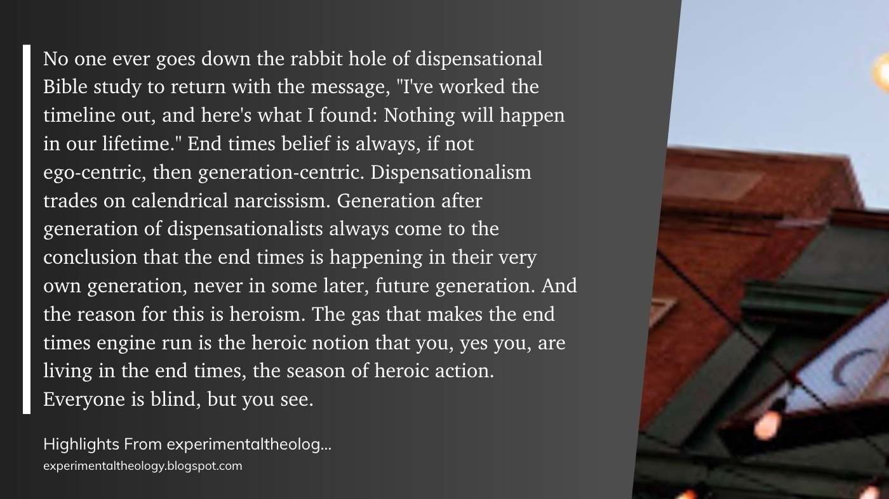

One of the things I do on Monday mornings is to review my Guiding Principles. At the top of the page, I have a couple reminders for how to use them:
- “I have a rule…”
- “I am the kind of person who…”
Because ultimately they are about habit/identity formation.
I’m a delegate at Mennonite Church USA convention later this week. Feel free to mute or follow the 🕊.
“Adversity is such a wonderful teacher”
-Jyotirmoy Sarkar, sharing his story today 🕊
Lot of great book-tracking alternatives coming out. Really hoping they will expose APIs and then we can create tools to update across different places. 📚
Enjoyed this nostalgia trip about Cornerstone Music festival. 🎶
Thanks to @6400099180 for the tip.
What I learned during my first week with a continuous glucose monitor (CGM)
You might be wondering:
Why? Are you diabetic or pre-diabetic?
No, thankfully I am not!
However, data is growing showing a link between metabolic health and many major diseases, from the more well-known links like heart disease to the lesser-obvious ones like dementia and certain types of cancer. I want to reduce my risk for these chronic diseases and also increase my likelihood of being able to continue the types of activities that I enjoy. This is one part of broader habits meant to benefit my health (e.g. good sleep habits, healthy eating, mental & physical exercise, stress management, etc.).
But can't you just eat keto or vegan or whatever my preferred diet is?
About the CGM:
The CGM is applied to the upper arm and stays there for up to 14 days. It's held on by an adhesive patch. While there, it records and holds up 8 hours worth of data. A mobile phone is held up to the CGM to pull in the data to the CGM manufacturer's default app.
Levels has developed an additional app and service that enhances the base data from the CGM manufacturer. It links with Apple Health data and the CGM app data to perform enhanced reporting.
The Levels app takes my notes about food/drink, exercise, or other events (like stressors) and uses these data points to score those actions by looking at the blood sugar for the 2 hours following the activity (they call this a "zone"). Zones are scored 1-10 based on blood sugar response. Days also get a rating of 1-100, and then daily, weekly, (and it looks like) monthly reports are provided.
The three main scoring factors Levels uses are:
- Glucose Variability (lower scores better)
- Average Glucose (lower scores better)
- Time in Target (higher is better, with "target" being 70-110 mg/dL)
The app also builds a catalog of zone scores so that I start to get a profile of healthier activities (10/9/8) and less healthy ones, based on my unique metabolism. It also offers "challenges" of things to try different ways to see what my scores will be, to help me make informed decisions.
What I've Learned:
- Mornings must start right: I see that my days often start on my higher end for blood sugar. In addition, if I have carbs in the morning, it is easier to spike. Prevailing wisdom about this is that our bodies are ramping up cortisol in the morning as we prep for the day (and perhaps start experiencing stressors). One of my friends who is a doctor said this cortisol response is why many heart attacks happen in the early morning! What I've learned is I should skip breakfast, have a very-low (or no-carb) breakfast, or have a mild workout and then have a light-carb breakfast.
- Exercise makes even more difference than I thought: I already knew that taking a walk after a meal is helpful, but I didn't realize just how much. I had a pretty terrible dinner one night (pizza, sport drink, cake, ice cream), and some fun exercise before and afterwards, and my blood sugar wasn't too bad! Conversely (see bullet #1), I've had morning meals that registered as really bad (a #3 score), even when they didn't include sweets.
- Order of operations - not just for math: what order I have my meal in makes a difference. Putting the fiber, fat, and protein at the front of a meal leads to better results than having bread, etc. up front. If there's something a little bad in the meal, having it last really does help. This is likely because the absorption rate of carbs is slowed down by the fiber, fat, and protein.
- Ice cream isn't so bad: Likely a corollary of the above bullet, ice cream doesn't affect my blood sugar too much. This may be my best option when having an occasional treat.
---
Have you used a CGM? Do you have questions for me or ideas for experiments? I'd love to hear from you.

🔒 May 2021 survey data from a ISACA, courtesy of IANS:
- 61% believe their cybersecurity teams are understaffed
- 55% have unfilled cybersecurity positions
- 53% had difficulty retaining talent during the pandemic
- 50% say their cyber applicants are not well-qualified
- 43% are training non-security staff to take on security roles
- 31% believe HR understands their cybersecurity hiring needs
- 22% are increasing their reliance on AI/automation
So my teams are: 2/3rds out (#NED, #GER) and 1/3rd in (#ENG). Guess it’s #ENG the rest of the way! ⚽️
(Context: the Euros are moving towards the semifinals.)
Woohoo! I broke #50 on the readwise.io leaderboard! 📚

Simple DDG vs Brave search engine test:
Searched for my name on both. Brave gave more “commercial” results (services to look me up or that try to aggregate my info for sales). DDG gave more “personal” results (my sites and profiles on some services).

From On Conspiracy Theories and Christianity: Part 7, We All Want to Live a Heroic Life.
Reminds me of how I’ve never met any “double-predestination” folks who think they aren’t one of the elect.
Got started with a CGM tonight. Hoping to find the patterns in the foods and stressors that give me trouble and the foods and activities that help me out. 💪
Still so dystopian that the way we “confirm we are human” is to train Google to detect relevant visual data points for autonomous driving.

📚 Finished reading: Cibola Burn (The Expanse (4)) by James S. A. Corey ⭐️⭐️⭐️⭐️ (fiction)
Finished reading: A Rule Against Murder by Louise Penny 📚 ⭐⭐⭐
What a game! ⚽️ I think I need a Horvath jersey.
(context: USMNT beat Mexico to win the CONCACAF Nations League)
Decent spot to start The Backyard Adventurer 📚
Lots of runoff creeks and urban ponds in my “backyard” area.

"it's hard to decry Constantinianism when you're trying your damnedest to win every election"
During the years of the Iraq War and during the 2008 election, Christian blogs spent a lot of time writing about Constantinianism in voicing their opposition to the war in Iraq. Christian blogs were very Anabaptist during the golden era of blogging. Not so much anymore.
Why the change?
My argument, made in 2016, is that the post-evangelical Christians who inveighed again Constantinianism during the Bush years weren't really Anabaptists. They were, rather, Christian realists in the tradition of Reinhold Niebuhr. That is to say, progressive Christians, as witnessed in the 2008 election of Barack Obama, actually wanted and desired to win and weld the power of the nation state. You saw this hypocrisy in how post-evangelical bloggers hammered Bush with Constantine but said nary a word about Obama's drone war. Turns out, it's okay to pull the trigger when it's your guy holding the gun. And we saw again the thirst to win back and weld power among progressive Christians in the election of 2020.
All that to say, it's hard to decry Constantinianism when you're trying your damnedest to win every election.
This is from the second post in a new Experimental Theology series called "Will the Real Christianity Please Stand Up".
Now, as one of those folks who started blogging in the early 2000s, became Anabaptist during that "golden era", and then maintained that anabaptist perspective, this whole post (ugly parts and all) rings true to me.
Richard Beck's key blog series have become some of my favorite books: Unclean, The Slavery of Death, and many more. I'm very interested to see where this series will go, and how Beck will deal with the "No True Scotsman" problem in the analysis.
---
Thoughts? Let me know!
Another good reflection from Experimental Theology:
“Evangelicals, listen to that, read the Bible: Jesus flatly turns the devil down. And I think Jesus does so for many of the reasons we see in 1 and 2 Samuel. The reign of God just can’t be established via a nation state.”
Chelsea! Chelsea! Chelsea! #CFC ⚽️
…and congrats to Pulisic, first USAmerican male (10th overall) to get to a Champions League Final. #USMNT
Friday Good Reads
Here's the list, in its usual place over in my public notes.
This week covers such topics such as:
- the challenges in "green investing"
- security, GPS, and global logistics
- science!
- a reminder that conflict in the streets biases people towards fearful and authoritarian reactions
- one way to cook Brood X
Drop me a line if you have something to recommend, or have thoughts on any of these pieces!
Finished reading: The Resisters: A novel by Gish Jen 📚
⭐️⭐️⭐️⭐️ Really fun book about baseball that’s not about baseball at all.
📑 Sunday Quote


The third quote here is an important follow-up to the first two.
The reign of Christ does not mean that Christians take Caesar's place in ruling over others. Rather, we are called to embody another way of living together: bound together with love & service rather than power & violence.
Peace to you as you enter this week.


Made stewed rhubarb (with allulose) from my dad’s heirloom plant, today.
First time even cooking rhubarb. Came out slimy-but-good. 👨🍳
🎶 I like to listen to albums. But I also just like to shuffle…sort of. This is how I “smart shuffle”:

Finished reading: Interior Chinatown by Charles Yu 📚
Finished reading: Gods of Risk ⭐️⭐️⭐️ by James S. A. Corey 📚
Finished reading: Parable of the Sower (Earthseed #1) ⭐️⭐️⭐️⭐️ by Octavia Butler (my notes) 📚
Sunday Quote 📑

This is great advice for many behavior changes, not just procrastination. (Make the healthy food visible, put away distractions, place practice music sheets out, etc.)
Here’s where I’d take a little issue, however:
Environment and habit change is how we change ourselves.
Willpower is limited, situational, and varying. The way we make lasting change is to exercise willpower when it is strong in order to set ourselves up for success when our willpower is diminished.
When we do that, we keep taking actions we planned to take, building up habits and reinforcing our sense of identity as someone who is the kind of person we’d hoped to be. This is how change endures.
It’s there something you can change in your environment this week?
-Todd


Finished reading: Abaddon’s Gate by James S. A. Corey 📚
🎲 Paper App Dungeon is too easy to grind. You can just keep carefully moving and backtracking to avoid the bad stuff and hit the good stuff.
Suggestion: -1 HP anytime you cross over a path you’ve already trod, as your character experiences exhaustion.
What rules have you changed?
📑 Sunday Quote and "Persecuted" Christians
I'm part of a tradition (Anabaptism) that has a long history of pacifism and has collected the stories of how they were murdered due to their faith (it's a giant book and not a great read, but you can still find copies).
Also, I live a pretty comfortable life. I grew up in a wealthy country, didn't experience serious health conditions, and have not had to worry about if I would be able to find my next meal. I had access to good education. I haven't been harassed, harmed, or neglected due to the color of my skin. And most importantly for this topic, I grew up in Christendom, a part of the world where Christian belief has been a dominant force in public opinion and even in governance.
It's in these areas of Christendom where I am surprised (and frankly, embarrassed) when Christians talk about being "persecuted". Christians in Christendom often read Bible stories and see themselves in the narratives as the Israelites enslaved in Egypt, or the early Christians under Rome. But what we must realize is we are more likely to be on the side of Pharaoh, Herod, or Caesar.
When you dig into it what "persecution" these Christendom-Christians are facing, it usually ends up being one of two things:
- Social consequences for conservative ideology and/or for bigotry
- An underlying fear that we are moving into a post-Christendom world
Neither of these are persecution. Let's talk about them in order.
Social Consequences
One of the problems with Christendom is that Christianity syncretizes with the government, with the dominant political beliefs, the dominant economic order, and/or with nationalism. Christians begin to conflate being part of a party, ideology, or nation with being a Christian. We can end up working as hard (or harder) for those beliefs than we do trying to follow the Lamb.
.png?disposition=attachment)
Specifically, far too many Christians in Christendom have an unhealthy (and frankly, heretical) confusion of social conservatism and Christianity. They attempt to wield the power & violence of the state to control non-Christians' personal beliefs and actions, most egregiously and notably in issues of sexuality. This isn't the gospel, and it's not behaving like the one they proclaim to follow (who specifically refused power-over temptations when Satan put them to him!). And when people react to this controlling (and often bigoted) behavior with condemnation, social sanctions, or defensive legislation, it's not "persecuting" the Christian. The Christian was the aggressor, here.
Post-Christendom
This is unsettling for Christians who enjoyed (whether they realized it or not) being in the seats of prestige and power. But as the saying goes, "When You're Accustomed to Privilege, Equality Feels Like Oppression" In other words, losing privilege is not the same thing as being persecuted.
Ok, But What About Real Persecution?
- Mat 5:44 But I say to you, love your enemy and pray for those who persecute you
- Rom 12:14 Bless those who persecute you, bless and do not curse.
- 1Co 4:12 When we are verbally abused, we respond with a blessing, when persecuted, we endure
- Heb 10:33 At times you were publicly exposed to abuse and afflictions, and at other times you came to share with others who were treated in that way.
- 2Co 4:9 we are persecuted, but not abandoned; we are knocked down, but not destroyed
- Gal 1:23 They were only hearing, “The one who once persecuted us is now proclaiming the good news of the faith he once tried to destroy.”
- ...and many more
Jesus and early followers of the Way were very clear about not returning evil for evil. In fact, the church has often grown the most in places and times of persecution!
While we don't desire persecution, the duty of a Christian is to follow the third way when encountering it, to bear witness to shared humanity, to goodness, and to a God who loves all people.
---
Have thoughts? Here's how to respond.
Had a “repeat customer” through our mentoring system at work. They said a little bit about how our work together helped, and what they’re looking to accomplish going forward. Feels good!
Social decisions are inherently political. The question is what kind of political they will be, whether they will be partisan, and whether they will uphold the status quo.
Sunday Quote 📑

Have you heard of The Unicorn Project? It’s the follow-up to the great Phoenix Project. As I said in my 2021 book review:
"what Kim did for Ops & DevOps in the Phoenix project, he has continued for product development in this work"
Both of these books use narrative to demonstrate the move to agile ways of working and devops transformations within an auto-parts selling business.
These five ideals are very helpful for looking at ways to enhance a technology practice.
—
Here’s where I’m going to "think out loud" again. As I read these, I realized they’d make a better framing for how I’ve been approaching some challenges my team faces at work. I’ve been communicating with my manager using the perspective of "accountability without authority or responsibility", and while that’s true, the Unicorn Project ideals might be an even better lens by which to view the problems.
Let me work through them to see what we are doing or could do in each area.
Locality and Simplicity
To solve these, we need to create local ownership and reduce waste & complexity. Instead of there->here->there work, we can improve this in one of the following ways:
- here->here->there: meaning that my team sets the direction, rather than receiving it, but the other team still manages the result
- there->here->here: meaning that my team still receives the direction, but has more capability to finish the work on their own
- there->there->there or here->here->here: meaning that one team has full ownership for direction, results, and problems for an area of work
Focus, Flow, and Joy
Altogether, those equate to very little time for focus or deep work. That results in less satisfaction and joy as people feel like they are constantly juggling instead of achieving momentum through wins.
We’ve got a few irons in the fire on this, too:
- "No Meeting Wednesdays": we instituted this recently, and while not perfect (due to stakeholder meetings and increased interruptions from people who know we are "free"), it helps there be the chance for blocks of time for focus
- "Ways of Working" agile alignment: I’ve been proposing that we get all our work visible under one mechanism, so that we can better manage priority, work-in-progress, etc. It would also help to have requests come in a common way, reducing interruptions. We’ve got buy-in now to get some agile coaches working with our broader org on a group transformation.
- Using collaborative tools: Many interruptions can go away if we have standard means to keep one another up-to-date or make decisions. I’m helping push adoption of these ways. (Kanban boards instead of status meetings and inquiries, asynchronous work out of the same document rather than a meeting for committee-editing, decision-records and next-actions captured in writing, etc.)
Improvement of Daily Work
Instead, I try to make up for some of this deficit by spending a lot of my time on this, looking for ways to help the team. Creating clarity. Creating or sharing resources that make things easier. Promoting the internal sharing of best practices, wins, and lessons-learned. Cutting waste. Eliminating blockers. Etc.
Psychological Safety
It wouldn’t be appropriate to say much here (as it could affect psychological safety!), but I will say that I seek to promote psychological safety by being transparent, authentic, and non-defensive. I look to give opportunities for people to stretch themselves in a safe manner. I aim to make sensitive constructive comments in private and heap praise in public.
Customer Focus
The first is the most important: the end costumer of the product or service. Do we know what they need, and is our work ultimately serving them? Or are we creating waste and doing pet projects?
The second is the internal customer, or stakeholder. This one is easy to overlook, especially if a team isn’t used to thinking about having customers, which is an all-too-common occurrence in the technology world.
To help with this, what I do is to advocate for customer and stakeholder perspectives up front and every step along the way, both in my team and for the teams where we are the internal customer.
- Who will use the product or service?
- What do they need?
- How does that inform our requirements?
- Is somebody getting their perspective and feedback?
- Do you need to get their buy-in for the solution?
- Is there an easy way for them to give you feedback and see that you are doing something about it?
- etc.
If your org has a product-owner type role, this helps a great deal!
I hope taking a look at these 5 ideals was helpful for you. If you’ve used them to examine some ways of working, tell me about it!
Originally posted at Hey World
📚 Finished Reading: Ursula K. Le Guin: The Last Interview
Recommended for any fan of her work or anyone seeking wisdom.
.png?disposition=attachment)
I don’t have a lot to say about this book, but I did make many highlights of quotes that were interesting, funny, or worth pondering. You can peruse them from within my public notes, here.
What’s your favorite Le Guin work? Let me know!
Originally posted at Hey World
Friday Good Reads
My favorite so far this year comes from moxie0, who wrote an excellent technical table-turn on a company that was trying to exploit secure-communication platform Signal.
That and other reads are available in my public notes.
Anything you read and want to recommend? Let me know!
Originally posted at Hey World
📚 Finished Reading: Why Nations Fail

Why Nations Fail by Daron Acemoglu, James A. Robinson ⭐️⭐️⭐️
Here’s the summary from my public notes:
Extractive political institutions and extractive economic institutions create a reinforcing vicious cycle. “Extractive” institutions are ones where the power and wealth are funneled towards a controlling group.
Conversely, inclusive political and economic institutions create a virtuous reinforcing cycle. "Inclusive” institutions are ones that have pluralistic power and rule of law.
Inclusive institutions support longer-term planning, because people can rely on rights & protection, and thus save and invest in education & innovation.
These ideas are, at their core, basic classically-liberal principles.
The authors have done a good job of showing how inclusive institutions lead to growing nations, and how extractive institutions can lead to capture, authoritarian regimes, or societal collapse.
What the authors have not made a case for is why growth is the most important means of measurement, nor why centralization of power is required for inclusivity. (One can imagine decentralized systems that protect rights and rule of law, for example). Nor have the authors deeply examined resource/environmental extraction and what that will mean for the future of all institutions, should our approach to natural resources not shift to an inclusive model.
Have you read this book or one of the others that talk about why nations rise and fall? Have any recommendations on what to read next? Let’s discuss!
Originally posted at Hey World

New abolition curriculum from Mennonite Church USA.
I’m a little surprised to see the denomination being this bold these days, but there’s a good history of it.

🖋 Ugmonk Analog + Baron Fig Strategist

I love the idea of Ugmonk’s Analog system. Yet, as you may know (from a previous post), I have a system that is working well for me for daily notes & tracking tasks.
Still, there are times I need to jot some notes by hand. Maybe I’m brainstorming, doing a little journaling, or writing a follow-up while presenting (a common occurrence).
The good news is that Baron Fig’s Strategist cards fit in the holder perfectly, too. You get the nice standing view, as well as the card storage in the block. I expect this would work well with any rounded-corner 3x5 index cards, too. (If you have others that you try, let me know!)
(pictured on top of my super favorite veg-tan Hobonichi cover, with a TWSBI Go Smoke, and Sailor ink)
-Todd
Originally posted at Hey World
📑 Sunday Quote

There’s this tendency in modern conversations of justice to look at everything as zero-sum, winner-or-loser, exploiting-or-exploited.
It’s been exacerbated by celebrity figures who push this line of thinking, as well as by advertising-driven social media algorithms picking “winners” in virality wars.
But we have to do better than that. We have to want a better world for everyone. We have to look at how improvements can make things better overall.
We don’t get there simply by being anti-. We don’t get there by treating others as enemies to be defeated. Rather, we can look to others as potential co-conspirators ready to tackle challenges together.
One way to step out of the enemy-making view is to look at a level level above the individual. What is the mood of the group? What is the spirit of the organization? What is the faith of the locality? What is the tone of the structure?
You can mix and match these words, too. The Christian Bible talks about the “principalities and the powers”. German philosophers talk about “the zeitgeist”. You may have another metaphor.
However we think about it, before we go after people, let’s take a moment to think about the overarching system affecting the problem. What powers are at work, and with that in mind, how can we work with others to make things better?
-Todd
Originally posted at Hey World
📚 Finished Reading: The Feather Thief

Read it and want to discuss? Hit me up!
—
Tagged: Nonfiction
Originally posted at Hey World
Sunday Quote 📑

Crucial Conversations is an important book with a very helpful perspective.
If I go into an challenging discussion just trying to get my way, I’m not helping the situation. If I go into a challenging discussion acting like I care about the other person’s perspective, I’m still not helping the situation. It’s only when I actually care about their perspective that we can find a wise path forward.
Are there discussions you’ve been avoiding? Do you have the capacity to care about their perspective? Do you have courage to have the talk?
May you live a bold and caring week ahead!
—
Tagged: Grow
Originally posted at Hey World
Saturday Creek Stomping
First fun thing I saw today was a pair of ducks that seemed understandably wary of me, but otherwise seemed to be loving the weather.
Next, I noticed somebody has been planting (grafting, maybe?) heritage raspberries along the back side of one of the runoff creeks. I couldn’t identify them at this stage, but they were labeled and had stakes to help them grow. I fixed one that had lost its support. I don’t know how safe those will be for human consumption due to the runoff from parking lots (if you have thoughts, please share!) but they should be a nice addition at least for the animal life.
I couldn’t navigate everywhere I wanted, due to the depth and speed of the water, but I had a lot of fun. This reminds me that I’d like to get some nice waders. (Any recommendations?)
On the way back, I startled a rabbit. We spent some time watching each other, and it was good. The bun was a little wet from the rain but still fluffed up, finding shelter under a neighbor’s trailer, and looking warm.
I love these little local jaunts, and hope someday to have a place where the jaunts are even better.

Happy spring to you!
-Todd
Originally posted at Hey World
Friday Good Reads
- cephalopod intelligence!
- AI
- religious freedom
- streaming as a cultural unifier
- the future of travel
- and more!
Still got jelly beans around from easter? You can also try the jelly bean prayer.
Read anything interesting this week? Please share!
Originally posted at Hey World
Sunday Quote 📑 Easter Edition

Hallelujah! Jesus has conquered the forces of death.

So let us do our part to keep the resurrection going, to keep redeeming, to keep bringing life.
Happy Easter!
Originally posted at Hey World
Jelly Bean Prayer

- Pink: Where has the Spirit been moving? Do you sense any prompting?
- Red: What are you avoiding? Where do you need support?
- Orange: Name a blessing. Express gratitude.
- Yellow: What have you lost? What hurts? Cry out.
- Green: Where is there new life? What needs redemption or resurrection?
- Purple: Reflect on the life & teachings of Jesus. Where should you follow?
- Black: Memento Mori. Consider your death.
- White: Where do you sense peace? Where can you help make peace?
May this be useful to you.
Originally posted at Hey World
Friday: Good Reads
This is the Friday roundup/reminder for things I enjoyed reading this week: linked here. Stories and topics include:
- a few minimal technology ideas
- good news and some warnings re: the health of our planet
- Brood X - the incoming cyclic cicadas
- a Bruderhof take on nonviolence
- octopod dreaming
- warnings about the voter-suppression movements happening in the USA
- and much more
This week, I wrote about:
- why I recommend Readwise.io
- a quick response to an allegedly-Christian shirt I saw in the news
- a book review of Harrow the Ninth
- a few thoughts about Guiding Principles
Originally posted at Hey World
“Hang him! Hang him!” the mob demanded.
A violent insurrectionist was to be freed to the mob. But this nonviolent revolutionary from Nazareth would hang. For he represented the greater threat to their structures, their systems, their privilege, their way of life.
I recommend Readwise

Every day I read through 15 or more of the highlights (and associated notes) I’ve made from things I’ve read (books, articles, tweets). It’s a great way to retain the best information, reflect on lessons, and synthesize new ideas from different sources.
I also export my book highlights into my books pages (that’s where you will sometimes see a “exported notes and highlights” section on nonfiction). If I listened to the audiobook, I’ll hand jot some notes instead, but I opt in for seeing other peoples top highlights in Readwise for those books. Those stylized graphics I use for quotes? Also courtesy of Readwise!
For daily reviews, I’m #54 on the leaderboard and determined to get to the top.
Originally posted at Hey World


📚 Finished Reading: Harrow the Ninth
Tagged: Fiction

This is the second in a series of mega-horror, murder-mystery, sci-fi, fantasy, all-the-genres books.
You may not guess it based on giving it 4 stars, but it took me a long time to get through this book. Why? Because it’s tough.
Look, I’m not dumb, but this book often made me feel almost-dumb. With a plethora of fringe vocabulary, deep mysteries, strange perspectives, unreliable narrators, and a significant plotline that appears to contradict the whole first book…it was a challenge to wrap my head around.
Here’s the thing though: I like to be challenged in my reading. It’s just that this was a fiction book and therefore a “before bed” read, meaning I often didn’t get far with it before going to sleep.
It takes about 4/5ths of the book before things start to come together, but it’s worth the wait.
I’m looking forward to book 3!
Further reading:
Gideon the Ninth, the first in the series. Also ⭐⭐⭐⭐
Guiding Principles
Guiding principles are a set of statements about how we will act, based on what we believe.
Maybe you have them for an organization where you work or volunteer? Maybe you have some for your church or other group?
In my world, I also wrote 6 Guiding Principles for my team at work (written with my team at work), aligned to our corporate Guiding Principles, but adding more specifics based on the type of work my team must do.
I also have a personal document where I am writing and evolving my own Guiding Principles and Operating Procedures. (Operating Procedures work similarly, but are aimed at a more detailed level, helping to forge habits by having a pre-defined decision on how to act in particular situations.)
As part of my Monday morning weekly planning, I look over my Guiding Principles as a way of reminding myself what’s important and how to act accordingly.
-Todd
Originally posted at Hey World


Security Tax
"If you can’t afford to protect it, you can’t afford to deploy it."
Unfortunately, many services treat basic privacy & security features as an add-on, rather than table-stakes for operating.
One frequent model is for services to market themselves at the user level, grow a userbase, and then charge organizations to manage access and security. (Yammer and Slack grew this way, for example, as have many others.)
I recently came across this resource that is specifically fighting the SSO (single-sign-on) security tax.
They explain why SSO should be a default in many services, or at least a reasonable upcharge. There’s also a table of data showing the delta between normal price and SSO-included price. Take a look!
Now, I’m not saying all services require SSO. I’m not saying all services need advanced security & privacy features. But each SaaS provider should look at the incentives they are creating, consider the needs of their users, and act accordingly.
tagged: @security
Originally posted at Hey World
Lean Security - Introduction
How do we build in helpful behaviors? How do we make doing the right thing easy? How do we make things repeatable, scalable, and resilient? How do we spend our time on the most valuable things?
There are, of course, multiple interesting answers to these questions and many things our teams are doing to excel in these areas. But one of the things that came out of this discussion was that our CTO was having engineering leaders go back and read the (now classic) book, Lean Software Development: An Agile Toolkit by Mary and Tom Poppendiek.
So, I decided to do the same, and I also planned to share the lessons with my direct team (of Business Information Security Officers) and the broader team of Risk & Security. One of the BISOs on my team (who has also read the book) has also volunteered to work with me on materials. We’ve got a great partner, too, who will help us turn the lessons and principles into handy resources that the broader team can use.
So what is this writing for, then? This is my out-loud pre-work before we make those materials for the team.
I’m calling this series “Lean Security” instead of “Lean Software Development” because I’m coming at it from these two angles:
- What do risk & security professionals need to understand about their product & engineering customers?
- What elements from Lean Software Development also apply to security practices & products?
We have to be careful with the second bullet. Why? This is covered in the introduction of the book:

What’s the difference, you might ask?
.png?disposition=attachment)
With that in mind, we’ll focus on the principles. We’ll reflect on how security practitioners can be good partners with alignment to people practicing Lean Software Development. We’ll reflect on what security Practices we might follow to carry out lean Principles.
Here’s the refresher of the Principles:
- Eliminate Waste
- Amplify Learning
- Decide as Late as Possible
- Deliver as Fast as Possible
- Empower the Team
- Build Integrity In
- See the Whole
Future posts in the series will cover each principle.
I’m happy to hear your thoughts, questions, or insights along the way!
—
tagged: Security
Originally posted at Hey World
🎶
melt swords of steel
and hearts made of stone
set pris’ners free
give strangers a home


note: from Voices Together. Get a copy here.
Sunday Quote 📑

This is a quote I have in my favorites simply so that I get the reminder frequently.
In another of his books (Food Rules) Pollan also says:
The banquet is in the first bite
and
No other bite will taste as good as the first, and every subsequent bite will progressively diminish in satisfaction.
and
…as you go on, you’ll be getting more calories, but not necessarily more pleasure.
In many attentive eating paradigms (the works of Michael Pollan, mindful eating, intuitive eating, Naturally Slim, etc.), there is a focus on really paying attention to and enjoying what we are eating.
Part of the unhealthy habits many of us have learned around food contribute to food moving from something to savor to something to consume. Like other parts of consumer culture, we look for the latest “advances”, the best bang-for-our-buck, the quickest thing, the most popular thing, the best advertised thing, or the super-utilitarian-just-get-the-nutrients-in-me thing.
Whichever of these we drift towards, our relationship with food moves away from thinking of food as something to enjoy in-and-of-itself, shifts away from cultural food traditions (with all their accumulated wisdom), and shifts away from (non-performative) eating with our community.
This reminder, then, is a simple call back to paying attention to what is being eaten.
Take a small bite.
How does it smell?
How does it feel?
How does it taste?
Does it change as I chew or as it lingers in my mouth?
Following this paradigm, a few things happen:
- I enjoy my food much more
- I’m amazed how the tiniest of bites can give as much (or more) satisfaction as a large one
- I realize that after more than a few bites of anything, I’m not enjoying anymore, but merely consuming
- I realize my fullness much more quickly
- I can eat my foods in any order I want, because I won’t overdue it with anything on my plate, but know I will move on once I am no longer enjoying that item
Now, there is one big exception to this “intuitive” approach to eating. Some of these programs handle it, others may not.
SUGAR is basically a drug.
Sugar makes us more hungry. Seriously. Because of the way fructose and glucose work in the body, having sugar (and even simple carbs, which are effectively glucose) causes our bodies to store fat and ramp up our appetite. So, “intuition” gets short-circuited by our biological processes.
Pollan has lots of advice to help avoid this trap. Naturally Slim advocates cutting sugar. I’m not sure if Intuitive Eating handles it. (email me if you know?)
Because I used a Pollan quote related to dessert, let me pair it with these other practices from Food Rules, in order to present the more-complete picture. Bold is Pollan’s wording, italics are my comments.
- 4 Avoid food products that contain high-fructose corn syrup.
- 5 Avoid foods that have some form of sugar (or sweetener) listed among the top three ingredients.
- 35 Eat sweet foods as you find them in nature. (e.g. whole fruit with fiber)
- 37 “The whiter the bread, the sooner you’ll be dead.”
- 39 Eat all the junk food you want as long as you cook it yourself. (e.g. if you want pie, chips, or ice cream you gotta make it from the raw ingredients!)
In the week ahead, this is a good reminder for me to be mindful. To eat rather than consume. May it be helpful for you, as well.
tagged: @Eat
-Todd
Originally posted at Hey World
Pen Pals
It’s fun to put real pen to real paper. It’s fun to give and receive. It’s fun to find something in the mail.
I found myself feeling a bit overwhelmed with the prospect of writing back, over time. As I contemplated this, I realized that I felt mounting expectations from longer correspondences, and the idea of having to cover things just so or in a specific way. So here’s the rule I’m using to get me back into it:
- Postcard only
I’ve got plain craft postcards that will be my default, though I have some other postcards I could use, too. This constraint will help with my creativity and responsiveness. I may open back up to longer letters as I’m back in the flow, but this is how I’m getting back to it, for now.
So, if you’re one of those folks waiting to hear back, it will hopefully not be much longer! I plan to finish any open threads this Sunday.
If you want to become pen pals, send me an email first and we’ll work it out.
-Todd
Originally posted at Hey World
My Keto Question on the Peter Attia Drive Podcast 🎙
They’ve had many deep dives on various issues of metabolism and metabolic syndrome, something that we are seeing is at the heart of many modern chronic diseases. I was connecting the dots among a few episodes, and had some questions, which I submitted.
On the latest Ask Me Anything episode, they addressed my question. I’m copying that part of the show notes here, under fair use. If you want to hear the AMA episode(s) or get access to show notes and other benefits, please become a subscriber.
—
From AMA 21:
Electrolyte supplementation during fasting and keto, and why uric acid may increase [59:30]
After listening to the Dom D’Agostino AMAs (Part 1 and Part 2) and the Rick Johnson episode, a subscriber has a question about electrolyte supplements as well as about salt and uric acid and ketogenesis:
If salt does this conversion to fructose in the body, how is that affecting keto?
- “Good question. I don’t think I know the answer.” says Peter
- As a general rule, the salt supplementation in keto is really not necessary for everyone, and personally for Peter, he doesn’t find it necessary during his brief periods of keto (and even when he’s short periods of fasting)
- However, during the longer fasts, Peter does need sodium, but that’s because he’s not eating food and he’s trying to just get sodium back to normal levels
- In keto, he does not supplement sodium at all, but he does supplement magnesium
- Again, when he’s fasting, he needs more magnesium and sodium, but that’s just to bring him up to what he’s not getting with his nutrition
Potential change in uric acid
- Peter says why uric acid may increase is an interesting question and he’s not sure he knows the answer
- But he has some thoughts on it…
- First, we clearly see uric acid spike during a fast
- And, there’s probably also an increase during ketosis
- Is it transient in ketosis?
- If so, is it because uric acid and BHB are competing for the same transporters in the kidney? ⇒ That would obviously explain why you would see it in a fast
- An alternative explanation, which doesn’t have to be mutually exclusive, is that uric acid is going up because of the turnover of DNA that would take place during a fast, vis-a-vis autophagy and things like that.
Originally posted at Hey World
I’m interested in Jeremy’s Work Experiment.
I know I’d do better with a block in the morning without meetings and back & forth. Right now, we have an agreement in my broader team for “no meeting Wednesdays” which has helped a little to have some focus time.
Processing my Leadership Competency Survey
The Background:
All the leaders in my broader group (think: my boss’s boss’s group, about 800 people) are going through a leadership curriculum. As part of this, we had a leadership competency survey that went to our manager, a small number of self-selected peers, and a small number of self-selected stakeholders. There were 27 questions rated 1-5, with 3 questions for each of the 9 competencies that were being measured.
Initial Observations:
- Benchmark: One of the first things I looked at was whether I exceeded the benchmark score. This was not simple vanity: it’s at the top of the report. The summary shows how I scored myself overall, how each of the respondent groups rated me overall, and how the broader respondents rated everybody (the benchmark). I’m happy to see that I exceeded the benchmark, but without a view of the distribution I can’t tell for sure how significant the difference is. I realize I should not spend too much time here, as it’s comparative with others and not necessarily fruitful.
- Perception Gaps: Next, the survey advises to be wary of gaps between the self-rating and those of respondents, or between types of respondents. They suggest that 1 point (in either direction) is cause for concern. I’ve made progress here! In other community assessments (e.g. EQ360) in years past, I significantly underrated myself. I’m pleased that I still erred towards under-estimation, and that the margin of under-estimation has dropped to 0.28 points (on that 5-point rating scale). My goal is to continue to get that closer to 0, but as long as there is an error, I’d rather it be on the side of under-estimation. I had no major gap between respondent group types, which indicates I’m not overly-prioritizing some audiences over others. Later in the report we’ll look at gaps on specific rating areas.
- Competencies: Across the 9 competencies, mine were all clustered around the same rating (only 0.27 difference between my best and worst), with scores I’m happy with. The only surprising result here was “Dare to Be Curious” being my worst. Why? Because curiosity is one of my primary approaches, especially in challenging moments or situations. Looking at the three questions that contributed to that competency rating, my lowest result (4.6) was for “Asks the ‘right’ questions to size up or evaluate situations”. I know that sometimes I go too quickly to brainstorming and solving instead of asking coaching-style questions. I’ll continue to work on this practice. Here is the ranking of my competencies, in order:
- Model the Way
- Value Every Voice
- Respect Differences
- Connect with Purpose
- Improve and Grow
- Partner for Success
- Embrace Transparency
- Make it Happen Today
- Dare to Be Curious
Breakdown:
I like the way they’ve looked at the four quadrants based on self-rating and respondent rating. E.g.:

- Strengths: These are the top 5 areas. As with StrengthsFinder I should lean into these. I am glad all of these are in the Strengths section:
- Welcomes the contributions of team members
- Treats people with respect
- Keeps others informed about decisions that affect their job
- Openly discusses my career path goals with me
- Demonstrates strong business/personal ethics
- Areas for Improvement: These are my bottom 5 areas. These are questions where the answers are a little painful and represent my biggest development opportunities. I’m not going to beat myself up about these, because even my worst was a good score (4.56 out of 5), but they are still places where I can and will continue to grow.
- Fosters an environment where employees want to do their best
- Asks the “right” questions to size up or evaluate situations
- Understands how to get things done through formal/informal processes and procedures
- Openly shares mistakes, shortcomings and failures to help others learn and avoid similar issues
- Has the ability to link long-range visions and concepts to daily work
- Hidden Strengths: Earlier, we talked about how being off by a whole point could be a gap in perception. Well, these are the two questions where I scored myself a point less than my respondents (I gave myself a 4 and they gave me a 5). I should update my perspective in these areas:
- Treats people with respect
- Keeps others informed about decisions that affect their job
- Blind Spots: none! There were no questions where I gave myself a point more than the respondents did. I’m very happy to see that.
This was a good experience to go through. I’ll look to lean in more to my strengths, continue to work on my areas for improvement, and update my perceptions of my skills.
Originally posted at Hey World

Sunday Quote 📑

As is often the case, Le Guin shares an insight that is simultaneously cutting-and-beautiful.
What she’s described here gets at why I like and prefer the term
This post was cutoff because we are still debugging crossposting from Hey.com. See the original here.

📚 Finished Reading: An Altar in the World

I had heard the author’s name before, but resolved to go read one of her books upon experiencing one of her reflections in my Lenten readings (collected
…
this feed cutoff because we are debugging feed copying via IFTTT. See the origianl post here

There’s a topic I’m tentatively calling “Stand for Something”. It’s about the weakening of “filtering and alignment” capabilities in modern society.

Oh this will be interesting: Just Plain Wrong

![Frederick Douglass wrote in his autobiography, “Between the Christianity of this land, and the Christianity of Christ, I recognize the widest possible difference – so wide, that to receive the one as good, pure, and holy is of necessity to reject the other as bad, corrupt, and wicked. I love the pure, peaceable, and impartial Christianity of Christ; I therefore hate the corrupt, slaveholding, women-whipping, cradle-plundering, partial and hypocritical Christianity of this land. Indeed, I can see no reason, but the most deceitful one, for calling the religion of this land Christianity."](https://blog.grotenhuis.info/uploads/2021/35d6015eb6.jpg)
How I take my daily notes in Craft
I’ve used Evernote, Roam, Obsidian, Notion, Bear, Drafts, IA Writer, various Zettelkasten tools, and many other systems to try to organize all my notes. But none of them have worked for me like Craft.do has.
I can’t put my finger exactly on why it’s the winner, but it’s some combination of features, speed, visual appeal/distinctiveness, and customer-responsiveness. (The price point is great, too!)
I have three different workspaces:
- My second brain/public notes/digital garden (link)
- Personal notes & tasks (what we’re here to talk about today!)
- A shared space for home & family1
So, how am I handling my personal notes & tasks? Let’s dive in.
Considerations
I want notes to be easy-to-enter. I want them to accommodate both daily planning, ongoing note-taking, and tie-ins to project, people, or topic pages.
I like the idea of Leuchtturm’s 5-year journals, which give the ability to look back on what I was doing this day in previous years. But, for me, it’s hard for me to to keep a good habit of writing in them.
The Setup
I created a top level page (a “Document”, in Craft parlance) called “Dailies”. I made it one of my Starred Documents for easy access.
“Dailies” has sub-pages for each month. Each of those subpages has day subpages. Here’s what that looks like.

Let me explain a few things you’re seeing here.
First, sub-pages show a bit of their internal content, by default2. I didn’t start until the 10th of January, so that’s why you’ll see January’s first internal entry being “10”.
Second, you’ll see March is empty but April is not. This is because I created the April 1st entry ahead of time, because I have something planned (for April Fools). This is an intended feature of my system: the ability to put a note or task on a future date, so that I see it when I get there.
Third, you’ll see the bottom of this page (and all pages) have a “Links To This Page” section. These are backlinks, an important feature. Craft supports linking to pages, subpages, and lines/blocks to show the backlinks on the page that is being referenced elsewhere.3
The Month
Ok, so what does it look like when we dive into a month? Here’s that April view.

I went ahead and created the 2nd through 10th subpages, so you can see how the month view shows up. There’s nothing particularly exciting about the monthly subpage. It’s just a container.
But, as you can see with April 1st, I’m setup so that there’s a little preview of the top content for each day.
Let’s move on to…
The Day
Ok, this is the heart of it, then. Here’s how I might take notes for a day:

Again, a few points to note:
You can see in the upper left the hierarchy of notes I’m “in”. This is in my Dailies page, February subpage, and 19th page.
To get that year-over-year view, I’m using a toggle list feature to create a section for the year (and then for future years). This allows me to open the toggle and review previous years when I first open the note in future years, but then close the toggle to focus on the current date/year.
My notes are a combination of things I want to accomplish, things I’m considering, and micro-journaling of what I do throughout the day.
All of these lines can be subpages themselves (meaning I can go into it and take more notes), or can contain links to other pages, subpages, or blocks within my workspace. I often link to pages I’ve created for projects, people, or topics. (and then on that page I can see backlinks to this reference!)
The tasks can be checked off and completed.
Finally, just as I’ve linked out to other places, I have backlinks inbound to this date from other places. I can follow those links to see the connections.
Not pictured: I can add in-app sketches, scanned notes, documents, or images to my daily page.
Other Factors
I also keep a document that is my intake document, so all items that come in from OSX or iOS sharesheet go there first.
I have templates, including day start, week start, and week end. These include processing that intake inbox, making sure new notes have the correct home, and completing my planning and review activities.
Conclusion
I’m finding this process works very well for me. It’s easy to stick with. It let’s me keep everything in one place. It lets me find and search for what I need, easily. It’s not ugly. It’s fun to work with.
Would something like this work for you? What questions do you have?
- Note: the 2nd and 3rd spaces will move to “Craft Connect” and “offline spaces” for additional privacy and control, when those become available in the near future. [return]
- Though as with much in Craft, you can edit how things are visualized, more-so even than in some word-processing documents, and including in some ways that are unique to Craft. [return]
- You can’t see unlinked references to a page, yet, but this is a feature they are considering. [return]
I appreciated this episode of the Peter Attia Drive as their latest masterclass in insulin resistance.
The consistent advice is to cut out fructuose and reduce glucose (simple carbs) until in tolerance.
But exercise really does matter. It affects how muscles dispose of glucose.

Beautiful Trouble updated their toolkit.
With the new toolkit you can slice and dice depending on what you are considering, and also create pdfs from your favorites.
This is a nice online companion to the deck of cards.
43
 Photo by Hans Eiskonen on Unsplash
Photo by Hans Eiskonen on Unsplash
There are six things that the Lord hates, even seven things that are an abomination:
haughty eyes,
a lying tongue,
and hands that shed innocent blood,
a heart that devises wicked plans,
feet that are swift to run to evil,
a false witness who pours out lies,
and a person who spreads discord among family members.
Proverbs 6: 16-19
43: the number of senators who were too scared or too shortsighted to vote in favor of conviction.
Unfortunately, it’s not surprising that the vote did not pass. More interesting is that there were actually 7 brave senators who did the right thing. In the modern USA, tribal affiliation & licentious grandstanding are much more important than truth, liberty, or justice.
“This is not who we are”, people said after mobs attacked congress. But unfortunately, it is part of who we are. And the result of this vote is another signal that it is part of who we are and who we will continue to be.
That is why I said “shortsighted”: far too many people are continuing to normalize lying and violence as acceptable means to achieve political goals. This is the road to ruin.1
This vote (and continued denialist behavior) all-but-guarantees that we will have more political violence. Further, the next populist & would-be-autocrat is unlikely to be as bumbling as 45, and much more capable at helping the powerful & politically-connected at the cost of everyone else.
All with good will towards humanity should seek to prevent the rise of the next dangerous populist, and to limit the harm that they can do if they gain power.
Here are some of the things Christians are called to do:
- Speak truth and refuse conspiracy, lies, and false witness2
- Love our neighbors and the people we encounter, especially ones unlike us3
- When we feel a loss of power & privilege, feel maligned, or have been harmed: love our enemies & persecutors and pray for them4
- Seek the good of the poor, the prisoner, the ailing, the oppressed5, the widow, the orphan, and the foreigner6
- Dismantle our weapons and create tools that support life7
- Lying and violence are especially being normalized for groups that already have great power, with peaceful protests from among the marginalized being attacked and labeled as terrorism. This combination is not only the road to ruin but the road to fascism. [return]
- Exodus 20:16 [return]
- Luke 10: 25-37 [return]
- Matthew 5: 43-48 [return]
- Luke 4: [return]
- Zechariah 7: 8-10 [return]
- Isaiah 2:4 and Micah 4:3 [return]
Sunday Quote

(Disclaimer: Wink is not being a gender essentialist here, but rather speaking to historical context)
🔒 Opinion: the OWASP Cheat Sheet Series is the most underappreciated OWASP project.
Questions for people who say “politically correct” and “cancel culture”
- Do you think it’s wrong to extend basic decency to people in the way we talk to them and about them?
- Do you think it’s wrong for there to be consequences for our behavior?
- Do you agree actions (especially harmful actions) have consequences, but are afraid there are too many, too much?
- Do you personally know someone who has lost their livelihood due to a truly minor offense?
- Are you allowing people to manipulate you into being more scared of consequences than you need to be?
- Why do you suppose someone might be pushing to create fear, paranoia, and sense of persecution?
- What ends might that push be serving?
🎲 Great writeup of my favorite game system(s): Burning Wheel 🔥☸️
Summarizing:
- pioneer in transparency, character goals, “say yes”, “let it ride”, and “use-based improvement”
- emergent story, character, & setting complexity
- unique, character-driven play
- minigames
- rewards mastery
James Clear came to our all-hands meeting today and presented the story and takeaways from Atomic Habits. 👍
📚 Finished Reading Give and Take by Adam Grant ⭐️⭐️⭐️
I am skeptical of “put people in categories” books, due to all the evidence we have that things like this are not hard & fast categories. This book still had important wisdom to share.
Knowing My Strengths

Do you know your top strengths? When it comes to personal assessments, the Strengthsfinder (or Clifton Strengths) is my favorite. Based on research from Gallup, Strengthsfinder looks at 34 different themes, and helps you understand what your best approaches are.
You can get the Strengthsfinder 2.0 book here. It includes a code to take the short assessment and receive your top 5 strengths. (You can also unlock more of your strengths on their site.)
The research behind the strengths shows that we can make a much bigger difference by leaning into our strengths than by focusing on our weaknesses. While we might need a certain level of baseline proficiency for some roles & responsibilities, after meeting those requirements, our time is most impactful if spent on the ways where we do our best.
My top ten strengths are the following:
- Activator (I)
- Intellection (S)
- Analytical (S)
- Ideation (S)
- Command (I)
- Connectedness ®
- Input (S)
- Strategic (S)
- Learner (S)
- Self-Assurance (I)
You may be wondering about the letter after each (or the corresponding color above). Let me explain that first. The 34 strengths are grouped into 4 categories of themes, based on how they relate to leadership.
- “I” stands for “influencing”. My #1 strength and 2 more of my top strengths are related to influencing.
- “S” stands for “strategic thinking”. A whopping 6 of my top strengths are related to strategic thinking.
- “R” stands for “relationship building”. Connectedness is my top strength related to relationship building and Individualization (not pictured) is my second highest.
- “E” stands for “executing”. Belief and Responsibility (not pictured) are my top strengths related to execution.
With all that explained, what is the overall summary of my top strengths, and what do they say about the way I best approach life?
Strategic Thinking is a major theme
There are 8 themes related to Strategic Thinking, and they dominate my top strengths.

If you know me at all, you’ve probably noticed that I’m continually learning, collecting insights, sifting through information to find the signals in the noise, clarifying situations, engaging in deep conversations, imagining possible futures, brainstorming, asking tough questions, analyzing paths of possible success & failure, and spending time in intentional reflection.
My Strategic Thinking strengths mean that I can be a major help when it comes to creating a vision, breaking new ground, developing new ideas, setting direction, focusing our attention on what matters, changing systems, and accounting for changing factors.
But there’s always a downside, right? With so many strengths related to Strategic Thinking, there is a chance that nothing comes of all that thinking. Analysis paralysis. Theory without practice. Cheap talk.
All this strategic thinking needs to actually be useful.
So what are we going to do about it?
We need an antidote for thought-without-action. Luckily, Activator, my #1 strength, is just what the doctor ordered! The Activator theme is precisely about turning thoughts into action.
Leading from this strength means I’m always looking at what’s next, bringing energy and excitement to it. Having a vision of a future is great, but it starts to become reality when I’m spurring myself and others to actually get moving in that direction. I don’t leave important conversation without concrete next steps, even if those steps are small ones. Building on that excitement and momentum is key to getting change happening.
Activator, combined with my Strategic Thinking strengths, means I’m eager to actually test out theories and get rapid feedback. We can get real data to know if the approach needs to change, move full speed ahead, or be shelved to make room for something better. Innovative ideas plus rapid feedback cycles are how we evolve.
My so-far-unmentioned top talents also relate to Activator, too. With Connectedness, I am often bringing people together and sharing the broader picture, both of which helps people rally around the cause. Command and Self-Assurance mean people often look to me to make tough decisions in risky situations, reassure or inspire them, and help remove roadblocks & barriers. These, too, help us make progress even with things are hard.
But again, there is a drawback to all this quick movement, motivation, and momentum. I can impatient and tough. I have to be careful not to set too high of standards or push too hard, or I risk burnout and hurting relationships. To counter this, I must repeatedly go back to the Strategic Thinking strengths: pushing hard only where it makes a big & lasting difference, making sure we have time to recharge & reflect, and adapting systems to make changes more sustainable.
What about you?
Do you know your strengths? How do you use them?

I concur with the sentiment that there is great value in international coverage of one’s own country.
While I read the most from The Economist and The Guardian, other reputable international resources I review have better context, clarity, & analysis than domestic sources.
Got our Indy Eleven #IXI seats selected back at #TheMike.
We’re one of the first season ticket holders and looking forward to getting back out there when it’s safe. We lost a few rows in the transition, but hope to move back closer as we get the chance. ⚽️
I spoke with a Rose-Hulman project team last night about their pentesting project for their cybersecurity course.
📚 Finished reading: The End of Alzheimer’s by Dr. Dale Bredesen ⭐️⭐️⭐️⭐️
Recommended. Even though I am not at higher genetic risk, I’ve ordered this book as a reference, due to the depth of cognitive health information included.


Been thinking about this as it relates to distributed teams.
One of the aims in my organization has been to give each of them great freedom in their different areas, but to facilitate learning. We use shared wikis and “what worked/didn’t for me” presentations to the group.

My in-laws said that happy golden retrievers remind them of me.
So my day is going great. How’s yours?

Bandanas are great. They’re useful for many purposes. I put a fresh one in each back pocket daily.
Do you have leads to any interesting ones?
As example, I have:
- a couple chess (etc.) board bandanas
- a how-to-invent bandana
- a survival skills bandana
- bandana with unique art
🎶 just learned about Zeal and Ardor, from Manuel Gagneux, an artist who used to make chamber pop music and now creates experimental metal versions of spirituals.


📚 Finished Reading: The Testaments by Margaret Atwood ⭐️⭐️⭐️⭐️
Recommended. Atwood has great skill at showing varied human dimensions of power.
Last one for today. 📚 cleaned up (a little) my notes for The Shallows by Nicholas Carr. ⭐️⭐️⭐️⭐️ Highly recommended.
Also, ended up doing so much more linking around today that I went full steam ahead and put a “Digital Garden” link on my blog homepage.
📚 After reading The Shallows I’ve been wondering if there is some optimal blend between strengthening deep thinking pathways and Internet thinking pathways.
Along the lines of “explore vs. exploit”, what’s sweet spot between attentive consideration and inattentive collection?
📚Book notes from Signs of Life by Stephanie Lobdell ⭐️⭐️⭐️
(note: trying out a new book review configuration in my experimental digital garden. Feedback encouraged!)
A beautiful tribute to Ursula K. Le Guin
Civilisation isn’t about conquering planets or travelling faster than the speed of light. It’s about keeping going even when you think you’re lost, recognising that living means keeping children alive, growing fruit trees, watching things change and tending the goats.
Before you post out pithy quotes today, try to understand more fully what King fought for, instead of using his own words to soften his points.
Then, together with the Beloved Community, wage nonviolence against the triple evils of poverty, racism, and militarism.


I was restless this morning and up early…so I started to pull together my accumulated notes on sleep: here in my digital garden experiment
⚽️ anybody know how I could get the recording/footage of the Snow Clasico game? Would like to watch that, again. #USMNT
⚽️ Noooooooo!
Seriously, though: thank you Tyler Pasher. Best of luck at Houston Dynamo FC.
The comments on Igorrr music videos are about the only place on the Internet that I’d recommend that people read the comments. 🎶
on Cakes and Violence
Let’s consider these two opinions together:
- A business shouldn’t have to sell a cake (or pizza, or medicine) to someone whose personal choices they don’t agree with
- Social media companies shouldn’t be able to kick people off their platform, even if when they promote violence
We’re hearing from people who support both of these opinions at the same time. I’d like to briefly examine how this is the worst of four possible options.
Let’s look at each option:
Option 1: Neither Cakes nor Violence
Private businesses are not required to serve anyone. This is internally consistent. You can choose to do what you want with your own property and business, so long as your aren’t infringing on others’ rights. This is the “default” mode for liberal democracy & libertarianism.
Option 2: Both Cakes and Violence
Private businesses are required to serve everyone. This is also internally consistent. This treats businesses like a public good rather than private asset. For things like social networks, that means they act more like a public utility than private business (and may even be state-run and state-owned). This is the “default” mode for social democracy & state socialism.
Option 3: Cakes but not Violence
Private businesses can’t choose who to serve based on who people innately are (or perhaps even based on what those users/customers believe), but they can otherwise reject service to those that break rules of the business or break rules that endanger the polity/society. This is the “default” mode in progressive democracy.
Option 4: Violence but not Cakes
Private businesses can reject service to people based on identity, but may be required to provide service to those that are endangering others. This is the “default” mode of fascism.
—
Personally, I prefer option 1 (with some additional safeguards/protections) over 3 over 2 over 4. But regardless of your preference for options 1 through 3, I hope it is clear that option 4 is the most inconsistent and dangerous of all of the positions.


A good time to be reminded of these distinctions:

Answers, in order, for the USA:
- Nope
- Maybe sometimes, but not usually for the people who are the ones making the most noise about being “censored”
- Nope, but the people complaining about “censorship” are often missing the point
Also, stop saying “insurrection” and “sedition”. Those imply they are taking a principled stance against authority & power.
This is a violent tantrum. This is a coup. This is terrorism.
Don’t give it the dignity of “sedition” & “insurrection”. It doesn’t deserve it.
I’m already seeing memes going around about “why didn’t they treat these terrorists at least as bad as they treated the civil rights protestors this summer?” And for good reason. The disparity is glaring.
But the difference isn’t just that these folks are white. It’s also because with civil rights and BLM protestors, the people in power didn’t care about making martyrs, because there were already plenty who have died for the cause. The movements ignite and reignite based on these deaths, as the injustices continue.
Governments are more careful about making fascist martyrs, because it give the fascists a case to “prove” their persecution complex.
This is just another sick paradox of fascist problems.

it’s looking like StoryGraph will become my goodreads alternative. Will spend some more time testing it out. Likely to keep my Reading page and some Bookshop lists. So need to figure out what goes where, and link it all on my Reading page. 📚
Eleventh day of Christmas
🫖:
- Blooming Rose Black Tea: ✅
- Turmeric Pepper Herbal Tisane: ✅/🤢 (we disagreed on eating, it’s a very strange tisane)
🧱: snowman droid was funny
🧩: almost there!

Tenth day of Christmas
🫖:
- Ginger Masala Chai: ✅
- Turmeric Chamomile Herbal Tisane: ✅
🧱: monster design was clever… no idea what the site piece is
🧩: getting close!


2020: 🎶 Review
To view other 2020 review posts, visit the main post here.
I love music. And though I listen to less than I used to (due to more meetings and more podcasts & audiobooks) I still really enjoy listening to music when I can. I explore new sounds and visit old favorites. I play music for different moods & contexts. I curate playlists with a unique style of sound. I still think of my music sometimes like I would when I was a DJ.
After Google killed yet again another one of their best products (Google Music) and replaced it with something worse (YouTube Music) I again started working on going back to the tried-and-true-but-takes-more-work method of owning and managing my own music.
I prefer to source my music from Bandcamp. I like Bandcamp because they seem to treat the artists better than other sites, and they allow you to manage and re-download or stream the music you have bought through Bandcamp. They also have many features for music discovery. On many Fridays throughout 2020, they removed their cut entirely and let the full purchase price go to the artist/label. I think they do this every once in a while even in non-awful years, too.
I also re-signed up for iTunes Match. Apple has somewhat hidden this service, because they want you to use their streaming service. However, it’s still there (look under “Features” at the very bottom of the main iTunes store page) and is a nice option to make your library available on all your devices. It takes all your apple music, plus anything you have in your chosen music folder (e.g. from CD rips or Bandcamp purchases) and either matches it to the iTunes version of the song, or uploads a copy for your devices to use, if they don’t think they have it. It costs much less than streaming services, too.
With this move, I also started “scrobbling” again. This is a method where you ping a scrobbling service with each song you play, and it keeps track of your listening stats. I use last.fm, though there are other compatible services available. I didn’t start scrobbling again until I was adjusting my setup during the year, so my numbers don’t represent the full year. That said, I can at least see what I’ve been listening to later in the year.
Overall

I scrobbled 5653 plays, and my top genres according to my last.fm report were:
- Industrial
- Electronic
- Metalcore
- Industrial Metal
- Rock
Artists
I listened 1230 different artists! The top 10 were:

Some of these top 10 could arguably even be smashed together. Argyle Park, Circle of Dust, and Celldweller are all bands from Klayton (aka Klay Scott aka Scott Albert). In addition, Rhys Fulber of Front Line Assembly is a prominent contributor (as producer, electronic musician, or remixer) to many of the Fear Factory albums & songs that I listened to.
Most of the bands listed this year I’ve listened to for years, but Seeming is new. I found Seeming on Bandcamp this year and and have been enjoying some of their catalog, especially their newest. On that front…
Albums
I listened to 1819 different albums! The top ten were:

The 4th one there is kind of a cheat, as it’s really 3 Haste the Day albums re-issued in 1. Based on the counts, you can see there was really nothing that I listened to on repeat all year, but several of these albums had multiple playthroughs, as well as scrobbles from listening to my “loved tracks” automatic playlist.
I reviewed NOENEMIES and Analog Fluids of Sonic Black Holes earlier this year, and shared some thoughts and favorite tracks.
Igorrr is the undisputed king of wild genre mashups, and Spirituality and Distortion once again shows continued evolution in their art. In any given track you may find a combination of baroque music, metal, opera, electronic music, eastern musical styles, western music styles, hand-made instruments, and various other influences. Watch & listen to “Downgrade Dessert” for one of the more “normal” but amazing tracks on the album.
Tracks
I listened to 3917 different tracks! The top ten were:

The top 3 tracks I definitely listened to on loop at some point in the year. Both “Computorr” and “Go Small” could be theme songs for 2020.
“Computorrr” (listen) is a gltchy, sample-filled, frenetic track that should have you dancing around and thinking about how technology works in our lives.
“TV got your brain”
“I want to get online”
“I need a computer”
“We work with anybody else who’s fighting the system”
“Go Small” (watch & listen) is a simple, haunting, independent, somewhat-melodramatic track that evokes many feelings of the year.
“when the world is drowned in flames write something you can understand”
“the earth is radiantly suicidal if there’s any play in favor of survival, it’s: go small“
What did you listen to this year? Any recommendations?.
Preliminary research seems to be that one can get logseq, obsidian, and GitJournal to all play nicely together by having obsidian and GitJournal use the same folder/file structure as logseq…

Ninth day of Christmas
🫖:
- Daily Darjeeling Second Flush Black Tea: ✅
- Moringa Tulsi Green Tea: 👎 (we must just not appreciate moringa)
🧱: robot design is clever!
🧩

Ok, now that both my fiction and nonfiction 📚 reviews are up, here are the 30 recommended books that are available in bookshop
Happy reading, and I’m looking forward to your recommendations!
2020: Nonfiction 📚 Review
To view other 2020 review posts (including fiction, feeds, newsletters, and magazines), visit the main post here.
I read 23 nonfiction books this year, down from 31 last year. I attribute this to a tough year, and also reading more fiction as well as reading more from other sources. I read more overall this year than last.
I prefer to read nonfiction in ebook format, so that I can create highlights and notes and have them automatically export to Readwise, where I keep all my reading notes for review. I read through the notes when finishing a book, so that I can capture what I learned in my own words (an important part of learning & synthesizing). I also have Readwise setup to surface 15 highlights from my reading every day (with a built-in “smart system” that follows my weighting choices based on source and recency of the work).
My first choice is to borrow the ebook from the local library, using Overdrive/Libby. Then I can read in the Kindle (or Kindle app). If not available there, I try to buy it as epub, and open it in iBooks. Both Kindle and iBooks are supported by Readwise.
When I read a paper book, I buy my own (usually from Bookshop.org these days, to support independent bookstores) and underline text and write in the margins. Then I also add those to Readwise using the Readwise app and follow the same process I listed above. It just takes more time, which is why I prefer ebooks.
If I’m not sure if a book is going to be relevant, high-quality, or have a lot of content that I want to highlight, I will listen to an audiobook, usually from Overdrive/Libby again (though we have an Audible subscription as backup).
I have collected my 2020 recommendations (both fiction and nonfiction) on a Bookshop list for easy perusal. That, and all of the individual book links, are affiliate links.
Recommended

- ⭐️⭐️⭐️⭐️⭐️ How to Invent Everything by Ryan North - I can’t recommend this highly enough (micro review)
- ⭐️⭐️⭐️⭐️ Born a Crime by Trevor Noah - this had been on my list for a while, but I picked it up to read with a book club at work, after Noah came to our company all-hands meeting for a deep, insightful, and humorous interview with our company president.
- ⭐️⭐️⭐️⭐️ I Am Not Your Enemy: Stories to Transform a Divided World by Michael T. McRay - Resilient Review
- ⭐️⭐️⭐️⭐️ Deep Work by Cal Newport - How do we get meaningful work done in a world of increasing fragmentation and distraction? Newport has some ideas. (f you like this, see my in-depth Digital Minimalism reference and review)
- ⭐️⭐️⭐️⭐️ Four Futures by Peter Frase - What are different directions our political economy might go, especially in light of increased automation and ecological crisis? These thought experiments will help you ponder not just the author’s four directions, but others, too.
- ⭐️⭐️⭐️⭐️ Flash Boys: A Wall Street Revolt by Michael Lewis - Lewis brings his famous explanatory lens to high-frequency trading (micro review)
- ⭐️⭐️⭐️⭐️ No Name in the Street by James Baldwin - insights from Baldwin’s life that we unfortunately still need to hear today
- ⭐️⭐️⭐️⭐️ What Is Reading For? by Robert Bringhurst - A thoughtful and beautiful talk-turned-book. I bought a second copy so that I could have one to mark up on one to keep clear.
- ⭐️⭐️⭐️ Immunity to Change by Lisa Laskow Lahey & Robert Kegan - When actions & systems don’t change even after declaring our intent and good plans to do so, it’s usually because someone (including yourself) is invested in the way things are. Real change requires addressing that. (micro review)
- ⭐️⭐️⭐️ Remote by Jason Fried & David Heinemeier Hansson - As a remote-first company, the Basecamp & Hey founders share what they’ve learned. There’s a lot here that will be valuable even after more desk jockeys start returning to the office.
- ⭐️⭐️⭐️ The Unicorn Project by Gene Kim - what Kim did for Ops & DevOps in the Phoenix project, he has continued for product development in this work
- ⭐️⭐️⭐️ In Defense of Food by Michael Pollan - in this work, Pollan shares the history of “nutritionism” and ways we can reverse the trends in “western diets” and proliferation of metabolic diseases
- ⭐️⭐️⭐️ Imaginary Borders by Xiuhtezcatl Martinez - Resilient Review
- ⭐️⭐️⭐️ Leaders Eat Last by Simon Sinek - micro review
- ⭐️⭐️⭐️ Nomadland: Surviving America in the Twenty-First Century by Jessica Bruder - I thought this was going to simply about people who lived like nomads, but it’s a look at people living precariously and the industries and companies that are exploiting them
- ⭐️⭐️⭐️ Why We Get Fat by Gary Taubes - like Pollan above, Taubes looks through the history of nutritionism, especially the problems with how we adopted a high-carb diet, and zeroes in on habit change to address the most dangerous parts
- ⭐️⭐️⭐️ Get Together by Bailey Richardson, Kai Elmer Sotto, and Kevin Huynh - how to build and maintain community
- ⭐️⭐️⭐️ Nobody Knows My Name by James Baldwin - powerful essays that (as with No Name in the Street above) have far too much relevance still today
Other Books
Here are the other at-least-3-star books that I read in 2020. Books that are unfinished, I abandoned, or I only gave 2 stars are omitted.
- ⭐️⭐️⭐️ Sapiens by Yuval Noah Harari
- ⭐️⭐️⭐️ Banksy Locations & Tours Vol. 1 by Martin Bull - micro review
- ⭐️⭐️⭐️ An Unintentional Accomplice by Carolyn L. Baker review
- ⭐️⭐️⭐️ The Time-Block Planner by Cal Newport - micro review
- ⭐️⭐️⭐️ Rules for Radicals by Saul Alinsky
What did you read this year? What do you recommend?
2020: Fiction 📚 Review
To view other 2020 review posts (including non-fiction, comics, and magazines), visit the main post here.
I read 37 works of fiction this year. I enjoy reading fiction in a variety of formats: paper, audio, and ebook. A good narrator (such as James Marsters for the Dresden books) really makes an audiobook come alive.
I try to get my physical books via Bookshop.org to support independent sellers. If I cannot find directly there, my next search is on Indiebound, for the same reason. I have collected my 2020 recommendations (both fiction and nonfiction) on a Bookshop list for easy perusal. That, and all of the individual book links, are affiliate links.
For audiobooks and ebooks, I recommend checking your local library using Overdrive/Libby to borrow the digital books. Many digital booksellers have not adopted a good way for us to pass on, resell, or share digital books like we can with physical books (despite it being easier), so I recommend supporting the library system first.
Recommended

- ⭐️⭐️⭐️⭐️⭐️ The Raven Tower by Ann Leckie - This was a re-read. I upgraded this to a rare 5-star when I re-read with my spouse this year. (mentioned in last year’s review)
- ⭐️⭐️⭐️⭐️⭐️ Alien: Out of the Shadows by Tim Lebbon - This is the start of a trilogy of novels in the Alien universe (not movie adaptions, but tied-in), and I’m a sucker for things in the Alien universe. I listened to a version that was recorded as an audio drama, and it was very well done.
- ⭐️⭐️⭐️⭐️ The Calculating Stars (Lady Astronaut #1) by Mary Robinette Kowal - my micro review
- ⭐️⭐️⭐️⭐️ The Toll (Arc of the Scythe #3) by Neal Shusterman - three years in a row (book 1, book 2), this trilogy ends up on my recommendations list. I’ve now bought the series in a hardback boxed set.
- ⭐️⭐️⭐️⭐️ The Silence of the Lambs by Thomas Harris - not much to say here, other than the usual advice: the book is better than the movie.
- ⭐️⭐️⭐️⭐️ The Strain - Guillermo del Toro, Chuck Hogan: my micro review
- ⭐️⭐️⭐️⭐️ Caliban’s War (Expanse #2) by James S. A. Corey - still very much enjoying this hard-scifi-with-horror-thrown-in. I hope to catch up more before I try the show, again.
- ⭐️⭐️⭐️⭐️ Gravel Peril (Dresden #3) by Jim Butcher - This was a re-read. This is where the series really starts to pick up.
- ⭐️⭐️⭐️⭐️ Gideon the Ninth by Tamsyn Muir - my micro review
- ⭐️⭐️⭐️ Summer Knight (Dresden #4) by Jim Butcher - This was a re-read. I enjoy the twists and turns and escalations in this one.
- ⭐️⭐️⭐️ Binti by Nnedi Okorafor - this novella is a captivating struggle, wherein the protagonist is first of her people head to the the greatest academy in the galaxy
- ⭐️⭐️⭐️ The Shadows by Alex North - my micro review
- ⭐️⭐️⭐️ The Vanishing Half by Brit Bennett - through paths that were traveled differently, we learn a lot about family, race, and ambition
- ⭐️⭐️⭐️ The Water Dancer by Ta-Nehisi Coates - this was my first foray into “magical realism” books
Other Books
Here are the other at-least-3-star books that I read in 2020. Books that are unfinished, I abandoned, or I only gave 2 stars are omitted.
- ⭐️⭐️⭐⭐️️ Towers of Midnight (Wheel of Time #13) by Robert Jordan & Brandon Sanderson - my micro review
- ⭐️⭐️⭐️⭐️ Battle Ground (Dresden #17) by Jim Butcher - my micro review
- ⭐️⭐️⭐️⭐️ Samantha’s Surprise (American Girl: Samantha #3) by Maxine Rose Schur - part of a Christmas practice this year
- ⭐️⭐️⭐️ Dawnshard (Stormlight Archive #3.5) by Brandon Sanderson
- ⭐️⭐️⭐️ Memory of Light (Wheel of Time #14) by Robert Jordan & Brandon Sanderson - my micro review
- ⭐️⭐️⭐️ And Then There Were None by Agatha Christie
- ⭐️⭐️⭐️ The Cruelest Month (Gamache #3) by Louise Penny
- ⭐️⭐️⭐️ A Fatal Grace (Gamache #2) by Louise Penny
- ⭐⭐️⭐️ Peace Talks (Dresden #16) by Jim Butcher
- ⭐️⭐️⭐️ Aeronaut’s Windlass by Jim Butcher (re-read)
- ⭐️⭐️⭐️ Emergency Skin (Forward #3) by N. K. Jemisin
- ⭐️⭐️⭐️ The Dispatcher by John Scalzi
- ⭐️⭐️⭐️ Bird Box by Josh Malerman
- ⭐️⭐️⭐️ Good Omens by Terry Pratchett, Neil Gaman
- ⭐️⭐️⭐️ Big Damn Hero (Firefly #1) by James Lovegrove
- ⭐️⭐️⭐️ Agatha Raisin and the Quiche of Death by M. C. Beaton
- ⭐️⭐️⭐️ Stonefather by Orson Scott Card
- ⭐️⭐️⭐️ Planet X (Star Trek/X-Men #3) by Michael Jan Friedman
- ⭐️⭐️⭐️ The B-Team (Human Division #1) by John Scalzi
What did you read this year? What do you recommend?
Eighth day of Christmas
🫖:
- Kashmiri Kawha Spiced Green Tea: 👍 (favorite green from the set so far)
- Turmeric Moringa Herbal Tisane: 👎 (tasted like vegetables… in a bad way)
🧱: not great models today, but we finished Mandalorian!
🧩: new puzzle and Christmas story

2020: Project Review
To view other 2020 review posts, visit the main post here.
Outside of work, I had several projects this year. Frankly, I didn’t have a lot of success. Though I am glad to have been able to work from home easily this year, the workload and stress were extreme this year, even in an industry that is already know for high rates of burnout, suicide, and addiction (that industry being cybersecurity). This will be my most personal post in the series, with the rest being more focused on external reviews, and more personal examens not going on the blog at all.
Here’s how different efforts turned out (or didn’t):
Resilient
Resilient (here) is a project through my consulting LLC (Open & Secure) to share helpful & meaningful insights into various realms of resilience: “security, society, sustainability, and self.”
I originally thought the main output would be podcast episodes, as several people had asked me to do a podcast. I found it difficult to get through writing, recording, re-recording, editing, etc. in a timely manner. While I am very comfortable with casual conversations, presenting to key or large audiences, and writing effectively…it feels like podcasting combines these communication styles in a way that undermines what makes me comfortable with any of those styles. In conversations and presentations, you can read your audience, adjust, and respond. You also have the grace of it being a “work in progress” and conversational. Yet podcasts go into the world more like the written word: something recorded as-is, lacking the interaction with the audience. Thus, it feels like it needs the more careful planning and precision of the written word…but is still expected to have the conversational tone. Thus, the amount of work it went into making even (admittedly amateur) episodes.
So, I wrote more instead of recording more. I shared about some security tools. I wrote a few posts about COVID very early in the pandemic. I reviewed a couple relevant books. I started a Resilient book collection. I wrote about watersheds and the importance of thinking about our local ecologies. I made my Roam Research graph (notes) from OWASP and CSO50 conferences available to my full subscribers (all of which are comped, except for one person who was comped and made a subscription anyway!). Even with the conferences, I was able to attend far fewer sessions than I would like, due to work overtaking even my vacation time.
I host Resilient on a newsletter platform (one which allows for using RSS for the feed instead of email, and also supports the podcast episodes and forum/conversation posts). Like podcasts before, I’m concerned about the state of newsletters, with there being too many of low quality, too many not worth people’s time, and the impact on the medium as a whole.
I’m not looking to make big money on the Resilient. The primary reason it has a subscriber model at all was to keep some of the content opt-in and not available to the whole web (see concerns around podcasting, above). When I set the rate for subscription, I chose the cheapest option the provider allowed, and then added a discount on top of that via the payment provider. I offer a comped subscription to people that I know who sign up, and to anyone else who asks.
But I do think about the audience, the reach, and how often and how well I am delivering value to the audience. I’ve not posted enough this year, and not done as much analysis as I would have liked. I keep wondering if I should kill the project and move the items into my general blog.
Yet I also know there are folks specifically wanting or asking for the kind of material that Resilient provides, and it is the common theme of expertise in my life. So for now, it stays, and I look for ways to make it better as hopefully the stress and workload gets better in 2021. I welcome your feedback!
Northern Fires
I started the Northern Fires (Guernica) reading and writing project in May. One of the most interesting bands to me these days, Silent Planet, has a lyricist who includes many intelligent references in each song, and includes those in the liner notes (and YouTube video notes) for each song.
The idea of the project is to do a read through and discussion of those works for one of the songs: Northern Fires (Guernica). I haven’t found people that are interested in joining up, yet, so I’ve spent less time on this than on other reading.
It’s a shame I deprioritized this, because there are many lessons from the Spanish Civil War that are incredibly relevant to the world, today. I’m going to pick up reading and writing for this project more in 2021, even if others aren’t reading the works along with me. Maybe some will glean points from my commentary or be inspired to read along with some of the works.
40 for 40
I turned 40 this year, and expected to have a nice vacation and get a start on a project where I would dole out 40 bits of experience. The vacation never happened (for obvious reasons) and between that, stress, and concerns about hubris, I abandoned this project. Much of what I’d started collecting will probably make it into the next project…
DearKiddos
DearKiddos was something I started doing to process my lessons-learned and offer them to the next generation. For nieces, nephews, friends of kids, and youth at church.
This one was well-received by several folks, and I plan to periodically do more. I have many topics queued up to write, and will plan to get more out over the next year. I am purposefully avoiding writing too many too fast, so that I don’t get burnt out on the project.
Inktober
I had some vacation in October this year and thought it would be a good way to join this tradition. I made a few entries and catch-up entries which were frankly pretty bad…but I knew that going in. Though I wasn’t consistent and didn’t finish, I learned a lot (both about the drawing and the photography!) through the process. I’m not sure if I’ll do it in 2021, or not.
Home Office
My spouse and I used to have one room that was storage and a shared office. Since both of us are working from home full time now (and for a while still to come, it looks like), we converted that room to her office and the guest room to my office.
I’m happy with how my office is turning out, making it serene and suitable for focus. I installed two shelving units (including this one). I have one more item I’m still trying to get from Ikea, and I hope to get a reading chair when it seems safe to go shopping for those, again, but otherwise it’s been very good. I have a south-facing view, which means I get some nice views of the outdoors and sunlight.
Wet & Wild
(OK, this title is a joke. I wasn’t sure what to call this.)
I’ve been looking for acreage within an hour and a half our our home. Something with at least a few acres (hopefully 10 or more) and some water (like a pond, or lake or creek access). I’d like to have a place to camp and eventually build a cabin/cottage to our unique specifications. I want to preserve some of our ecology and plant some trees, maybe even re-wilding a space, depending on it’s current state. I also see it as an investment when a lot of investments are problematic, these days.
I’ve found a few things that sorta work with our criteria (including one I need to investigate further), but nothing yet that has made us move on a purchase. I’ll keep my eyes open still in 2021, and am open to leads!
I’ve also been getting prepped to go camping more, which I miss quite a bit. I got my Biolite stoves tuned back up, am preparing to remediate my dad’s old cooler (it has a crack in the internal lid), replaced our old tent, and got a cold weather sleeping bag.
What projects have you had this year? How did they go?
2020: 🎙 Review
To view other 2020 review posts, visit the main post here.
I enjoy podcasts, particularly when doing chores, driving, or playing games. Since podcasts compete for attention with audiobooks, they really have to be a cut above to earn a spot. In general, I’d rather do the deep reading (incl. listening) with a book than have a superficial conversation about something in a podcast.
Before we go into the recommended podcasts, let me say a little about how I manage my feeds and listening. I am a happy Overcast subscriber and highly recommend it. It syncs well across multiple devices, has a web listening portal, allows me to manage smart lists, and has configurable-but-reasonable settings.
“Overcast is a self-funded app that has sustainably succeeded on its merits and respected your privacy for the last 6 years.”
OK, on to the podcasts that are making the cut:
- The Ezra Klein Show - This was my favorite “ideas” podcast this year. Ezra brings on a variety of guests, does the homework to understand his guests’ arguments, and pushes at the edges of their arguments. There’s great, deep, respectful back and forth almost every episode. He recently announced he’ll be leaving Vox (and this podcast) to go to the New York Times as a columnist and also host a new podcast.
- The Peter Attia Drive - This is my favorite science & health podcast, and I am a paid subscriber. I get immense value out of the detailed show notes, which often make their way into my Readwise highlights and Roam Research graph (database).
- Risky Business - This is my favorite cybersecurity news & analysis podcast. I don’t often listen to the “sponsored content” (on principle), but even those are done pretty well, and they put them at the second half of the show so you can skip them after the news & analysis.
- Scene On Radio - This is my favorite documentary podcast. Each season goes deep on a topic. Season 4 was “The Land That Never Has Been Yet”, investigating the USA’s history as a democracy.
- The Long Now - Two podcasts (“Long Now Seminars” and “Conversations at The Interval”) present a variety of topics related to long-term and strategic thinking, something we desperately need in an era of distraction, social media, ambient advertising, and quarterly reporting.
- The Knowledge Project - This is an interview podcast with “great minds”. Some of the episodes are full of difficult questions and helpful insights, while some of the other episodes are more like fan interviews full of confirmation, hindsight, and success bias. The host does not generally interrogate the objectives of success, so there can be conversations that are about how to be more successful at doing the wrong or harmful thing. Yet, there’s still enough good here that I stick around for the great moments and insights. I recommend you combine this with something that causes you to think about the purpose and impact of strategies, too (Like Ezra Klein or Long Now, mentioned above).
- Rebel Steps - This is a podcast that helps people understand and get started with political organizing and direct action. I think we all need a source that makes sure we are thinking about the people marginalized in our societies.
What podcasts are you listening to? Are they better than books?
Seventh day of Christmas
🫖:
- Darjeeling Premium First Flush Black Tea: ✅ (interesting, almost between green and black)
- Lemon Spiced Green Tea: 👍
🧱: not the droid I was looking for
🧩: my spouse finished the puzzle, enhanced a card, and read to me a story from her childhood


2020: Feeds & Newsletters Review
To view other 2020 review posts, visit thee main post here.
In addition to traditional newspapers & news magazines (see that list here) I get some of my news via feed or newsletter. I send both to Inoreader.
If you’re not familiar with feeds & feed readers, the basic idea is that instead of having to go and check a bunch of sites periodically for updates, you can list the ones that you like, and have those items come to you. Feed readers often add other functionality, too. For Inoreader, I like the ability to take in normal (RSS) feeds as well as newsletters and Twitter accounts. It also has filtering rules, so I can use criteria to hide or highlight certain items.
The net result is I don’t have to wait for those things to hit my inbox nor do I feel the urge to obsessively check sites & social media. I can just periodically open up Inoreader and check them on my schedule instead of having the schedule dictated to me.
I check my feeds about once a day, see which items are worth my attention, and either read them directly if short, or export them to Pocket if they are longer or worthy of highlights. My highlights go to Readwise, where I keep all my reading notes for review.
Security & Technology
- I Am the Cavalry - security for the public good
- O’Reilly - their “4-short links” tech highlights, in particular
- Signal vs. Noise - the Basecamp/Hey blog
- Schneier on Security - security essays and links to security news
- Have I Been Pwned - latest breaches announcements
- Krebs on Security - security reporting
- Zack Whittaker: This Week in Security - weekly security news roundup
- Low Tech Magazine & No Tech Magazine- simple low & no tech engineering solutions
- Simplifier - breaking down technology to its fundamentals
- Google Online Security Blog and Project Zero- research and news from the google security teams
- CERIAS - the Purdue security research center
- Indy Hackers Job Board - what’s moving in the Indy tech community
News & Reporting
- Beautiful News - though now over, this was year-long project to share good news through well-designed infographics
- Pro Publica - investigative reporting
- Reveal - investigative reporting
- The Markup - “big tech” reporting
Essays & Longreads
People & Opinion
- James Clear: Atomic Habits
- Ed Batista: Executive Coaching
- Maciej Cegłowski: Idle Words
- Michal Zalewski: lcamtuf
- Will Larson: Irrational Exuberance
- Cal Newport
- Ben Werdmüller
- Shane Parrish: Farnam Street
- Nicholas Carr: Rough Type
- Derek Sivers
- Front Porch Republic
- Jeremy Friesen: Take on Rules
- Mr. Money Mustache
Faith & Health
Other
- Standard ebooks - a feed of classic books being published by this great free ebook standardization project
- Cool Tools - tool recommendations
- Shareable - “people-powered solutions for the common good”
- Cabin Porn - photography of cabins, interior and exterior (no, there is no nudity, and rarely any people)
- Hunter Angler Gardner Cook - recipes (and sometimes essays) for wild food
- Kickstarter - new project recommendations feed
- The Cramped - “celebrating the unique pleasures of analog writing”
Mine
- Resilient - an occasional newsletter, post, or podcast related to resilience: for security, society, sustainability, and self (please let me know if you want a comped full subscription)
- This Blog - has a little bit of everything, often in short-form or micro posts
This examen helped me clear up my feeds list by removing a lot of inactive or broken feeds, and also removing ones that I don’t read very often. It also made clear that I need to diversify my authors list.
What are you reading? Who and what can you recommend?
2020: News & Magazines Review
To view other 2020 review posts, visit thee main post here.
Newspapers and News Magazines
I tend to prefer “slow news”, focusing on quality over quantity & speed. Most “breaking news” (or even daily news) I don’t need to hear about, and the net effect of rapid-fire news is to introduce more interruptions and unnecessary stress into our lives. I also try to mix both broad (global) perspectives and local reporting.
I reserve most news reading for Saturday mornings, where I usually peruse the following sources, reading just the articles that are relevant to me or challenging to my perspective:
- The Economist weekly magazine - This is a very high-quality global-perspective news magazine, though a bit limited in topics of focus. I often read from the app, exporting articles to Pocket that I want to highlight or annotate, so that they enter Readwise, where I keep all my reading notes for review. If I have errands to run before I get through reading, I switch to listening to the articles.
- The Guardian (US edition) weekly news magazine - This is another high quality global-perspective news magazine, and will often hit the important topics that would not have made it to The Economist. I get the actual physical edition of this, only. The puzzles at the back are a nice bonus.
- Anabaptist World - This year, The Mennonite and Mennonite World Review merged to become this news magazine. It’s published triweekly or so (16 issues a year), and covers various USA and global anabaptist news and commentary.
- The Indianapolis Recorder - This is my local news and the best source in Indianapolis. Even though it is labeled with the purpose of continuing to “support and empower African Americans”, it has the broadest and best reporting for all.
- Delayed Gratification - This is a quarterly news magazine that looks back over the quarter. Though I love the idea of this one, and they create a beautiful product, I will probably be dropping it when it is renewal time, as the topics tend to be a bit too pop for my tastes.
Other Magazines
On the “not news” front, I enjoy a few other magazines. All of these are no (or almost no) advertising. This is important to me, as ad-free means the subscription price represents the truer cost of the writing, doesn’t prejudice the editorial stance of the magazine, and helps free the writing to do much more than “get a reaction”.
- Plough Quarterly - this is another Anabaptist magazine. It is published by the Bruderhof (rather than Mennonites), and has a broader scope & appeal and is not just for Anabaptists. It has both current and historical essays and material.
- New Philosopher - a high-quality magazine, with each issue being like a symposium on a certain philosophical topic or question.
- Offscreen - a physical product for digital people. This magazine brings humanity to technology. (warning: this one does have supporter ads, but they are minimal and minimalist.)
- Ernest - I just started reading this one after learning about it from @adders. It’s a beautiful journal of adventure.
Doing this examen helped me to cull a handful of magazines that I’ve not been reading much.
In the next post (here), I will cover Feeds (RSS, etc.) and Newsletters that I subscribe to.
What are you reading? Anything you recommend?
Sixth day of Christmas
🫖:
- Turmeric Ashwagandha Herbal Tisane: ✅ (fine, still like the original turmeric best)
- Earl Grey Masala Chai: 👎 (odd flavor combination)
🧱: my favorite so far! The Falcon was a little challenging and impressive.
🧩: newish puzzle, started previously

Response to @joshuapsteele re: books on hand
Winners:

- Regenerative Agriculture
- NET Bible with full translation notes (mine is 1st ed. but I’d get 2nd now)
- How to Invent Everything - (my micro review)
- Common Prayer
- SAS Survival Handbook - (mine is 2nd ed. but I’d get 3rd now)
Honorable mentions:

- Mushrooming without Fear - (I am still a newb and have fear)
- Lo-TEK
- BSA Field Book - (mine is earlier edition, so I’d get 2014 now)
- Low-Tech Magazine (2012-2018)
There’s a part of the Mandalorian theme song where it sounds like the Mulan song that’s like “to defeat…the huns….” so you better believe I’m singing that extra hard when Mulan is in the episode. 🎶
2020: Comic Review
To view other 2020 review posts, visit the main post here.
I’m not someone who typically reads many comics. But this year, a couple things had me reading more.
After having had Saga recommended multiple times, I started the series, and enjoyed the first couple volumes.
Second, after learning about the “complete marvel reading order” from a friend, I signed up for Marvel Unlimited and setup a “just the essentials” comic box on CMRO and started going through the key classics. I saw the introduction of the Fantastic Four, Ant Man, The Hulk, Thor, Spider Man, and some others. My favorite of the early comics ended up being the Tales to Astonish series, which often included an Ant Man short comic, a couple other short comics, and a two page story. I also read the Alien 3 comic adaption.
Overall, I read 25 comics this year.
What comics did you read this year? Any recommendations?
2020: 🃏, 🎲, & 🕹 Review
To view other 2020 review posts, visit the main post here.
As you may already know, I enjoy games. Especially ones with a social element, or where we get to create some sort of emergent story together. In the year of the pandemic, a lot of traditional card and board games were harder to play (unless you took them digital or used tabletop simulation software).
Pandemic Gaming
For a handful of pandemic get-togethers, we played some Jackbox Party Pack games over Discord. Ones I particularly enjoyed include:
- Bidiots: where you create “fine art” and then bid on art at auction
- Push the Button: where you have to figure out who the aliens are on the ship
On that note, Among Us became another hit this year, with not too dissimilar play. I played this with some groups online, as well.
At home, we played some classic Hand & Foot, a rummy-like game where you have two hands (a hand and a foot, get it?). I’d link to rules, but like many of these classic card games, it seems like every family has their own version, and ours doesn’t match the varieties I’ve seen online.
Role-Playing Games
On the role-playing games front, I played a variety of things this year, as online games continued to work well. We typically play online with just a video conferencing tool and then Rolz for our chat & rolling.
My local game participated in a playtest for Torchbearer 2nd Edition. Torchbearer and Mouse Guard are a tight version of the Burning Wheel engine. I had not played very much of Torchbearer 1st edition, because our group is often playing different kinds of adventures than what it was best suited for. But 2nd edition is honing many things and introducing tools to facilitate more types of playstyles. I’m very excited about what Luke & Thor have created and am looking forward to this release. (Watch for our names in the credits!)
When the playtest was over, we took our setting (Mauragaaqtuq) back to core Burning Wheel, starting our 4th game in the setting (the 4 being: a long BW campaign, a one-shot LARP, the TB playtest campaign, and now another BW campaign). I’m really impressed by the richness that the players (aided by system components such as Wises, Circles, and Beliefs) have added to the setting. We just started Season 2 of Mauragaaqtuq: Murder of Crows.
My already-online game group with friends from Puerto Rico and Chicago (which also got our start years ago, playing Burning Wheel in the Wheel of Time setting….yes, of course we called it “Burning Wheel of Time”) has tried a few things this year.
First, we had a game set in Shadows of Esteren but using the Blood & Bone system. This was tough, as we were trying to simplify and not do a lot of homework, but it was tough to do in practice. The game engine took a lot of nods from things that worked in other games, but IMO failed to deliver them as a cohesive set.
Next, we went on to playing a fantasy-historical game set in a mythic version of Tyre. We used the hidden gem of a game engine Dominion Rules, with some added house rules. This is my favorite open source game, and still feel like it has a lot of potential many years after its release. Alas, this did not last as there was some COVID burnout.
Now, we are on to something new…err old. We’re using Palladium 1st edition and engaging classic dungeon-delving in a published module. Palladium Fantasy is new to me (though I’ve done a little Rifting back in the day), and I’m not big on the “old school” nostalgia (partially because “old school” for me isn’t Palladium and original D&D but West End Games’ Star Wars, and partially because the “scene” is rife with miscreants and vice-signalling), but I’m having fun because the group is fun and I’m leaning into the randomness and weirdness of the setting and system.
Over break, I got to play the Labyrinth Adventure Game with my niece and nephew, and this was a blast. It’s a beautifully produced product with a simple system & great scenes that offer a lot of replayability for zany adventures to get back things stolen by the Goblin King. In contrast to many RPGs, there is plenty of excitement and adventure without having to focus on fighting.
As for live action games (or LARPs), those were mostly cancelled this year (and for good reason), but some communities continued to get together in chat and audio events. I played in a handful of these events on Discord, with my One World by Night main character, but obviously it is not the same.
Video Games
I tend to play non-twitchy open world-type games. This is both so that I can listen to podcasts or audiobooks while I play, and because I don’t need the adrenaline from twitchy games. (I get enough of that working in cybersecurity, TYVM.)
As in years past, most of my video game time was spent in the Bethesdaverse (e.g. Elder Scrolls and Fallout games, particularly, the “online” varieties this year) and the Borderlands franchise. I’m mostly on Elder Scrolls Online recently (add me for Mac/PC/Stadia: @groten), as I’ve got some family and friends who are playing, too.
I played some Disgaea as well, and though I love this game, the menus and repetitive motion mean that I can’t play very much at a time without sore hands/wrists, so I end up quitting before getting through the postgame fun. I hope they will come up with some improvements on that for future games.
What did you play this year? Any recommendations?
Fifth day of Christmas
🫖:
- Assam Exotic Black Tea: ✅ (fine, black tea, not actually exotic)
- Vanilla Spice Masala Chai:👍 (yum!)
🧱: simple but fun characters today
🧩: new puzzle, had three difficulties within it (by piece size). My spouse did the harder parts.
🍊: garland!


Preview of the complete minimalist day/adventure/survival-pack for @lukeforis @odd @pilchuck
It may look bulky, but this is a small pack and very light.
(Pack is the Osprey Daylite)

2020: 📺 & 🎥 Review
To view other 2020 review posts, visit the main post here.
When it comes to screens, I prefer to do something that requires engagement from me. Thus, when I’m in front of a screen for enjoyment, I’m often reading or playing. When I’m watching, I prefer something humorous, challenging, or both. I generally don’t like passive entertainment.
With the diffusion of shows and movies across streaming services (and Netflix & Apple TV not playing nice together), I started using JustWatch to track “to watch” lists. JustWatch let’s me have a single watch list, and go to wherever I can stream (or rent or buy) the show or movie.
This year, I continued my quixotic quest to “watch all the sketch comedy”. Here are some of the new (to me) ones I that I recommend:
We like to watch “funny news” at our house. My favorites are:
- Last Week Tonight with John Oliver: the in-depth segments cut deep but also discuss opportunities to do something about it.
- Patriot Act with Hasan Minhaj: a little less what-can-you-do-about-it and a little more in-depth. These could be heavy, which is probably why it’s now cancelled.
- The Late Show with Stephen Colbert: I would occasionally watch the previous night’s intro portion of this show while having my breakfast. I find Colbert (& his writers) to be the funniest of the late night hosts. Also, lately, the moments where you can hear his wife (or their interactions) are charming.
- Late Night with Seth Meyers: Like the above, it was an occasional morning watch of the intro portion of the show. He pulled no punches on calling out problems in the USA presidential administration, to the point where I’m frankly surprised he’s been able to stay on the air.
At our house, we also enjoy some murder mysteries and “police procedurals”. Here are the couple that stood out for me this year:
- Endeavour: It’s Inspector Morse when he was younger, and they do a brilliant job of creating the setting of each episode (which is really a movie): visually, historically, and audibly.
- Criminal: the premise of these series is that it’s a very sparse set of the interview rooms and a couple hallways, yet they are able to do so much with it. ( note: check for 4 different countries and languages; there are multiple versions with different stories)
Here are other shows that I recommend:
- Ted Lasso: this is my top recommendation from this year. On top of being very funny, I appreciate how much maturity and humanity people show each other, even in the face of most of the characters going through something incredibly difficult.
- The Repair Shop: this is an incredibly charming show about a shop where people bring in their antiques, family heirlooms, and broken items to be reconditioned. It’s a brilliant spot of light in a throwaway consumerist culture, and there are wonderful moments of joy.
- The Good Place: a hilarious show that introduces and mashes up a lot of philosophical concepts and questions
- Watchmen: full disclosure, I hadn’t seen the movie or read the comics before watching this spinoff TV show, but am familiar with their basic story line and themes. This was an incredible production that explores a number of both contemporary and timeless problems.
- Fargo: like Watchmen, I haven’t seen the movie, but I am riveted to every season of this show. What I like most about this show is the juxtapositions: beauty & horror, fortune & reversal, education & gallows humor, and much more.
- The Mandalorian: yes, it’s full of fan service, but it’s really well-done fan service that re-explores many tropes in fresh ways.
- The Boys: these comedy-horror comic book characters made it to TV, and it presents a scathing critique of various power structures.
- Community: I wrapped up this series this year. It’s intelligent and funny, but you really do have to watch from the beginning in order to understand the characters and their dynamic. Troy & Abed will always have a special place in my heart for the way they portrayed nerdiness in a more authentic and laughing-with rather than laughing-at way.
- Alone: I generally shy away from “Reality Shows” due to vapidity, repetition, and manufactured melodrama. I will often check out survival shows, though (hey, Eagle Scout here!). What I like about this one compared to some others is that you can see how they setup for the long haul, giving us a chance to see how challenges and priorities shift over the duration of their stay. (Of course, it’s also relevant to my theme of Resilience.)
The Big Screen: I didn’t watch a lot of movies this year (who did?), but here are the two that stuck with me:
- Knives Out: as I mentioned earlier, we enjoy murder mysteries in this house. This was a great twist on those tropes. (I feel like it’s this generation’s Clue)
- El Hoyo (The Platform): this minimalist dystopian horror film offers several critiques of the current age.
What did you watch this year? Any recommendations?
2020 Review
As has become my tradition, I’m spending the week around year-end reflecting each day. We grow most rapidly when we lean into and learn from challenges, and 2020 was certainly a year of many challenges.
While many of my reflections are private material, I will share reflections and recommendations in the following categories:
Fourth day of Christmas
🫖:
- Sweet Himalayan Detox Green Tea: ✅ (ok, but do not oversteep this as it gets really bad)
- Turmeric Ginger Herbal Tisane: ✅ (ok, but we preferred day 2 which also had some ginger)
🧱: red stormtrooper?
🧩: 🎆!
🍊: mohawk time


Resilient 📚 Review: I Am Not Your Enemy by Michael T. McRay
⭐️⭐️⭐️⭐️ Highly Recommended
Third day of Christmas
🫖:
- Earl Grey Citrus Black Tea: ✅
- Sweet Cinnamon Spice Masala Chai: ✅
- I preferred the former and my spouse the latter.
🧱: I’m impressed how much detail can be created with such economy of pieces.
🧩: spouse is leaving the 🎆 for later
New 🍊


📚 Finished Reading: How to Invent Everything by Ryan North
Recommended. A rare ⭐️⭐️⭐️⭐️⭐️ book for me!
Informative and delightfully amusing on almost every page.

You’ve seen Karen memes, now here’s the history
Second day of Christmas
🫖:
- Turmeric Spiced Herbal Tisane: 👍(very interesting with multiple other flavors included)
- High Mountain Oolong Tea: ✅
🧱:
I’m calling these “But I was going into Tosche Station to pick up some power converters!”
🍊:
Now with pomanders!


First day of Christmas
🫖:
- Himalayan Green Tea: 🤢 (super astringent without much flavor)
- India’s Original Masala Chai: 👍
🧱:
- ship was a good one with classic design
- no idea who the character is

As part of a new Christmas ritual for this year, we got 2 advent calendars that we are enjoying over the twelve days of Christmas by doing 2 a day.
That’s 2 teas to taste and 2 lego pods to build each day. (Plus a bonus.)
We’re also reading special books and completing a 🧩
Enjoying my favorite Christmas album 🎶 this morning as we eat pancakes and do a puzzle by the fire 🔥
Merry Christmas! 🌟 Immanuel!
Made my own egg nog, something I’ve talked about doing for a couple years now.
Used allulose instead of sucrose or fructose. Added a little vanilla extract to the recipe. Very happy with the results!
Enjoyed after dinner last night and in my ☕️ this morning.
The start of Home Alone 3 is like a Law & Order episode or a Michael Bay film.
I forgot about this 😆

Day 1 of break.
Still thinking a lot about work, but enjoying coffee and The Economist double issue.
Today will be reading, writing some postcards, and probably some Elder Scrolls Online (add me: groten).
Internet Hive Mind:
I’m looking for an app that lets me track time to a bucket, and then away from that bucket.
Ideally very simple like “start adding” “stop” and “start removing” “stop” buttons, and that’s about it.
Know of anything like this?
I just had a friend & parent ask me what anarchist resources to recommend to their teen so that they can get some non-social-media representations thereof in their education.
I’m honored! ✝️🕊🏴🌹
Hey errbody, @munish has been asking questions of the m.b community and it’s a fun community activity. Invite you to jump in!
Dug into my Trader Joe’s Vintage Ale collection, opening a 2013 release.
The way it’s smoothed out makes it almost taste like a cola! 🍺🥤
🎧 Klank - Still Suffering is still one of my favorite 90s industrial(ish) albums.
If you’ve never tried cardamom, clove, ginger, or nutmeg in your coffee….I highly recommend it.
I prefer a higher proportion of cardamom & clove to ginger & nutmeg, myself. ☕️
I’ve seen a lot of Borscht recipes (from my Mennonite peoples) but this is the first one I’ve been excited about: https://honest-food.net/ukrainian-borscht-recipe/

I’ve been reading and re-reading this review of Dreher’s latest because it clarifies so many of the challenges and opportunities in the current state of the christian right.
Those who have ears, let them hear.

Really enjoying this new translation from David Bentley Hart
Like N. T. Wright’s “Bible for Everyone” translation, it allows some of the surprising nuances to come through.

Preview of my end-of-year music report.
Note: I only re-started scrobbling partway through the year, so numbers are lower, but will pick up again next year. 🎶

Looks like Ardbeg’s new distillery manager came from “next door” which likely means Lagavulin (or possibly Laphroaig). Anybody know which one?
These are my three faves, anyway, so it will be interesting to see what the comingling means for the spirits. 🥃

Laphroaig Càirdeas 2020 🥃:
I like peaty whiskies and I like wine-finished whiskies and this is both.
It’s their yearly special release, so the price point is not where I’d buy up a bunch. Very tasty, and even better with a splash of water to bring the ABV back to around 80.

Have you ever created a structured or restricted adult “learning plan” outside of academia?
One example would be picking one topic (or a specific short list thereof) and objective(s), then restrict your reading (books, blogs, news, etc.) to those objectives for a specific period?


How did you spend yesterday, the highest holy day of Capitalism?
Did you make an offering in worship? Multiple offerings?
📚 Review: An Unintentional Accomplice
📚 Finished Reading: An Unintentional Accomplice by Carolyn L. Baker ⭐️⭐️⭐️

Note: I received a free pdf of this book, with the agreement to provide a review when complete.
Recommended for: people who like autobiographies and who want to pursue racial justice
Gabrielle David, African American woman and publisher of 2Leaf Press, gave guidance to the author and also wrote the introduction. Here is David in the introduction:
Some would suggest that it is the systems that are broken. But none of these systems are broken; it is white people who are broken, but they do not have to be. And broken is not evil. Broken means it can be fixed. Healed. Changed. And recently, quite a few white people are stepping up to acknowledge, repair, and heal. This is what Baker has set out to do, to understand a complicated American structure that holds us all hostage.
The systems, it turns out, are working as designed. Our unexamined assumptions, intentions, and practices need to be re-evaluated, and then we can work together to design systems with better outcomes for all.
—
After the introduction, Baker takes us through the phases of her life, chapter by chapter. Along the way, she examines the ways that she may have benefited from white privilege, and the ways she may have allowed or perpetuated racial injustices. This, in reference to the title, is her being an accomplice. Each chapter is a vignette of her growing awareness of those challenges, and grappling with her thought patterns around them.
One of the interesting angles to Baker’s reflections is that it is clear that throughout her life she has been socially-conscious in many ways, and has spent much of her life serving others. Yet, as Baker shares, that doesn’t mean one gets everything right. This is a useful reminder for all of us.
—
In the main part of the book you will not find many concrete actions to take in order to fight injustice. This is understandable, as it is a work of self-reflection. However, for those who are looking for ways to respond to the book, Baker has provided a couple resources.
Throughout the book, Baker often cites many of the works that helped her along her journey. These are helpfully collected in a bibliography, one which would make a great reading list for people who don’t otherwise know where to start.
Second, an Anti-Racist Checklist follows the main text. This is Baker’s own list of how she is exploring her responses to racial injustices. Many of these may be helpful to white people who are looking to turn their reflection into action.
—
While I would normally prefer a different systematic approach (academic, treatise, essay, etc.) to topics such as this, it was refreshing to read a personal perspective that was both thoughtful and did not make the author out to be a savior, villain, or villain-turned-savior.
I love watching the dog show, but please never let breeds with smashed faces, shrunk skulls, or dropped hips win anything. Gotta stop rewarding abusive breeding. 🐕
📚 The Time-Block Plannner by Cal Newport ⭐️⭐️⭐️
Newport’s method is not new, but the planner summarizes it well and provides a good structure for executing it.
The physical product is less fit for purpose (page size, binding, paper), so practicing here and moving elsewhere.

(previously, text-only version of NPR)
We need more non-hyper news options like these.
Have you been involved in an early reviewer program where:
- the books are good quality
- you get them in an ebook, not pdf format
Would love to hear about it.
Maybe this isn’t really a thing, because books of that caliber don’t need help getting good reviews?

My wife just discovered that Michael Kramer and “Kate Redding”, who we’ve listened to for hundreds of hours through their audiobook narrations, are married!
Makes it feel even more special. 📚🎙
📚 Now Reading: Rhythm of War by Brandon Sanderson.
This is unfortunately not a sequel to Warbreaker, but will hopefully be good anyway.

Experts: Gobble All You Like, But Do It With The Turkeys In Your Own Household)
And if you are getting together:
“do pickup of groceries, rather than going grocery shopping in the store”
“Making sure you’re practicing really good hand hygiene”
“if you can get tested, you should”
“A 14-day quarantine period could prevent transmission — especially for asymptomatic cases.”

📚 Finished Reading: The Strain by Guillermo del Toro and Chuck Hogan ⭐️⭐️⭐️⭐️
Best draculas book I’ve read since The Historian. Probably better.

Farnam Street was my introduction to deep podcasts, and was once my favorite. As I’ve listened further and found other resources, I’m struck by how much FS is directed by survivorship bias and celebrity.
I’m seeking broader perspectives & analysis beyond “how I was successful”.
Uff. Google photos free storage for limited-res photos is going away.
Why do we keep trusting Google with any service promises? This is about the 15th thing they have cancelled on me.
I was already moving more and more off Google, but may need to make it complete, soon.
As Trump’s creditors hope to salvage more from his outstanding obligations, these last months of the presidency could be even more swampy than the rest.
So: let’s help each other endure the death throes of this administration. Practice compassion. Engage in mutual aid. Offer sanctuary and healing. Make plans and build support systems for a freer, healthier, brighter future.
📚 Finished Reading: Battle Ground by Jim Butcher ⭐️⭐️⭐️⭐️
Gets an extra star because River Shoulders and Butters.


Like many, I had to bring my office home during #COVID-19. I got my first office shelf setup today, and we now have bookshelves in 5 rooms.

As I watch coverage of different Trump supporter crowds chant “stop the count” or “count the vote” depending on their state and how he is doing there, it’s another painful reminder of how effective targeted, scaled advertising/manipulation/influence has become in our modern age.
Several media outlets cut away as a politician started another torrent of lies.
Please make this a new norm for journalistic integrity.
Another entry in the “what if the USA was covered the way journalists cover other countries” #satire
update to my previous post. I think this graphic is even more illustrative of the popular vote margin. (from the Guardian)

Really excited to peruse the latest edition of Rock, Paper, Scissors (the Jesus Radicals zine): Vol 2. No. 3 Decolonization, Incarnation, and Liberation.
It was guest edited by Seth Martin (of Seth Martin & the Menders), and has music from him and the Psalters, as well as articles from a cool folks like Nekeisha Alayna Alexis.
wise words from one of our pastors 🕊
Results might make our work more difficult or easier, but our work as God’s children remains.
(full disclosure, she’s my spouse)
looking for an alternative to circle.so
I signed up for one recently and can’t find/remember it, now. Any leads?
edit: it’s Orbit
Rest of the world:
The USA is vast. Take hope in the fact that in the places with many people, where people must know and cooperate with people unlike themselves, that there is less support for indifference to the plight of our fellow humans.
graphic source: NYTimes

Slower news is often higher-quality news. Thanks, Guardian!

Conservatives: if you’re going to vote, please vote Libertarian, American Solidarity, or Constitution.
Republicans have repeatedly shown that they are willing to trash the Republic for personal gain. They haven’t earned your support. 3rd parties need it so we can fix the system.


Controversial opinion:
A progressive legislature and conservative judiciary is a good pairing.
It allows for acting boldly on problems, with a strong check to defend individual rights.
Took 4.5 hrs (thanks, voter suppression!) but got through to vote.
Hopefully didn’t get COVID-19 in the process (thanks again, voter suppression!).
How military veterans are answering the call to defend Black lives
- via Waging Nonviolence
I researched candidates individually for main positions.
Also have my guide for elections where good data wasn’t available:

takeaway from Borat Subsequent Moviefilm 🎥: Jeanise and the ladies in the synagogue deserve medals. 🥇
Masks are such an easy, powerful way to reduce the number of lost lives, both directly from the virus, and indirectly from financial impacts. Wear them, please.
Universal Mask Wearing Could Save Some 130,000 Lives In The U.S.
text.npr.org is a mostly1 non-hyper way to read the news. Recommended!
H/T @kaa
- Articles can still have “related story” interruptions throughout, but it’s still approximately 99x better than a typical site [return]
If you find yourself using “sane” as a descriptor for something not actually related to mental health, please consider some other words:
“thoughtful”, “appropriate”, “usable”, “standardized”, or many other words might be better, depending on the context.
Miss you, dad.
He died 2 years ago, after an extended hosiptalization trying to save him after being struck by a motorcyclist.
Be present, be safe.
Enjoy the outdoors. Practice gratitude. Be good to critters. These are some of the lessons he taught.

Sunday Quote:
The recommendation is for several reasons, including: a better fat profile (omega ratio), better micronutrients, and better carb profile (fiber over simple).

More ⚽️ thoughts:
It’s so weird to see #CFC with such scoring ability and so much hardship defending. Feels reverse of their normal challenge.
#DearKiddos: A Vaccine for Cruelty
I was reading this article today from the Economist: “No Vaccine for Cruelty” (image).
It’s about how people in political power have done nastier and nastier things during the COVID-19 crisis, and have largely gotten away with it.
The article says “no vaccine”, but I want to try to give you one, anyway. A vaccine is a medicine you take to make it so that you can get through it when a nasty infection comes your way. So let’s give this a shot.
How authoritarians rise
First, by “authoritarian”, I mean someone who takes away power and choice from the people, and keeps that power with threats and violence. They’re sometimes called strongmen (and yes, they’re almost always men) or tyrants.
There’s a pretty well-know path to getting this kind of power. It goes basically like this:
- Make everyone afraid
- Blame someone for it
- Claim to be the savior
Let’s break that down a bit, and talk about what we can do ahead of time to prevent getting sick from it (that’s the vaccine!).
Make everyone afraid
There are several ways the strongman can go about this. Sometimes, they will simply put lots of attention on something that’s genuinely scary (example: financial problems, pandemics). Other times, they will create chaos by encouraging people to fight amongst themselves (example: encouraging racism). Other times, they will create boogeymen (example: conspiracy theories and communist scares). Other times, they will allow things to get bad via neglect (example: climate change). Often, they do more than one of the above!
As you can see from these short examples, the fear could be real, made up, or even caused by the strongman. The main point is that they want to increase fear, because fear makes us want to react. When we’re afraid, we want someone to do something, and they want to be the one to offer that something (see phase 3).
So what’s our vaccine for this stage of the cruelty?
First, we can practice gratitude, thankfulness, and hope. One simple way to do this is to have a time each day where you think about what you are thankful for. You can even write this in a gratitude journal, or share what you are thankful for with friends, family, or church. For hope, we can build hope by being hope. When we work with others to give and receive help, we build hope for both us and them. We can feel the difference, imagine a better future, and trust in one another. Can you think of other ways you might practice gratitude, thankfulness, or hope?
Another way we can protect ourselves is to be thoughtful when people are trying to scare us. This is extra true in news and social media. Unfortunately, because most of the places we get our news are driven by advertising (sorry, that’s the topic for another post), they are likely to tell stories in a way that scare us, because it gets us to click, tune in, share, etc. So, our news does a lot of the work for the strongman. But we should still ask ourselves questions like:
- Who is the original source of this information?
- Is this mostly facts or opinions?
- Is this showing things in only the worst way?
- Who are they trying to scare?
- Does the story feel inspirational or does it feel demotivational? (Meaning: does it make us want to solve a problem together, or does it make us feel alone and angry?)
There will always be some truly bad news, for sure. But with these types of questions, you can start getting your news from better sources, and you will more likely know when someone is trying to make up, exaggerate, or misuse bad news.
Blame someone for it
The next step of the strongman is to convince you that a person (example: their political opponent) or a group of people (example: a race, class, region, or religion) are to blame. Specifically, that they are to blame for the things that the strongman has been trying to scare you about. You might hear this called “scapegoating” or setting up a “fall guy”.
This is a powerful trick, because it gives scared people something to agree on, to join together in blaming. It’s a sad way to create fake togetherness. It’s “belonging” through a common enemy. (This is another reason that working together on hope was so important: it creates real unity instead of false unity.)
Now, it’s true that there may be someone or some people who are partially or wholly responsible for problems that you are experiencing (and it might even be the strongman himself, as we saw in phase 1!). But the strongman is not trying to truly diagnose the problem and work together on a solution. He’s trying to whip up anger, to create a mob, to create vigilantes, and/or to bring in his own forces.
So what’s our vaccine for this stage of the cruelty?
One thing we can do ahead of time is to have met or know people that are different from us. We can live in neighborhoods where there are people with different backgrounds. We can go to schools where everybody doesn’t look like us. We can make friends with people with different experiences than us. When we travel, we can learn from and be respectful to the people that are local to the area. We can be part of groups and activities where we meet people who think or act differently. Here’s why: when you know people that are in the accused group, it’s hard for someone to convince you that they are the enemy, because you’ll be able to see that the lies and stereotypes aren’t true.
Also, along the lines of hope from phase 1, we can build teams, support, and organizations that serve people and solve problems. When we’re used to doing work to make the world a better place, we know that problem-solving is rarely an us-vs-them situation, it’s usually something where diversity actually helps in finding new solutions!
What other ideas do you have for protecting us against the hateful blame game?
Claim to be the savior
At this point, the cycle of blame and fear has ramped up, because the blaming has created more division and fueled fear further. Now the strongman makes the claim to be the savior. They tell you “look, I know what the problems are…I warned you about them” (back when they made people afraid) and “I know how to solve it…I told you who is at fault” (back when they blamed people). See what’s happening here?
They will tell you they are the only one smart enough to see it all, and strong enough to do something about it. They will often use the language of “law & order”, meaning that they will wield power, control, and even violence over the groups that they setup to take the blame.
So what’s our vaccine for this stage of the cruelty?
If you’ve been following along, you’re probably noticing that the strongman isn’t really following tradition & law, and is actually creating disorder or at least adding to it. You’re right, the claim to “law & order” is a lie, but that doesn’t really register for the people who are already afraid and bought into the blame game. That means the best way to defend against phase 3 here is to defend against phase 1 and phase 2, as we discussed above.
That said, if you’re a person of faith (or even if you’re not!), you should be wary of anyone who claims they’re the only solution to your problems. It’s healthy to be a bit cautious (“skeptical”) of power, and one of the things we can do ahead of time is to build our organizations and institutions in ways where power is shared among more people.
Conclusion
Authoritarians are seizing more power around the world right now, and it will likely happen again in your lifetime. But when you and your community practice some of these defenses, you can help limit the times it will happen, and lessen the damage that comes when it does.
iSideWith Support Map
As a rather nonpartisan person and someone generally unrepresented by politicians1, one of the most interesting features of iSideWith is the feature to show a “support map”, e.g. where political stances are closest to mine.
The Map

Key:

Not pictured: Hawaii and Alaska, which were medium-to-low support.
Where are my strongest support areas (red on the map)? Let’s break down the locations, by State, and then by district, with a representative city mentioned for each district:
California:
- 2: Petaluma
- 12: San Francisco
- 13: Oakland
- 14: Daly City
- 18: Mountain View
- 28: Los Angeles
- 30: Los Angeles
- 33: Los Angeles
- 27: Los Angeles
District of Columbia
- The whole thing2
Georgia
- 1: Savannah
Illinois
- 1: Chicago
- 7: Chicago
- 9: Chicago
Massachusetts
- 2: Worcester
- 3: Lowell
- 5: Cambridge
- 6: Lynn
Michigan
- 12: Ann Arbor
Minnesota
- 5: Minneapolis
New York
- 7: Manhattan, Queens, Brooklyn
- 9: Brooklyn
- 12: Manhattan, Queens, Brooklyn
Oregon
- 3: Portland
Washington
- 2: Bellingham
- 7: Seattle
Wisconsin
- 2: Madison
Analysis
I’ve looked for some patterns, of course. Many of them are cosmopolitan places (or at least one of the most cosmopolitan places in their state). Many of them have college towns. Many of them are tech forward. But none of these factors is universally true across them. What do you notice?
What does yours look like?
Show us your map?
Day 17: #Inktober2020 #Inktober
Great idea. Poor execution. Hopefully somebody gets it. 😁 #StillLearning

Are you a Republican or conservative who is understandably disgusted with the Trump presidency?
Have you considered voting Libertarian, American Solidarity, or Constitution?
Day 16: #Inktober2020 #Inktober

I’m starting OWASP Global AppSec 2020, my favorite infosec conference series.
Subscribers of Resilient will get access to my Roam Research “graph” of notes and takeaways.
Send me an email (see about page) if you are interested but would need a comped Resilient subscription.
Days 7-15: I made a micro catch-up for micro.blog #Inktober2020 #Inktober

📚 Now Reading: Lo-TEK Design by Radical Indigenism by Julia Watson

A song for Columbus Day 🎶
(which should actually be Indigenous Peoples’ day)
🎶: Silent Planet - Native Blood
The barren wastes, bearing down on me.1 Cracks in the clouds leave me wondering: Did the oceans dry out and return to the sky, for a privileged perspective of our final goodbye?
Pretend it’s a house of peace while she’s buried underneath. You built your Father’s house over my mother’s grave.2
Bodies - a mass grave collapse the concave floor. These sanctimonious steeples will meet us in the dirt. Because the earth is trembling,3 if only we had eyes to see it shake. Ignorant until we expire.
When the ocean fills our veins and the soil becomes my bones:4 Maybe we’ll fall asleep tonight to the madness in the melody poured out for slaves.
We were dressed in potential now we’re draped in sorrow.
Our race is a bloodstain spattered on a profane political campaign - manifest your destiny. Stripes and stars comprise my prison bars - the cost of liberty.5
Maybe we’ll fall asleep tonight to the madness in the melody poured out for slaves. Maybe this storm is a perfect score for wretched bodies washed ashore, poured out for me.6
The life I loved looking up at me: saplings struck like daggers hemorrhaging streams as the breath of my people return to the ground7 so forests can once more abound.
The suffering cross that overcame,8 the name of Love made concurrent with shame.
This melody - I thought it familiar it sounds like your heartbeat keeping time,9 then you turn and remind me that this pain has a purpose. And maybe we’ll fall asleep tonight.
Brought to you by the same band I’m covering in #Northern Fires
📚 Now Reading: Regenerative Agriculture by Richard Perkins


I still find that there are people not using a password manager (along with multifactor, mind you).
Here’s another benefit you may not have thought of: they suggest the credentials only when you are on the actual site and not a spoofed one.
Putting together my first IKEA has been made more challenging by a daddy-long-legs that keeps climbing on the project and tickling me 🕷
Shannon Dycus is awesome and one of my favorite people. Sign up if interested!

Day 5 & 6: #Inktober2020 #Inktober
Wow, these are really stretching me and I am learning a lot from my mistakes!


Day 4: #Inktober2020 #Inktober
wow, that tower is struggling, let’s say there is heavy wind or earthquakes


📚 Finished Reading: The Shadows by Alex North. ⭐️⭐️⭐️ Recommended.
Horror-Thriller with a dreaming angle. I only had the loan for 7 days, and read it quickly in 2.

Day 3: #Inktober2020 #Inktober

📚 Finished Reading: Banksy Locations & Tours Vol 1 by Martin Bull ⭐️⭐️⭐️
Most of this is no longer strictly useful, but I appreciated this insight into the history of these pieces and areas.

Day 2: #Inktober2020 #Inktober


I first heard Sanctum during Cornerstone Music Festival. They’re a Swedish electro/industrial/experimental group.
I listen to a lot of eclectic music, but theirs is still one of the most strangely-beautiful I’ve ever heard.
Recommend starting with Clarify or Lupus in Fabula
Huberman notes that to attain significant brain rewiring requires that you induce a sense of “urgency” that leads to the release of norepinephrine. This hormone, however, will make you feel “agitated,” like you need to get up and go do something. It’s here that you must apply intense focus to fight that urge, ultimately leading to the release of acetylcholine, the neurotransmitter that in combination with the norepinephrine can induce brain growth.
I’m in the beta and checking out Arbtr, a minimalist network for sharing just one thing at a time. Send me your email if you want an invite. (my email address is on my about page)
According to The Economist, Indiana’s House race is one of the places where votes matter


You may have heard me talk about watersheds, before. In this post on Resilient, I share how to identify a watershed, and propose a thought experiment of considering watersheds as our political unit.

iOS 14 widgets:
Have you found any (e.g. app suggestions) that are recommending usage patterns that your aren’t even aware you had? I have.
How might you process this information?

What a wild game. Couple bad mistakes up front, but #CFC did amazing work to come back from 0-3 at halftime for a draw. ⚽️
“The hallucinatory world of anticommunism-without-communism is dangerous and violent. Its partisans believe they face an existential threat, which in principle licenses almost any level of violence”
From: Why is the nationalist right hallucinating a ‘communist enemy’?
Answered the latest questions on iSidewith and checked who’s meeting the 50% threshold:


In Indianapolis, people are receiving old-but-reprinted anti-Catholic conspiracy-theory books in the mail.
I’m sure the timing is not an accident. Disinformation has become so much more powerful than information.


published on #Resilient: Ethical Explorer Pack
Recommended 📚: Flash Boys - another great Michael Lewis explainer-of-complex-topics ⭐️⭐️⭐️⭐️


#DearKiddos: Careers
I had someone ask me today how I advanced in my career so quickly.
I’d like to share those answers with you, but first, some points up front:
- “advancing” is not the most important standard of your career: it’s more important to look at the impacts (both good and bad) that are the results of our work
- maybe we should say “vocation” instead of “career” because you might choose to do non-traditional work or do important-but-unpaid services (maybe that’s another topic!)
- I was pretty lucky to grow up in a situation where I didn’t have major health or safety troubles, never lacked access to educational resources, and wasn’t treated like an outsider: we call this “privilege” and it means it was easier for me to get going in my career (and other things were easier as well!)
With that said, here’s an edit of what I shared with that person, today:
- There are many specialists who are very good at one thing, and many generalists who are ok at a lot of things, but one of the best ways to make a big and unique impact is to combine two different types of things that you are good at. This is where most inventions, breakthroughs, and changes come. It’s also where what’s special about you will shine.
- In order to learn about what those special things could be for you: stay curious. Learn a little bit about a variety of things, explore the world in the ways that you can, experiment & practice in areas where you are excited to try more, and listen (better: ask!) for specifics when people compliment you.
- When things get hard: welcome the challenge. Unless it’s actively harmful for you or others, challenges are where you will grow the fastest: in understanding, in confidence, and in skill. It’s how to build up experience more quickly. But you only grow if you dive into the challenge instead of avoiding it!
Hopefully one or more of these tips will be helpful for you.

Learning from the lost David Graeber
“I will always notice things. I will notice what I am not noticing. I will help others to notice things. I will expose the criminal squandering of human potential. I will be nice to the reader. I will see joy as an end in itself. I will try to cultivate the kind of intelligence and humor that David Graeber showed. And I will fight, because that is what anarchists do. They do not put up with bullshit or bureaucracy. They refuse to accept the inevitability of tedium and the squandering of the gift of life. They dare to demand the “impossible.””
📚 Now Reading: I Am Not Your Enemy

Today, our church is having an outdoor service (distanced, masked).
Good news, though, as my SIL says: (modern) Mennonites are usually dressed like we’re about to take a hike.
#DearKiddos: Letting People Vote
In a democracy (of almost any kind), one of the most basic ideas is that people have a voice in what happens to themselves and the group. (By “voice”, I mean they have some say in what happens.) This does not always work out perfectly, but it is much better than not having a voice at all!
One of the common ways that people have a voice in democracy is by voting. There are many ways of voting, and some ways are better than others (maybe we can talk about that some other time!). But one thing that is true across different types of voting is that people are allowed to vote, as an important way to use that voice.
Because of that, we should be aware when people try to limit people’s ability to vote. If somebody is trying to make it so that others don’t have a voice, it is a warning sign. We usually call it “voter suppression”, meaning that votes are stopped or “suppressed”. People might try to stop others from voting for a variety of reasons:
- they think their own voice is more important than others
- they think that democracy is not the right way to run things for the group
- they want to hold unfair power over others
- they are afraid things will change from what they are used to
Often, it could be more than one of those reasons!
There are many ways that people try to stop others from voting, such as:
- making it cost money to vote: either directly (like a tax/fee) or indirectly (like needing to spend money or miss work to travel to vote or to send in your vote)
- making it confusing to vote: with complex voting systems, disinformation (meaning: spreading lies about voting or about the details & options for the vote), or by changing the rules
- limiting voting options: by places available, the times allowed to vote, and what even is allowed to show up on the voting list
- limiting who can vote: by age, race, gender, or some other status in the voting group
Sometimes, people even make it so that the voting system itself helps some groups or areas more than others (examples of this are “electoral colleges”, “gerrymandering”, and “two-party systems”, in case you want to look those up).
So, if a vote is coming up, and you see a group trying to limit who can vote, consider why they are doing that. What do they have to gain? Why don’t they respect the voices of the people they don’t want to vote? Can I help the people that won’t get to vote? What can we change to make it so more people are allowed to have a voice?
Introducing: #DearKiddos
These posts are written first for nieces, nephews, youth at church, and the children of dear friends.
The posts may not be helpful to you today, but maybe they will be someday. Perhaps many of these will be their most meaningful when you aren’t even a “kiddo” anymore. But, I hope you will retain some youthful spirit throughout your life, so don’t let “kiddo” scare you away from reading.
As you read these posts, you may disagree with me, and I hope you sometimes will! What’s important is that you think about the topic deeply, don’t fall for easy answers, and consider what it means to live a good life.
If you want to respond to any of these, I’d encourage you to write your own response and link back to what you are responding to. If you don’t know how to do that, or don’t want to, you can also email me, and I will respond. My email address is my first name and last initial at “hey.com”
Want to make sure don’t miss any of these posts? See: how to subscribe.
Be like Banksy (at your scale):
“I’ve made some work about the migrant crisis, obviously I can’t keep the money. Could you use it to buy a new boat or something? Please let me know. Well done. Banksy.”
Banksy Finances a Mediterranean Refugee Rescue Boat
h/t @patrickrhone


- Basil from the garden
- Ripe tomatoes from the CSA
- Soft mozzarella
- Aged balsamic
Is there anything better?
Now: darkjazz 🎶 and hearty cocktails 🍷
A very fine evening indeed.
Reading histories of the Spanish Civil War for #NorthernFires and the parallels to the reactionary scaremongering movements in the USA keep adding up. Example:
“Despite the moderate basis of the new cabinet, the right reacted as if the bolsheviks had taken over the government.”
“While we are relieved that our church home mostly survived the inferno in the lot next door, we affirm that we would rather lose 100 buildings than one more life to police violence.”

What’s the protocol when you find a racist conspiracy theory flag in your neighborhood?
I’m assuming getting rid of it will just be seen as reinforcing evidence to them.
Resilient: Landlord Tech Watch

Sunday Quote
This is just one of the reasons it’s valuable to think about your project in the format of a memo, press release, wiki page, or user guide.

Are there good archives of old-timey radio serials? Can you point me to your favorites? What about new serials in podcast form? 🔊
It’s a little startling for me when I hear about politicians resigning due to job performance…which seems to happen fairly frequently across the world
In the USA, they usually only resign because of a personal scandal. And even that is not cause for resignation very often.
The little joys of CSAs: I was excited about getting pears, today. He told me how the tree is over 100 years old and his great-grandmother planted it. Today’s recipe sheet also had instructions for his Grandma’s pear butter!


Now Reading 📚: the nineties-est book that ever ninety-ed

I want something like this, but for actual antiperspirant.
There are a lot of orgs offering deodorants that don’t use single-use-plastic now, but I haven’t found a container with a more standard product. I want to not stink and not destroy the planet. Somebody make that, please.
Dethroned & Uncrowned by Katatonia 🎶 #PerfectAlbum
This is an acoustic+ remake of their own Dead End Kings and is hauntingly beautiful.

Canada’s last intact ice shelf breaks up
“Since 2007 the mean temperature in summer has flipped from below freezing to above it. The consequences will be felt far beyond the north.”
Would really like shortcuts.app to be able to turn on or off location services. I want a toggle button instead of having to go through settings when I have to use location.
I’m guessing Apple doesn’t expose/allow this?

Sunday Quote:
Note: this is unfortunately reinforced by common creeds (e.g. Apostles). If we believe in Jesus, we have to go past who he is and look at what he did, including what he taught. Too much Christianity is taking the magic Jesus pill but not living into the kingdom.


I’m a baked kale convert:
- Remove thick stems, rip into chunks, and toss with salt, olive oil, garlic
- Bake at 375 for 15 minutes
Tastes like good brussels sprouts (because it kinda is)
delegation requires context, which means rapid-fire delegation is often ineffective and can even leave things worse off
Cal Newport proposes a principle: Don’t Delegate Using Email
Really enjoyed this episode of The Long Now with Eric Ries, dealing with long-term thinking re: markets. (Note: this is from February and I don’t know the current state of LTSE) 🎙

There are two kinds of preppers:
- Those who hoard guns and gold
- Those who plant seeds and share
Be the second kind.

They Elflord and the Mayfly from Existential Comics
Yet another good reason to wear a mask: “Homeland Security fears widespread mask-wearing will break facial recognition software”. Help your fellow humans.
Sunday Quote
(Note: this does not mean we should try to meld Empire & Kingdom, Caesar & Christ. No, the Beloved Community is an alternative, a dual-power, not a method of adding belief onto a system of injustice. One can hold the cross or the sword faithfully, not both.)

As we approach the 75th anniversary of the world’s most destructive terror attacks “atomic-bomb survivors seek new ways to keep their memories alive”
Answer: unfortunately yes. We see that play out over and over.
Most so-called “freedom loving Americans” really only value freedom to do whatever the hell they want in this instant, and demonstrate little interest in the ongoing freedom of others.


Added How to Invent Everything to my #Resilient booklist. 📚 I love this book so much. Informative and hilarious. ⭐️⭐️⭐️⭐️⭐️
This distinction is very helpful for thinking clearly on these issues. Censorship, Social Sanctions, and Access to Audiences

Once again, we have people protesting against not having to be slightly inconvenienced by wearing masks to protect lives & prevent a depression, while others are protesting for civil rights and to not get murdered, and it’s the latter group that the government is attacking.
As someone with an interest in insect protein (for issues of sustainability and ethics) this talk from the Long Now was very interesting to me. 🎙
I love that google has these as “similar” for Igorrr 🎶, and that they’re basically right.
For reference:
- a canadian prog rock legend
- french romantic era composer
- an italian technical death metal band
- opera

I still have a ways to go, but did some good work on my Resilient booklist this morning.


Finished Reading 📚 Caliban’s War ⭐️⭐️⭐️⭐️

Another great one from James Clear

What I imagine the woodpeckers at our bird feeder are thinking:
“Wow, this is way easier than repeatedly ramming my face into a tree”
Another repeated theme from Battle for Spain: people tend to simplify conflict to just about left/right, but the conflicts were on other axes as well: up/down (authoritarian/libertarian) and centralist/decentralist. #NorthernFires
I’m reading Battle for Spain as part of #NorthernFires and what is old is new, again. I’m not far in and so much of history is repeating itself.


this is the sad result of making science and pandemic response a partisan issue: 30 yr old dies after attending “covid party”
“The biggest generator of long term results is learning to do things when you don’t feel like doing them.” - Shane Parrish
“Post-war pessimism also led evangelicals to adopt a premillennialist theology, which viewed the world as irredeemable by man. Instead of wasting their time on social justice, it urged them to focus on their individual spirituality.”


Google has an incredible track record of killing their best products. Google play music is on the chopping block this year. Why have we kept trusting them? 🎶
I like this response on measuring engineering:
In my experience, the “right” answer, i.e. the best way to run consistently high-performing teams, involves some combination of the following:
- Outcome-based management that practices focusing on impact, plus
- Team level health metrics, combined with
- Engineering ladder and regular lightweight reviews, and
- Managers who are well calibrated across the org, and encouraged to interrogate their own biases openly & with curiosity.
If you liked the M is for Malware board book…there are going to be more in the series:
- B is for Blue Team
- R is for Red Team
How are you spending your energy? What are you arguing about? Who are you fighting for? We need fewer whatabouts, well-actuallys, and Devil’s Advocates.
Or I said recently, “I believe you can tell a lot about a person based on whether they defend the powerful or the powerless.”
Started 📚 Children of Blood and Bone and it is off to a great start.
Angela Davis vs. The Liberal Reformers from Existential Comics


TIL: hey.com treats different email addresses with “.” in them as distinct.
When you register/buy an address, it locks out other versions (with different “.” arrangements) from being registered.
But! You will only receive email at your specific version, and others will bounce.
Watched Thom Yorke’s Anima again, tonight. 🎶 💃
One of the most interesting experiments Netflix has tried.
First Book: The Battle for Spain #NorthernFires
Kicking off the reading for #NorthernFires, we have to decide where to start. We need one that gives us the setting, background, and context of the song’s topic: northern fires and the bombing of Guernica.
Three of the books on the syllabus pertain directly to the Spanish Civil War. One is fiction (For Whom the Bell Tolls), and one is very detailed (The Spanish Civil War). Thus, we land on The Battle for Spain as our introduction to the topic.
About the Author
Sir Antony James Beevor is a military historian who is no stranger to writing about battle and war. Beevor himself served in military, which we will need to keep in mind as we read, as it affects the perspective he brings to the events.
About the Book
The English-language version of The Battle for Spain was published in 2006, on the 70th anniversary of the start of the war. It’s a re-write and update of his 1982 text The Spanish Civil War. The Spanish-language version of this newer version won the “La Vanguardia Prize for Non-Fiction”.
Getting Going
With that introduction completed, let’s get going with reading this book as our introduction to the topic. I’ll do a fast skimming read of the whole book, and then come back for some commentary.
If you want to really hone in on the northern fires and bombing of Guernica, you can head directly to pages 231 to 233 in the version we are reading to get a quick and terrible glimpse of the events relevant to the song/topic.
I look forward to hearing your thoughts as we get into this book!
Note: if you’re looking to find any of the books from our reading list, I created a bookshop list of them here.


One of the reasons I’ve said body cams aren’t a solution: they expand surveillance and the data collected on civilians, but the video is not reliably available when the people need it:
The NYPD Isn’t Giving Critical Bodycam Footage to Officials Investigating Alleged Abuse
Here’s a great podcast intro to Restorative Justice, includes shoutouts to Howard Zehr and Mennonites, which is, unsurprisingly, how I got introduced to the concept in a more concrete way.
Got my first CSA pickup, today. They said it started admittedly light so they are going to add a week at the end. Had peas, a couple types of onions, some greens, and a whole (pieced) chicken.
re: Economist: I think they are in about the perfect spot for weekly news. Just below fact-reporting and into complex analysis land. Balanced almost straight on. (they’ve wavered slightly left and right of center in different iterations of the chart)

How I’m reading The Economist now:
- Open the app on Saturday and go to the weekly view
- Read Politics This Week, Business This Week, and KAL’s Cartoon
- Open each article, send to Pocket if I want to read it, swipe to the next
- Read them all in Pocket, highlighting as I like
TIL about Common Hymnal
“Common Hymnal is an online library for the Spiritual Underground, a connecting point for an as-yet-uncoalesced movement around the exchange of songs, stories and ideas.”
I enjoyed this episode of the Inverse podcast
Great conversation around decolonized perspectives on scripture, and a beautiful emphasis on shalom.
Questions to ask after finishing media:
- What is this work saying?
- How do I now feel?
- What will stick with me?
- What am I moved to do?
“The motivation to work toward mitigating disaster is minimal for those with the most power to do so.”
This is clever Climate Strike License
“a software license that developers can use to prohibit the use of their code by applications or companies that threaten to accelerate climate change through fossil fuel extraction.”
$97 million endowment. Management won’t pay for health insurance and is leaning on musicians for rights to their work. Despicable. Perhaps Indianapolis needs a new orchestra that’s run as a co-op Press Statement: 6/22/20 – Musicians of the Indianapolis Symphony Orchestra
📚 Review: Imaginary Borders
Imaginary Borders by Xiuhtezcatl Martinez
⭐️⭐️⭐️, Recommended

Some Background
The author is a talented hip-hop artist and serves as Youth Director for Earth Guardians. The book is part of Penguin’s Pocket Change Collective.
The Idea
Climate change is a challenge that effects not just the environment we live in, but is tied to our most important political and economic issues. It’s going to be a lot cheaper to solve it now than try to address the damage, dangers, and losses as they continue to come. Taking action now means we can be more proactive, sustainable, and just in our approach. To do so:
- We’ve got to get creative
- We’ve got to go beyond our artificial borders
- We’ve got to listen to those who are impacted the worst
We can do it.
The Quotes
”…the climate crisis is more like a fucked-up web that connects and impacts every single thing we care about. It amplifies all the existing problems we experience today, from racial injustice to economic inequality to health issues to food access to war. It affects our economies, our politics, and our cultures.”
“Wallace-Wells then went on to say that climate damages would create about $600 trillion in expenses by the end of the century. To put that in perspective, that’s twice as much as all the wealth in the world today. I caught myself laughing, thinking about all the people who say acting on climate is too expensive.”
”…the most critical piece of this conversation: the deep need to create a cultural shift that includes people in every facet of society.”
“Systematic injustices of economic disparity and discriminatory city planning push communities of color to the greatest danger zones for flooding and superstorms.”
“The irony is that the nations discriminating against immigrants are the ones responsible for releasing the most carbon dioxide into the atmosphere, which is creating the conditions that are causing more people to seek refuge.”
“It’s only fair that wealthier countries pay for cleaning up the climate mess that they’re mostly responsible for…”
”…more than eight million people die from air pollution every year…”
“White people on average experience 17 percent less air pollution than they produce, while black and brown communities receive 61 percent more air pollution than their consumption habits create.”
“All these imaginary borders exist in order to disempower us, and they keep our movements fragmented and divided. And it’s going to take us dropping these artificial barriers of partisan politics to really get down to solutions.”
”…one of the most damaging colonial legacies from a climate perspective is the illusion that we are separate from our environment.”
“Everything changes when the places we love are threatened.”
”…our society is heavily based on an economic model that is built on the exploitation of human and natural resources.”
“Climate solutions need to take economic justice into account because if we perpetuate the same old top-down systems, we won’t be able to solve our crisis holistically.”
“Currently, the US government is spending $649 billion annually to subsidize fossil fuels….Redirecting the money the government is pouring into propping up the fossil fuel industry would more than finance the entire Just Transition of our energy economy.”
“The story we’ve been telling about climate change has failed to truly evoke and inspire connection because it has lacked imagination and creativity.”
“I believe the climate crisis can inspire the best in humanity. It is challenging us to be our most creative, resilient, visionary selves.”

Another entry in “What if we wrote about the USA the way we write about other countries.” Unrest continues for a seventh day in former British colony
Finished Reading 📚: Delayed Gratification Issue 37 ⭐️⭐️⭐️

A Former Prosecutor’s Case for Prison Abolition. This is great intro to the topic of prison abolition, but also to Restorative Justice, a concept I hope everyone will learn about. If you aren’t familiar with Restorative Justice, I recommend starting here: Changing Lenses

I continue to compare the recent protests, because I think they are incredibly informative about what our systems prioritize (stocks over lives), and what people fear (unarmed people of color more than armed white people).
“Don’t be political”: often wrong
“Don’t be partisan”: less wrong
When we talk about interactions between humans, it’s going to get political. We shouldn’t treat that as a bad thing. We need to get political. We need to listen and work it out. We need to bring justice.

NRA Accidentally Forgets To Rise Up Against Tyrannical Government
“An embarrassed National Rifle Association says it totally forgot to do the one thing it has been saying for years it is solely there to do.”
Finished Reading 📚 (yesterday) Gideon the Ninth
Interesting due to new perspectives and being many types of books all at once. But yes, it’s big horror at its core.
Ta-Nehisi Coates was on my favorite podcast 🎙 and it was great. Have a listen
New 🎶 Silent Planet shirt. Proceeds going to BLMLA and The Bail Project

Our church (First Mennonite Indianapolis) community posted a few statements regarding racial justice.
How to write a corporate #BLM statement: Ben & Jerry’s sets the bar
✝️🕊🏴🌹, in that order
Let me share some of my labels, or identities. Let me share some of my beliefs.
You’ll note that I say “in that order”. That is because these have a priority ranking, since each flows from, and is beholden to, the above. Our means ultimately determine our ends.
✝️
I’m a Christian, specifically, an Anabaptist Christian.
I believe that Jesus is the clearest revelation of the nature of God, and that the actions and sayings of Jesus in the synoptic gospels, as well as the testimony of the early church in Acts & Epistles, are relevant to us today. I believe that they help reveal God’s love for humanity and the rest of creation.
I believe in creating hope, overcoming fear, and experiencing joy. I believe in looking for the image of God in everybody. I believe in second chances, healing, and liberation.
I believe that faith is not just a personal matter, but something to be wrestled with in a loving and supportive community. I believe group discernment, mutual aid, spiritual formation, grace, and consensus-based decision making are parts of a healthy faith community.
I understand that we don’t know it all. I believe we should watch & listen for God anyway, and be graceful to others along the way.
🕊
I believe in pursuing peace. I believe in pursuing reconciliation, restoration, and redemption. I believe in caring for our communities, our watersheds, and the earth.
I believe Jesus was serious about loving our neighbors, laying down our weapons, and not returning evil for evil. I believe in Jesus’s call to use subversive tactics to upend violent power without becoming like those we are opposing. I believe Jesus’s calls to creative nonviolence are relevant to all who follow the Way.
I understand that peace does not always seem practical. I believe we should pursue it anyway, while also strategically working on the upstream problems that make peace seem impossible: economic & racial injustice, environmental exploitation, miseducation, fearmongering & scapegoating, criminalization, and war.
🏴
I believe in decentralizing and democratizing power. I believe in respecting negative liberties.
I believe in undoing the still-echoing harms of chattel slavery and abolishing forms of modern day slavery. I believe in dismantling kyriarchy. I believe in dismantling empire, colonization, occupation, borders, and racism. I believe in abolishing the school-to-prison pipeline, the prison-industrial complex, and in changing justice systems to focus on restoration rather than revenge. I believe in abolishing intellectual “property”, planned obsolescence, and restrictions on innovation, alteration, maintenance, and repair. I believe in dismantling CAFO farming, the “nutritional industrial complex”, food subsidies, and monocultures.
I understand that these goals are not accomplished overnight or maybe even in my lifetime. I believe we should pursue them anyway, building fair and just alternatives along the way.
🌹
I believe in equity and fairness. I believe in listening to and amplifying the voices of the oppressed and marginalized.
I believe you can tell a lot about a person based on whether they defend the powerful or the powerless. I believe in sharing, cooperatives, mutual aid societies, unions, partnerships, and common purses. I believe in resisting advertising, addiction, and the attention economy. I believe in supporting underdogs and resisting monopolies. I believe that those who extract from people and the earth should pay their share of costs (e.g. for protection, legal, and infrastructure), and not be subsidized by the ones they are extracting from. I believe that abandoned properties may justly be reclaimed and restored by those willing to care for them. I believe in helping our neighbors. I believe in sharing over hoarding. I believe in working together.
I understand that equity is difficult when injustices still exist. I believe people with privilege should share that privilege, anyway, working towards a better future for all.
📚Now reading (listening): The Water Dancer
A message from Glen Guyton of Mennonite Church USA: We Need to Engage in More Costly Peacemaking

This is really good:
How Western media would cover Minneapolis if it happened in another country
When heavily-armed white protestors demanded the right to spread more death with COVID19, law enforcement calmly did nothing.
When unarmed people of color demanded the right not to get murdered by the police, law enforcement brutally attacked and kept escalating violence.

📚 Re-reading: Grave Peril

‘But she also refuses to participate in a plan to revive the economy that places the burden on the consumer. “After 9/11, and again after the 2008 recession, there was the idea that consumers should somehow patriotically spend to revive the economy,” she said. “And who benefited disproportionately? Billionaires. This time, the billionaires can do the heavy lifting, not me.”’
Syllabus #NorthernFires
I’ve started a series where we’ll be examining the lyrics and source material for Silent Planet’s Northern Fires (Guernica). (See the Series Introduction if you missed it.)
Today, I want to share all the lyrics and annotations from the song, as well as links to which versions I’ll be using for the references. You won’t have to read everything I will be, but you may find you want to read some. Most of the referenced works are pretty heady, but they do include some great fiction, including For Whom the Bell Tolls, Altered Carbon, 1984, and Margaret Atwood’s the Robber Bride. Hopefully you’ll want to join along with one or more of the works. But if you just want to read and comment on the posts, that’s fine, too!
The Lyrics
Ration my breath - terror clandestine in my chest. Mangled, I lay on a foreign forest floor. [1] Caught in an instant, divided by distance. Alone in the fray, clutching my trigger I pray as I make amends with death on a distant shore. [2]
Such is the fate of the nation state [3] despite the myths they propagate. [4] The narrative never fits the crime. Democracy’s died this death a thousand times. The masses kneel before the golden cross - held by the priest [5] who bows at the feet of the king. [6] We stand alone in the dust of what could be, fighting to find our humanity.
Bury me with my name in an unmarked grave - another casualty to the vanity of history. [7] The war marches on after the killing ends. [8] Take our lives: Colonize our minds. [9]
I’ve been digging through timelines, historical bylines; I find the fatal flaw in our design lies between thoughts we had and words we knew [10] - between what we’re told and what is true. [11] Who fuels the fascist? [12] A classist - inculcating the masses in passes… under the contrived countenance of contrition. [13]
The victor writes the story [14] - more often burns the manuscript. Set fire to a pyre, cremate the crimes that they commit. [15] But the flames kept us warm, so we bit our tongues and tasted scorn.
The bitter stench of finite men betrayed by the thieves they swore to pretend. The bell will toll [16] and in the end lay only echoes of what could have been. [17]
We stand alone in the dust of what could be, fighting to find our humanity. We stand alone in the dust of what could be; nothing we fought for will set us free. [18]
Throw myself, headlong, to the jaws of the beast: [19] The war machine that feeds for eternity. Throw myself, headlong, to the jaws of the beast: The war machine that turns for eternity. Throw myself, headlong, to the jaws of the beast: The war machine that feeds for eternity. Throw myself, headlong, to the jaws of the beast: The war machine that turns for eternity.
The References
- 1. Spring, 1937. Spain.
- 2. Ernest Hemingway, For Whom the Bell Tolls
- 3. Leo Tolstoy, Patriotism and Government
- 4. Plato, The Republic
- 5. Religion as a means for sustaining the rule of fascist dictator Francisco Franco from 1939-1975
- 6. Hugh Thomas, The Spanish Civil War
- 7. Michel Foucault, The History of Sexuality: The Will to Knowledge
- 8. Richard K. Morgan, Altered Carbon
- 9. George Orwell, 1984
- 10. Jacques Lacan, The Four Fundamental Concepts of Psychoanalysis
- 11. Margaret Atwood, The Robber Bride
- 12. Anthony Beevor, The Battle for Spain
- 13. American corporations, such as Texaco oil, that made large financial gains due to loyal support of Franco’s nationalist forces in Spain, and subsequently Hitler in Europe.
- 14. Jawaharlal Nehru, The Discovery of India
- 15. The Bombing of Guernica, 26 April, 1937.
- 16. John Donne, Devotions Upon Emergent Occasions: Meditation XVII
- 17 George Santayana, Soliloquies in England and Later Soliloquies
- 18. Matthew 26:52
- 19. Mario Savio
Disclaimer: some of the links above are affiliate links through IndieBound. You can also find the collected books on Bookshop here
#NorthernFires

📚 Now reading: Delayed Gratification issue 37
Every time is see a reference to Brandon Sanderson’s Rhythm of War, I get excited, because I think it’s the Warbreaker sequel, and then sad when I realize it’s actually a Stormlight book.
hey, remember when I said Flobots - Quarantine was my song for the quarantine?. Well, they just made an experimental mix with fresh and poignant lyrics 🎶
What are you yearning, learning, and hoping for?
This was our question in church this morning, and this was my response:
- I’m thankful that the Lord of Flies is wrong. I’m thankful that people predominantly want to help humanity, and that those that want to exploit it for their own wealth or ego are a minority. I’m thankful that we see more people sharing food, advice, help, seeds, recipes, and tools than we see angry white doomsday preppers that are mad they didn’t get to have apocalypse standoffs.
- I’m thankful for coronavirus haircuts, quarantine beards, and hair colors returning, for long walks, sports-season-delays, and the absence of quarterly fast fashion dictates. I’m even thankful for endless stories of sourdough-making and crafts projects. I’m thankful for chats around dinner tables, in backyards, and on patios. I’m thankful for swept porches, tended gardens, and home projects.
- I pray that our global reprieve from advertising-based conspicuous consumption will persist, if even in some small degree. I pray that we will find ways to alter world economies towards circular movement and sustainability, instead of just-in-time supply chains and extractive growth. I pray that we will be able to spend more of our time and attention on the things that matter to our friends, family, and community, and less on activities and products that we are told we should want.
- I hope that we continue to drive less and walk more, buy less and share more, throwaway less and repair more, consume less and create more, desire less and care more.

At this point, I should probably just make a playlist out of all the songs in my catalog that contain clips from Mario Savo’s bodies upon the gears speech. 🎶 Almost every one is a phenomenal track.
Great moment as the host of this zoom call is sharing and explaining a meme from “Hauerwasian Memes for Pacifist Teens” to Stanley Hauerwas, who was not already familiar with these accounts. 🤣
Dr. Erin Bromage - “The Risks - Know Them - Avoid Them”
This well-written and detailed post helps clarify the riskiest exposure cases. It seems like our focus has been too much on surfaces and not enough on shared breathing spaces.
Please mask up and avoid the riskiest scenarios.

another good move from basecamp
“Just say no to employee surveillance.”
Altered Carbon the novel that inspired the Netflix Series is on sale for 3 bucks today.
This is one of the books referenced in Silent Planet’s Northern Fires, so feel free to grab it if you are following along in that blog series.
Cool: The Mennonite interviewed Ibram X. Kendi
Introduction #NorthernFires
Ration my breath - terror clandestine in my chest
These are the opening words in Silent Planet’s - Northern Fires (Guernica), from the album When the End Began.
And thus begins a series where we’ll examine the lyrics and read through the annotations for this song.
“Wait, a song has annotations?” Yes! Silent Planet produces footnotes for their lyrics, citing influences and quotes. Northern Fires has 19! (You can read more about them in the syllabus post.)
To follow along on this journey, you can add the feed to your reader, or visit the posts page to catch all the entries. The video of the song (with lyrics and footnotes) is available here.
#NorthernFires
In addition to the already-existing foot-hooks for opening doors, we’re seeing the rise of new ways to open doors hands-free. Great!
Conservative and Progressive: why not both?
Wait, is that possible? How could one be both?
Let me propose these broad definitions for the terms:
- Conservative: seeking to maintain that which is good
- Progressive: seeking to fix that which is bad
You can probably see where I am going here: these are not mutually exclusive. In fact, they can be reinforcing of one another. Holding onto goodness provides a place of safety and strength from which to be able to pursue change. Addressing problems also frees up more people and more opportunities to pursue good.
Naturally, a larger question of “ok, but what exactly is good and what is bad” comes up; however, seeking clarity on this question is often muddied due to team loyalty at the expense of critical reflection. Breaking down that tribalism can improve our ability to discuss this topic more fruitfully.
There are also questions of strategy, tactics, immediacy, etc., different dimensions that are worthy of coverage in another post & discussion.
I am not suggesting a “but both sides” false equivalency, but a broadening of perspective. Let’s consider both the conservative & progressive priorities: what we should cherish and what we should repair. We can do both.
This post was inspired by a conversation between Ezra Klein and Yuval Levin.
when one is remote, all are remote
I heard from someone yesterday who said they feel more included in meetings, now. Why? Because they are no longer the “odd person out” in meetings.
Have you ever had that happen, where you you call or video conference in to a meeting and all the others are in a conference room? You get left out of the conversation. There’s table chatter you can’t hear. All the voices aren’t clear. People look at each other but not you.
It’s unfortunate that it took our current situation to remind us of this principle, but here is what our standard behavior for meetings should be:
if you have one remote participant, setup the meeting for all to be remote participants
Don’t reserve a conference room. Have each participant join from their desks.
It establishes equity in the meeting, and makes sure that all can be seen, heard, and considered.
Sunday Quote:
Note: timely double-quote this morning, as people demand sacrifice to Mammon in the name of their lord.

Governments are quick to ratchet up totalitarian power during crises. Be vigilant, be united, protect each other.

Source: Economist Espresso

The most human part of Altered Carbon Season 2 was the AI characters. Intentional, or due to script and/or acting? What do you think?
Some of you have asked how I stay focused on my mobile or on the web. One of the tools I use to help is Freedom, and they’re running a sale right now.
40% off Freedom Yearly. Code: APRIL40
50% off Freedom Forever. Code: APR2020
Note: this is an affiliate link

French toast upgrade I made yesterday:
Forget cinnamon. Use nutmeg, ginger, cardamom, and clove. Call them masala chai toast, if you like.
They’re really good. 🍞

Jackbox party via Discord etc.
We had a fun time trying this last night. Pro-tip for services where screen share doesn’t share audio: pipe the game output to your machine speakers (to be picked up by the mic) and the voice output to your headset.
Wanted: a music video where everytime there’s a “woo-hoo” it switches between Black Horse & the Cherry Tree and Ducktales. 🎵
board games re-released for free:
- Board Game Remix Kit
- Print & Play versions of the Cheapass Games

It’s new album day! Igorrr - Spirituality and Distortion is out!

Got a new game! Beautiful Trouble
Brought to you by the folks at Waging Nonviolence.
Want more? Here are some Beautiful Solutions to peruse.


This is one of the best podcast episodes I’ve ever heard 🎙. I took many notes and will be organizing them to produce a writeup at Resilient.

Waging Nonviolence published 7 things to do instead of hoarding toilet paper. Good list!
Coping with Covid a writeup at Resilient
My chosen quarantine song is Flobot’s quarantine. 🎶
What’s yours?

what will happen when the crisis passes?…it’s worth asking yourself now…how you might change your behavior….But it’s also worth asking if we are willing to allow governments and corporations to return to business as usual.
from America Is a Sham
Thinking about the confluence of quarantine, Lent, spring break, climate change, & other events.
What have you been learning and evaluating about your rhythms, habits, priorities, & schedule? Are you finding things that weren’t necessary, aligned with your values, etc.?
What’s been harder? What’s been easier? What’s important to you?

You’ve seen me share things from James Clear’s newsletter multiple times. Here’s how to signup. (James Clear is the Atomic Habits guy)
Disclaimer: this is a referral link for a marketing campaign, and I’m falling for it, because I want access to the seekrit newsletter.
One of the most interesting things in my (admittedly new) zettelkasten system is my dictionary. When I find a new concept, I write a zettel for it and then link to that (with a quick summary) in my dictionary page.
Pyramid Arcade Re-boxing
My brother helped 3D print this Pyramid Arcade insert, and now instead of 10 colors of 3 trios, I now have a full stash (5 trios) of all 14 of my current pyramid colors. That includes the special releases of grey, “kickstarter green”, pink, and neon yellow.

I can also fit in all the Pyramid Arcade components, plus some extra dice and black and white glass beads (for classic Zendo).


Just in time to expand the collection with the Pyramid Quartet kickstarter and grab the silver pyramids!
Doing pretty well on my 2020 reading goal. Read any of these and want to discuss?

🎵 of the Month: Flobots - NOENEMIES

Flobots have created some of my favorite “protest songs” including White Flag Warrior, Stand Up, and Handlebars. Naturally, I wanted to check out their latest offering.
Flobots is MCs Brer Rabbit and Johnny 5, along with a host of musicians & guests. I really appreciate the electric violin, which frequently shows up in various tracks. Songs tend to blend hip-hop, singalong, and political sensibilities. This album doesn’t disappoint. You’ll find yourself singing the choruses, headbanging to the raps, and probably looking up references in the lyrics.
Favorite Tracks:
- 5: Quarantine
- 6: American Dreams
- 7: Rattle the Cage
- 12: Voices of the Dead
- 14: Related
- 16: Sleeping Giant

📚 Finished Deep Work by Cal Newport ⭐️⭐️⭐️⭐️
Ok, I’m trying an experiment:
I’ve set up a page where you can schedule a discussion with me.
If any of the topics are interesting to you, click the Calendly buttons and setup an online or in-person chat. Thursday nights only, for now, but I may expand it.
I started Cal Newport’s 📚 Deep Work and it has me pondering something.
As expected (since I really enjoyed Digital Minimalism), though I have just started, I am appreciating the book. However, his early focus on productivity is concerning to me. Often, we think of productivity as the One True Measurement ™ of success, and I’m not sure that’s right.
While effectiveness (towards whatever goal(s) you set) is important, it leaves out factors such as quality, value, repeatability, learning, etc. You could argue that we should build those into the measurements of productivity, but I’d argue we often don’t.
Perhaps my disagreement is due to me being philosophically less of a consequentialist and more of a deontologist or virtue ethicist. In my way of thinking, it’s better to do right with less immediate output than to crank out good output that may be short-sighted.
What about you?
edited to add: Cal addresses this a somewhat when he gets into “busyness” being a (bad) proxy for “productivity”.

Labyrinth Adventure Game came today, and it’s even cooler than I thought it would be! Who wants to play?


Field Notes made a D&D 5E Character Journal. 🎲

Another great decision-making question from James Clear’s newsletter:
“Will this cost me time in the future or save me time in the future?”

Finished 📚 Leaders Eat Last by Simon Sinek ⭐️⭐️⭐️ Remove layers of abstraction and build relationships with people as directly as possible. Serve others.

🎵 of the Month: Moor Mother - Analog Fluids of Sonic Black Holes
I’ve recently dug back into checking out and buying albums directly, rather than streaming. I’m limiting myself to an album or couple EPs a month, up to what I might spend on streaming. I’m going to share about my picks here, once a month. With that, here’s the first album:
Moor Mother - Analog Fluids of Sonic Black Holes

I first found out about this artist via The Rebel Beat podcast. Analog Fluids of Sonic Black Holes is a smart and challenging album. It’s genre, like much of my favorite music is: “ummm, yes?” and contains elements of hip hop, folk, spoken word, punk, electronic, noise, and more. This is not an easy listen, but it’s a good one.
Favorite tracks:
- 3: After Images
- 6: Black Flight (feat. Saul Williams)
- 11: Private Silence (feat. Reef The Lost Cauze)
When information is crowdsourced, new avenues of manipulation arise. Consider this hack of driving directions as an example.
I’d cosign most of these: “Things I Believe About Software Engineering” by Wesley Aptekar-Cassels

Reminder, you can use RSS feeds to follow specific categories of my blog, if you want to check only certain topics. Here’s my list with explanations and RSS feed links.
Software Assurance Maturity Model v2 is live! #appsec #OWASP #SAMM #OpenSAMM

burning by Lunarbaboon

📚 Finished The Calculating Stars by Mary Robinette Kowal ⭐️⭐️⭐️⭐️ What if we took similar events to Neal Stephenson’s Seveneves but started the story earlier in history, and gave more attention to humanity? This is that book, and it’s really good.
13-yr Mennonite
Sunday, 13 years ago, my spouse and I joined our Mennonite community and church.
You might be surprised that a Mennonite is here on the Internet, talking about things like cybersecurity. So let me give you the world’s shortest history of Mennonites and a few quick points about modern Mennonites.
History
Mennonites are descendants (sometimes literally) of the reformation, specifically, what’s often called the “radical reformation.” In that movement, the radical reformers believed that that one’s place of birth or government should not dictate one’s religion, and that one should profess their faith once they were capable of freely accepting one. For this, the label “anabaptists” or “re-baptizers” was used as an epithet, and it stuck.
Anabaptists also opted out of the violence and warring between religious and political factions, choosing to disassociate or flee to a new location, as needed. They practiced a “priesthood of all believers”, meaning that there was no formal clergy and that all were called to hold each other accountable in interpretation and life. They put a focus on Jesus’s teachings and life, not just his birth and death.
None of these stories are without exception, and I could write several other posts about the asterisks. But I promised you a short history.
Modern Anabaptists include Mennonites, Amish, Hutterites, Bruderhof, Church of Brethren, Brethren in Christ, and several variations on all these.
Modern Mennonites
Here are what I see as the most-common traits of modern Mennonites:
- Reconciliation: conflict mediation, healing relationships, restoring ecology, practicing redemption, disaster-relief
- Peacemaking: nonviolent struggles for peace & justice, echoing the voices of the voiceless, reducing harm, operating from subversive & prophetic weakness instead of domination
- Simplicity: living intentionally, being kind to animals & the earth, humility, avoiding consumerism
- Christocentrism: viewing the whole of the Bible through the lens of Jesus’s teaching and action, seeing the image of God in our neighbors & enemies
Again, this is very short list with exceptions omitted. If you want to read a short book with more, I’d recommend The Naked Anabaptist or (somewhat longer) The Upside Down Kingdom.
4 Values
I was meeting with one of the folks that I mentor/coach today, and they started a great conversation around ikigai. That led to a question for me about some of my top values or principles in my work. Here are four that I discussed:
- Enablement: I don’t want to be a bottleneck. My aim is to equip and empower others through education, tools, patterns, etc. so that they can take on more responsibility and help us all be more successful.
- Mutuality: Decisions should include the context & perspectives of the stakeholders. Directly, if possible. I aim for win-win solutions.
- Resilience: Solutions should account for issues of scalability, safety, and sustainability. We ought to design things such that they can adapt to change in graceful ways. Ideally, becoming stronger & better as they do.
- Authenticity: I want be be open & direct without being a jerk. I aim to make it safe for people to be themselves, to speak up, and to do what’s right.
It’s probably no surprise that these four are strongly-interrelated.

📚 Finished Four Futures by Peter Frase. ⭐️⭐️⭐️⭐️ How might humans respond to work automation and ecological crisis? Frase presents four possible futures, not to predict but to warn and educate. Ch. 2 is important as it discusses the major problems with idea “ownership”. #AbolishIP
📚 Review: The Benedict Option
Note: This book came up in conversation recently, and I took a moment to move my review onto my current blog, with some minor changes. This review is from August 2017.
The Benedict Option by Rod Dreher ⭐️
This was an incredibly disappointing book. If you are looking for a better account of modern “Options”, read something from one of the “new monastics” or spend some time learning from an intentional Christian community (such as Catholic Worker houses, Reba Place Fellowship, Rutba House, the Simple Way community, the Bruderhof, or Hutterite communities).
Dreher’s focus in this book is much less about saving faithful Christianity, and much more about saving Conservatism. He laments the fall of corrupt Christendom but doesn’t appear to embrace the subversive and loving alternative of the Kingdom of God. He struggles more for power & control than mercy & justice.
He seems obsessed with issues of sexuality, spending a great deal of the book talking about his personal perspectives on it, but doing little to engage actual scholarship on the topics. It far outweighs the time he spends on other topics, and he gives little attention to the life and teachings of Jesus.
To underscore the point about his conservative priorities: Dreher spends time revering Mormonism and Orthodox Rabbinical Judaism over Christian traditions that aren’t Orthodox/Catholic.
My specific alternative recommendation to reading this book: get a copy of Common Prayer: A Liturgy for Ordinary Radicals, and start using it with your family, friends, small group, house church, and/or faith community.
Further recommended reading: this review from an actual Benedictine Monk.

Recently finished 📚 Immunity to Change by Robert Kegan & Lisa Laskow Lahey. ⭐️⭐️⭐️ Recommended for complex vertical/psychological development. Good companion to The Map by Keith M. Eigel & Karl W. Kuhnert. Immunity is more promotional but also has more how-to guidance.
I liked Malcolm Gladwell’s 📚 Talking to Strangers, but I liked this podcast of him talking about the topic even better. He was more cutting, witty, etc. Great dynamic between Ezra and Malcolm on the show.
‘King was arrested 29 times in his short life. Many of those times, he was charged with “disturbing the peace.”’
From “Why we need to move closer to King’s understanding of nonviolence” from Waging Nonviolence.
What are the tech companies that are doing the most harm? What would be your top 5? Here is Slate’s list.
📚 Finished A Memory of Light by Robert Jordan and Brandon Sanderson. ⭐️⭐️⭐️⭐️ Mostly an incredible conclusion to the story. Suffered from inconsistent portrayal of Egwene and Gawyn that went contrary to their character arcs. Rand parts also a little hokey with Mormon stuff.

Checking out the preview from the new Igorrr album. First track and we already have breakbeats, metal, funk, etc. all in one song. Love his creativity. 🎵


Interested in Live Action role-playing games? Live within driving distance of Indianapolis? Come join our group! We’ll try games like Inheritance by Burning Wheel HQ, The Forgotten by Andrew Medeiros, Winterhorn and other LARPs by Bully Pulpit Games.
“The kingdom of heaven is in a basement”
Parables of the Kingdom: a poem from Isaiah Lewis from Mercy Community Church it Atlanta, Georgia.

“It’s very easy to come up with superficially persuasive arguments that can justify just about anything. The job of an intelligent populace is to see whether those arguments can actually withstand scrutiny.”
📚 Finished Towers of Midnight by Robert Jordan & Brandon Sanderson. ⭐️⭐️⭐️⭐️ With this book, it’s really coming together. I really enjoyed the Perrin, Egwene, Gawyn, Galad, etc. story-crossover scene. Also, Perrin is still the best.
Reminder: US political definitions are weird, and it’s better to talk about your values and the complexities of your perspectives. Example: ecological conservation is actually conservative and freed markets are liberal, but they are generally considered the opposite in the US.

Just found out my spouse has created her own markdown-like syntax system without even knowing markdown was a thing. 😁
I’m a day late, but here’s this year’s results for Public Domain Day! 📚 #AbolishIP
2019 🎙 Review
When I’m commuting, doing chores, taking a walk, or even playing open-world video games, I often listen to spoken word. Sometimes these are audiobooks, but the rest of the time it’s podcasts.
I recommend Overcast for listening to podcasts, and am a happy subscriber.
This year, I started my own Podcast and Newsletter, Resilient. The frequency is low-volume while I find my bearings. Note: Resilient newsletter posts are free, but you do have to subscribe to get access to the podcasts. This is not expected to be a money-making endeavor for me, but I do want to limit the availability of the voice recordings to those who are truly interested. I charge the lowest price that Substack (my provider) allows and then add a hefty discount on top of that. If you would like a free gift subscription to the podcasts, please message me directly.
While I appreciate the idea of “chatty”, “actual-play”, and “review”-style podcasts, you won’t find those here.
Recommended Podcasts
- Code Switch: If you don’t know what code switching is, you definitely need to listen to this. If you already do, you will likely enjoy the variety of topics and perspectives and the charming hosts.
- Cyber: covering information security from the perspective you’d expect of Motherboard/Vice
- The Ezra Klein Show: this is my new favorite show, overtaking Farnam Street as the best big ideas podcast, due to having a perspective, better back-and-forth, and deeper-dives
- Freakonomics Radio: granted, some of this is “pop econ”, but it’s entertaining and frequently has good investigative research or covers big ideas.
- From Embers: this is a Canadian anarchist podcast that often covers indigenous rights and our climate catastrophe
- Invisibilia: a charming and perspective-widening show from NPR
- The Knowledge Project: this podcast is interviews with “big thinkers”. The interviews often wander, but there are almost always important takeaways or food for thought.
- Long Now - Conversations at the Interval & Seminars About Long-Term Thinking: the perspective of these podcasts is incredibly important, and the topics are often enlightening. They suffer a bit from being Silicon Valley focused, but are otherwise very good.
- The Peter Attia Drive: deep dives on health, medicine, and longevity.
- Note to Self: a philosophical take on technology trends.
- Radiolab: entertaining, sometimes enlightening, and incredibly well-produced.
- The Rebel Beat: a source for a wide variety of radical political music.
- Rebel Steps: how-tos for people learning about organizing for direct action, solidarity, and mutual aid.
- Risky Business: information security current events coverage, with excellent analysis. Skip the branded interviews
- Scene on Radio: As you add this podcast, make sure you have your app setup to listen to a season in order. Seasons 2 & 3 (“Seeing White” and “Men”, respectively) were excellent, and I’m looking forward to season 4.
- Sleepwalkers: in-depth discussion around the opportunities and risks of artificial intelligence
- Wait Wait…Don’t Tell Me!: a humorous weekly news quiz that you probably already know about.
Further Notes
Last year’s podcast recommendations can be found here. I have re-used some of it as appropriate. You can read about my book recommendations here: non-fiction and fiction.
2019 📚 Review: Fiction

Overview
I set a goal of reading 63 books in 2019, which was a 10% increase over 2019. I met this goal exactly. I have again increased my goal by 10% plan to read at least 70 books in 2020.
About half of the books I read (32, to be exact) were fiction. I tend to read from the sci-fi, fantasy, thriller, classics, and RPG categories. These are all categories that help explore ideas and/or history.
How I Read
I get my books multiple ways. If I don’t know if I’ll like the book, I look for the audiobook or ebook in my Scribd subscription and then Libby (to borrow digitally from my local library). If it’s a book I’ll want to reread or lend, I order a hardback via Indiebound or Alibris. I only buy fiction ebooks if there are massive discounts on something I want and it’s not already in Scribd. I use Bookbub to watch for these discounts.
My book (and article) highlights and notes from all sources go automatically into Readwise.io, where I review 15 highlights each day to aid in retention and reflection. This is one of the ways I start my day, and it’s incredibly valuable.
I rate books between ⭐️ and ⭐️⭐️⭐️⭐️⭐️, with ⭐️⭐️⭐️ being the cutoff for a worthy book. Thus, I will only share about the ⭐️⭐️⭐️ through ⭐️⭐️⭐️⭐️⭐️ books, here.
Recommended
⭐️⭐️⭐️⭐️⭐️
- The Long Earth by Terry Pratchett and Stephen Baxter: while this isn’t loved by some Pratchett purists, I found this work of speculative fiction delightful & insightful and I was excited to find out there is a whole series.
⭐️⭐️⭐️⭐️
- How Long ‘Til Black Future Month by N. K. Jemisin: from one of my favorite authors of 2018, this collection of shorter fiction is excellent.
- The Raven Tower by Ann Leckie: highly-recommended fantasy where one of the perspectives is a god, and the plot constantly snowballs.
- The Power by Naomi Alderman: an excellent allegorical tale about power and gender.
- Thunderhead by Neal Shusterman: second in the Arc of a Scythe, Shusterman continues to deliver high intensity young adult fiction with lots of opportunities for deep discussion. I only wish it had a discussion guide like the first book!
- Whitehack 2nd Ed. - Notebook Edition by Christian Mehrstam: this is an old-school RPG game with new school sensibilities. Includes pages for your own characters, notes, rules, etc.
- Curse of Strahd by Chris Perkins and Jeremy Crawford: this D&D 5 adventure has had some solid updates from previous Ravenloft stories, including addressing problematic areas in better ways.
- Promise of Blood by Brian McClellan: the first of the Powder Mage trilogy, this has a fresh take on fantasy and mystery. McLellan feels like a disciple of Sanderson.
- Still Life by Louise Penny: the first of the Armand Gamache novels. I appreciated the attention Penny gave the the psychology and relationships of the characters.
- Pride of Baghdad by Brian K. Vaughan and Niko Henrichon: a comic that asks big questions about war and freedom from a unique angle.
- The Gathering Storm by Robert Jordan & Brandon Sanderson: the 12th book of the Wheel of Time, and the really picks up and gets good, again. With this book, I can now see why folks like Egwene.
- Mouse Guard Sketchbook: Legends by David Petersen: this is Petersen’s art that is homages-to-the-homages that show up in the Mouse Guard Legends collaborations.
- Freefall by Jessica Barry: an accelerating thriller with fast-switching perspectives between a daughter trying to stay alive and her mother who thinks she is already dead.
- In a Dark, Dark wood by Ruth Ware: feels like an old-school-but-modern thriller mystery.
⭐️⭐️⭐️
- Dawn by Octavia Butler: the first book in the Xenogenesis series, I’m looking forward to where this goes.
- Last Tango in Cyberspace by Steve Kotler: a fun near-future cyberpunk-noir mystery.
- The Lamb Will Slaughter the Lion by Margaret Killjoy: this short fiction is a mashup of anarcho-punk aesthetic and modern supernatural horror.
- Knife of Dreams by Robert Jordan: the 11th book, where the plot started to finally advance, again!
- The Good Detective by John McMahon: the first P.T. Marsh mystery, one where it’s possible the detective’s actions led to the death of the prime suspect.
- Dry by Neal and Jarrod Shusterman: Neal’s son joins him on this new book, and a whole cast are involved in the audio recording. Not as good as Shusterman’s normal work, this is still an enjoyable book.
- Atmosphæra Incognita by Neal Stephenson: a hard scifi short story from a collection about building possible futures.
- X-Files: Cold Cases by Joe Harris, Chris Carter, and Dirk Maggs: new audio stories in the X-Files universe, setup like full-audio dramas.
- The Night Circus by Erin Morgenstern: in a deviation from the norm, this book is more about the sensory experience than the characters or plot.
- Locke & Key: Welcome to Lovecraft by Joe Hill and Gabriel Rodriguez: I find most Lovecraft unpalatable, but this comic interpretation was spellbinding.
- Cable & Deadpool: If Looks Could Kill by Fabian Nicieza, Mark Brooks, & Patrick Zircher: this comic has all the weirdness you might expect from Deadpool & Cable.
Further Notes
For a review of my non-fiction read in 2019, see here. For 2018 books, see here.
For the Goodreads overview of my reading, see here.
Note: this post has affiliate links. I am linking to things I truly enjoy, and have not been paid or pressured to recommend any of them.
2019 📚 Review: Nonfiction

Overview
I set a goal of reading 63 books in 2019, which was a 10% increase over 2019. I met this goal exactly. I have again increased my goal by 10% and plan to read at least 70 books in 2020.
About half of the books I read (31, to be exact) were non-fiction. I seek books that may be “eye-opening”: those that challenge my understanding, worldview, and conceptions. I look for books of criticism, history, philosophy, ethics, theology, psychology, business, economics, and politics.
How I Read
For nonfiction, I get the books multiple ways. If I’m not sure I’ll like it and don’t expect I’ll need to take a lot of notes, I look for the audiobook or summary first in my Scribd subscription and then Libby (to borrow digitally from my local library). If I know I’ll want to reference the book a lot after finishing it, I order a hardback via Indiebound or Alibris. If I expect to learn a lot and/or take lots of highlights and notes, I’ll borrow the ebook via Libby or buy it from an ebook seller.
My book (and article) highlights and notes from all sources go automatically into Readwise.io, where I review 15 highlights each day to aid in retention and reflection. This is one of the ways I start my day, and it’s incredibly valuable.
I rate books between ⭐️ and ⭐️⭐️⭐️⭐️⭐️, with ⭐️⭐️⭐️ being the cutoff for a worthy book. Thus, I will only share about the ⭐️⭐️⭐️ through ⭐️⭐️⭐️⭐️⭐️ books, here.
Recommended Books
⭐️⭐️⭐️⭐️⭐️
- How To Be An Antiracist by Ibram X. Kendi: it’s rare for me to give 5 stars to anything, but Kendi did an excellent job sharing complex and important perspectives in an informative and actionable way.
⭐️⭐️⭐️⭐️
- Digital Minimalism by Cal Newport: Highly recommended book exploring how you can focus your digital time on the things that matter most. Unlike many minimalism-focused works, Newport goes into great detail in what to do with the space & time that you free up. My full review/reference (as well as links to my experiment and a podcast I recorded for Resilient) are found here.
- Educated by Tara Westover: an incredible memoir of someone who grew up in an abusive, anti-intellectual, conspiratorial home environment without any real schooling (home or otherwise) and went on to earn a prestigious PhD.
- How to Change Your Mind by Michael Pollan: an informative book about psychedelics and their applications in medicine.
- Talking to Strangers by Malcolm Gladwell: incredible narratives and insights of how things can go wrong when we talk to strangers, along with some (admittedly light) recommendations on how we can change structures and systems to do better.
- Offscreen edited by Kai Brach: I read issues 17 through 19 of this large print-only magazine in 2019, and often found value in the interviews, perspectives, and recommendations. “Offscreen is an independent print magazine that examines how we shape technology and how technology shapes us. “
- Southern Horrors by Ida B. Wells: this classic and important work is a reminder of how fear, power, and violence were (and still are) wielded to subjugate people.
⭐️⭐️⭐️
- The Power of Habit by Charles Duhigg: All about the various factors that affect habit formation and change. You can see my full reference and review here.
- Rework by Jason Fried & David Heinemeier Hansson: the folks at Basecamp continue to bring countercultural guidance on simplicity, focus, agility, and sustainability for operating an organization.
- Start With Why by Simon Sinek: over and over, Sinek reminds us that our why is what people are drawn to, and that the rest is rationalization.
- Ultralearning by Scott H. Young: a collection of tips from Young’s ultralearning experiments and research.
- Technopoly by Neil Postman: a book of criticism that asks more questions than it is prepared to answer, but still an incredibly important work to grapple with. I read this as part of Strangers Book Club, which I highly recommend.
- The Oz Principle by Roger Connors, Tom Smith, and Craig Hickman: this is a book about continually asking the helpful question “What else can we do to rise above our circumstances and get the results we want?”
- Food Rules by Michael Pollan: short summaries of Pollan’s research on eating, including many tips on how not just what to eat.
- Open Borders: the Science and Ethics of Immigration by Bryan Caplan and Zach Weinersmith: a collaboration presenting the case for open immigration. Unfortunately heavy on the economic benefits and light on the ethical rationale, but still a useful work to bring exposure to this important topic.
- Ten Arguments for Deleting Your Social Media Accounts Right Now by Jaron Lanier: this is a good companion to Digital Minimalism, detailing some of the reasons that most social media is manipulative and unhealthy for people and our digital ecosystem.
- Ancient Civilizations of North America by Edwin Barnhart: an excellent background on the history of North America before modern colonists.
- Heretic! by Matthew J. DiStefano: the title refers to judgments aimed DiStefano, due to theological interpretations rooted in love & justice instead of fear & hate.
- Faith Unraveled by Rachel Held Evans: originally called Growing Up in Monkey Town, this memoir shares Evans’s tale of reclaiming her faith back from a fear & judgment paradigm.
- The Tipping Point by Malcolm Gladwell: stories about how ideas and behaviors gain traction.
- The Third Chimpanzee by Jared Diamond: a look at how humans are and aren’t different from the “other chimpanzees”.
- The Alcohol Experiment by Annie Grace: an informative, judgment-free journey with solid grounding in psychology and behavioral science.
- The World in 2020 by the Economist: this is Economist’s yearly comments and predictions for the coming year.
- The Pioneers by David McCullough: this book by the acclaimed historian covers those who colonized the Ohio Valley.
Further Notes
For a review of my fiction read in 2019, see here. For 2018 books, see here.
For the Goodreads overview of my reading, see here.
Note: this post has affiliate links. I am linking to things I truly enjoy, and have not been paid or pressured to recommend any of them.
So, bougie Carmel jerks who put a lot of wear on Indianapolis roads (but don’t send taxes to pay for them) complained about the bus stops at the end of Indy’s Red Line and now we don’t have nearby service on the north of Indy anymore. 🚎
Be the kind of person that picks back up your trash when you’ve shot and missed the basket in a public restroom.

📚 Micro-Review: _The Power of Habit_ by Charles Duhigg
📚 Finished The Power of Habit by Charles Duhigg. ⭐️ ⭐️ ⭐️
This book is mostly useful narratives that introduce the factors that affect habits. It also includes a short “how-to” on changing habits.
Some Insights
- Individuals have habits, organizations have routines
- Keystone habits are great for building other habits and producing momentum through repeated small wins
- Keeping a food journal, making your bed, and working out are all habits which have many seemingly-unrelated positive impacts on your life
- “Willpower” is stronger when people feel agency or impact
How to Change Your Habits
Identify the routine
Figure out what your habit loop is so that you can work to supplant it with another.
Experiment with rewards
- Try altering variables like a scientist, in order to see which reward you were actually seeking, and which you might like
- Jot down the things that come to mind with each test; this helps with awareness and attention
- Use 15 minute waits/alerts to help with elimination and analysis
Isolate the cue
Each time you experience the feeling, write down answers to the following:
1. Where are you?
2. What time is it?
3. What is your emotional state?
4. Who else is around?
5. What action preceded the urge?
Have a plan
Write it like the following:
- When I see cue i will do routine in order to get reward
- This is your implementation intention and should be explicitly stated
Further Reading
Application instructions were very short and only covered in the appendix. For more detailed application notes, read Atomic Habits. I am finishing my read and review of that book, and will link it here when complete.
Yay! 📚 Readwise.io silently added Pocket to their automatic list.
📚 Finished The Gathering Storm by Robert Jordan & Brandon Sanderson, the other day. ⭐️⭐️⭐️⭐️ I can see why folks like Egwene, now!
I just read this out loud to the gathered family. 🤣 ‘I am going to say quiet words in your face just like I did with Trump’: a conversation with the Zuckerbot - Technology - The Guardian
With all the data Google collects, they still don’t do year/decade stats for you. Steven Tursi has created a process and script so you can get the Spotify Yearly Review for your Google Music 🎵 listens. Cool!

A service where you can share just 1 link a day. As you send links/comments to the service it asks which you want to choose as your share. (TBF I remember there being something kinda like this but not implemented in a low-friction way.)
August Burns Red makes my favorite offbeat Christmas music. Sleddin’ Hill was really good. Here’s the more recent Winter Wilderness EP.
📚 Finished Educated by Tara Westover. ⭐️⭐️⭐️⭐️ An incredible book that was not what I expected it to be. Tara’s memoir tells of her time growing up with what I can most-succinctly describe as “the worst Facebook people”, which does it no justice.
Tried a goofy experiment on my micro.blog about me (not to be confused with my full about page). What do you think?
from Part two of Thank You, Anarchy over at Experimental Theology:
“who do you think is trying harder to obey Jesus, the anarchists or the church?…Matthew 20.25-27”
📚 Finished The Pioneers by David McCullough ⭐️⭐️⭐️
It was surprising to me that this focused on what we now think of as the midwest, and the southeast midwest, at that. This was the west back then.
Experimental Theology on Anarchy:
I enjoy being a student of resistance movements and anarchist communities because I think the church is a similar type of community and movement.
Yes!
📚 Finished Power of Now by Echkhart Tolle. ⭐️⭐️
- 2/3 useful commentary on consciousness
- 2/3 bullshit & misused quotes
- And if you’re saying “hey, those don’t add up” you’re beginning to understand the book
Joy: filming my husky mix while she frolicked in the first snow. ❄️ Unexpected blessing: turning off filming before she caught the squirrel. 😫

I received my Trilemma Adventures Compendium 1 book, and it’s the coolest physical RPG book I’ve ever seen. Great format, color, layout, lay flat, appendices, maps…you name it.

Awesome new shirt & bag for sustaining members of Waging Nonviolence, along with the description behind each icon.

A theory on spicy food from SMBC.

📚 Finished Thunderhead by Neal Shusterman. ⭐️⭐️⭐️⭐️ I wish it had included discussion guides/questions like the first book!
We’re seeing more like this, and it’s excellent subversive action like Jesus’s examples of: turning the other cheek, carrying the extra mile, or stripping off and giving your clothes. Church nativity scene puts the holy family in cages.
⭐️⭐️⭐️⭐️ Finished Reading 📚 How to Change Your Mind by Michael Pollan
- There’s promise in psychedelics for treating mental illness & addiction
- Psychedelic results are affected by the intention & context of use
- Meditation & the Overview Effect have related results
Finished reading: Knife of Dreams by Robert Jordan 📚
Currently reading: How to Change Your Mind by Michael Pollan 📚
If you follow me on Goodreads, you may be inundated, today. I will be adding many to my list because NPR’s 2019 version of Book Concierge is out! I enjoy going through the “Eye-opening Reads” list.


Did you (or are you planning to) engage in an alternative activity to Black Friday and Cyber Monday? Please share. #OptOutside #BuyNothingDay
Finally opening my bottle of Gouden Carolus single malt Belgian whiskey. 🥃 First fill bourbon cask with Anker cask finish. Delicious. Now need to pair it with the beer this mash originates from!
RPGs with Kids
I recently shared pictures from an RPG I ran for my niece and nephew during thanksgiving week.
I tried running Dungeon World for them last year, which was a bit too tricky of a rule set for them at the time. This time, I decided to start with Risus, a very simple system that uses ratings called “clichés”.
Since we play Team Fortress 2 as a way to hangout and talk, we decided to set the game in the TF2 setting and use the TF2 classes (scout, soldier, pyro, demoman, heavy, engineer, medic, sniper, and spy) as our clichés. Having this pick list gave them enough, but not too much, variety to choose from.
I used a semi-standard Risus setup of starting ratings at 4, 3, 2, 1 (for the total of 10). I also told them their agency would give them 1 basic weapon and 1 tool, or 4 tools. They both chose the first option. (Maybe I should have made it 5 tools, as it didn’t seem like a hard choice but for them.) They also picked code names and their “real names”. I encouraged them not to have the same things as each other in 3 and 4. Their characters started off like this:
Codename: Z7 Real name: Megan 4: Engineer 3: Scout 2: Spy 1: Heavy Basic Weapon: shotgun Tool: Wrench
Codename: H6 Real name: Jace 4: Heavy 3: Pyro 2: Scout 1: Sniper Basic Weapon: rifle Tool: binoculars
We didn’t have enough d6s, so I used d10s. I also used the Risus variant where you look at the best die in the roll, instead of the total. To play, when they wanted to do something interesting with an uncertain outcome, I asked them to describe it, told them which of their cliches was appropriate, and gave them a difficulty between 6 and 10. I also brought in the Risus conflict rules, again using versus instead of totals.
I also brought in “bennies” to the system, in order to give us a little more flexibility. I awarded them 1 at the start of their mission, and told them they’d get another any time I thought they did something really interesting or clever. They could give me a bennie when they failed a roll and wanted to re-roll it. However, when I got a bennie from then, I could put it back in the pool to add a twist to the story. (In retrospect, I could have instead set it up where I “pay” it to whoever was affected by the twist, but this gets complicated when it could affect both of them.)
I did one more piece of prep. I marked up a pile of note cards with “standard exits” at each cardinal direction and various paths connecting them.
To play, I asked them to pick a card (from a face down spread). I added some more rough drawings to this card to turn it into their headquarters for their agency (which they decided was called the “Adventurers Agency”).
They were given their mission: to shut down the Mann Co factory that was producing robots that were being created and sent out to take over the city. They were also warned that some of the robots had been designed to look like humans! They were able to requisition a little more equipment, based on the mission. They ended up with a stun stick (with 3 charges), 1 stick of dynamite, and x-ray googles that could look through a nearby surface and maybe detect false robots.
The rest of it played out through the story. When they traveled “off a card” on our map, I had them pull a random card to place in that direction they went, and I added a few more light details to that section of the map that was being built out. I had decided at the beginning which one would represent the final factory, but of course I provided a lot of challenges to them along the way.
The finale was when they ended up using the stick of dynamite to disable the power supply for the plant. We had a lot of fun, and they keep asking to do another mission!
I’m happy to answer any questions about how I setup or ran this!
From an RPG with niece and nephew. A Risus-based TF2-inspired build-as-you-go game where the agents had to shut down a Mann Co robot factory.
Edit: full writeup now here


I added a new resource to my Security Thinking for Big Data reference. “A Practical Way to Include an Ethics Review in Your Development Processes” from Laminar Group.


Great thought experiment from James Clear today. Work backwards from this to think clearly about your priorities.

Four cool things about Disney+
- User profiles. Some other services still don’t have this.
- You can turn off auto-play for any profile. Do it!
- “Through the years” lists let you watch Star Wars, Marvel, etc in release order.
- Shows release on schedules. Default mode is not bingeing.
Sunday Quote: re: the famous marshmallow experiment. Social sciences are finding over and over that people don’t succeed based on “best willpower” but on how they align their habits, environment, and focus with their goals.

Another feelgood comic from maximumble.

Links for Resilience #5, with “Coercion-Resistant Design”, horseshoe crabs, seaweed for cows, and more.


Sunday Quote: “…that’s exactly what the early Christians were executed for, for pledging an allegiance to another kingdom, another Lord—treason.”

If I was only allowed…
- One cuisine: Persian
- One author: Ursula K. Le Guin
- One genre of music: Industrial
- One TV show: Nova
- One place: waterside
- One season: Fall
- One city: Burlington, VT
- One game: Hanabi
- One book of the Bible: Luke
- One movie: 12 Monkeys
How about you?

Finished 📚 How to Be an Antiracist by Ibram X. Kendi. Highly recommended. ⭐️⭐️⭐️⭐️⭐️
Sunday quote courtesy of readwise:

Fort Collins Mennonite Fellowship regains the right to provide storage lockers to homeless in their community. What if more Christians fought for the ability to help people, instead of the ability to harm them?
TIL: Indianapolis has the second highest number of evictions, second only to NYC (statistic courtesy of Eviction Lab and Family Promise of Greater Indianapolis)
Happy IndyGo Red Line day! Red Line Events (Yes, this is a horrible name for an urban project, but one that will help many people in the city.)
Another tribute to Ursula K. le Guin: Kim Stanley Robinson at the Long Now
Who’s surprised these newfound alt-right free speech warriors aren’t coming to the defense of meat-alternative producers? “officials in nearly 30 states have proposed bills to prohibit companies from using words such as meat, burger, sausage, jerky or hot dog”


Reading Will Larson’s An Elegant Puzzle and noting he’s in lock-step with Sally Williamson on the topic of Leading Executive Conversations. Great stuff here and throughout the book so far. 📚
The latest Links for Resilience newsletter is out, featuring stories on Security, Sustainability, Society, and Self.
📚 Recommended: How Long ‘Ti’l Black Future Month N.K. Jemisin.

Finished 📚: The Long Earth by Terry Pratchett and Stephen Baxter. Highly recommended. I haven’t rated a book ⭐️⭐️⭐️⭐️⭐️ in a long time! (There’s only 14 such books)
I’m back from #GenCon19, so I released a podcast about Games! Available now for subscribers of Resilient.
#GenCon19 Day 3
It was back to Games on Demand, again. Miles and I got to try out Maze Rats. I confess I have avoided a lot of the “OSR” space due to encountering so much toxic behavior from that community. That said, this was a simple and fun game, and I may add it to my toolbox along with new-school old-school games like Whitehack, Torchbearer, and Vagabonds of Dyfed.
We also got to try out another card-based RPG. I’m always eager to try these, because I love cards and have been tossing around ideas for my own game for years. Capers is a dual-named game because in it you play both supers (caped, get it?) and are involved in prohibition era-capers.
We had a pretty inexperienced (I think?) GM, so I’m not sure I got a good shake of this game, but I learned enough about how it’s setup to see what I liked and didn’t.
Saturday was also the day I got the David Peterson AKA Mouse Guard commission of our beloved dog Siku!


#GenCon19 Day 2
I started today off with some Games on Demand, and Miles, Christian, and I got to try the Penthouse playset with a couple others. It was epic in both the funny and horrible ways that Fiasco should be. Fiasco at GenCon seems to now be an annual thing for Miles and me.
Then, it was time for our Aecer’s Light Burning Wheel game with Mad Jay. We had a great time, and I’m very interested in what he is doing with the Wolfen and Roden in Burning Wheel. The zine and scenario are going to be great!

I got a chance to swing by the Burning Wheel Headquarters booth and see David Peterson (AKA Mouse Guard) in action, working on the piece I commissioned. That was quite the treat, and I’m really excited about how it is going to turn out!
I also found a good-condition used physical copy of the D6 System book, which you may recognize as the core rules that powered West End Games Star Wars (and other games).
The day ended with a fun dinner with friends. Looking forward to another great day at #GenCon19
#GenCon2019 Day 1
I started GenCon off right by going to the gym before opening ceremonies! I am happy of myself!
When the expo hall opened, I made a straight line to the BWHQ booth, as has become my tradition:
- Checked to see if there are any play tests this year (more on that, later)
- Picked up an (additional) copy of Miseries & Misfortunes, to supplement the Kickstarter
- Got the small zine game Catch the Devil
- Most excitedly, I commissioned a toned paper sketch from David Peterson AKA Mouse Guard
Indie Press Revolution is always a good booth to check out physical RPG products. Bonus: they email you a copy of the digital book when you buy physical. I found some great stuff:
- I’m a fan of the Vampire the Masquerade product line (before problems with 5th edition and their catering to abusers and the alt right, anyway). I’d been wanting Beckett’s Jyhad Diary for a while, but held off due to cost. IPR had a nice sale, so I got a copy.
- Also on the Vampire front, they had physical copies of the Prince’s Gambit. This is another type of game I’m always up for: parlor/social-deduction game.
- I also grabbed Companions’ Tale, because it’s a mapmaking and collaborative storytelling game. I like the idea of examining what version of the stories live, too.
- IPR also had physical decks for the small LARP Winterhorn, which is a game where you play the regime trying to stop peace & justice activists. Understandably, this is an educational LARP which can help to threat-model our own activism efforts, examining how we might be more resilient and effective.
I also swung by Posthuman Studios, and picked up my Kickstarter version of Eclipse Phase 2nd Ed. As usual, these folks were really cool to chat with at the booth.
Our coupon book had a free copy of Dwar7s Duel so I had to grab that, because Dwarves. It looks to be a simpler version of Dwar7s Fall, maybe?
And finally, I couldn’t let a GenCon go buy without my customary Timid Monster. These are very cool and I have a little stand for them in my office.
After the expo hall, I enjoyed a hilarious game of Goblin Quest with Miles at Games on Demand, my favorite place to try cool RPGs.
Up next was the update panel from Burning Wheel Headquarters. We heard about what’s going on with the Burning Wheel universe. In summary:
- Torchbearer 2 has a ton of revisions, they’re very excited about it, and they’re looking at how they can get some great playtesting and feedback before publishing
- Miseries & Misfortunes is going to start having some setting, scenario, & lifepath expansions because the 5 years in Paris (1648-1652) is concurrent with interesting things happening in many other places in the world (and is apparently called “the general crisis” by some historians)
- The “secret playtest” we did at #GenCon2018 has had more playtests, and much of the design work is complete, but i’ts been a bit on the back burner as other projects have taken front stage (and the challenging parts of component, art, etc. production have come up)
Tonight, I’ll be joining a big game of Torchbearer that got coordinated via the Burning Wheel forums.


How to tie any knot: Animated Knots
“Life Tip: when deciding whether to keep something, imagine it as a human friend.” from SMBC


Clever idea:
I started a “stress note” in my Notes app where I keep a list of whatever I’m anxious about. Anytime I add something new I reread my past worries and if they no longer matter (which is usually the case), instead of deleting them I apply the strikethrough style. There is something very calming and self-affirming in doing this, and as the list grows I actually find it very beautiful to look at.
from Cool Tools
Have any of you already played Bloc by Bloc?

#MennoCon19 Delegate Report Day 5 #BringThePeace
Day 5, Day 4, Day 3, Day 2, Day 1
We started our final delegate session by discussing the Churchwide Statement on the Abuse of Child Migrants, including the changes that had been made to the draft. There was a short time for Q&A, in which several folks urged for stronger language in parts, or more details on next steps. MCC and others will continue to help with materials for going forward.
The vote for the resolution passed with only 2 dissenting (of 495). One of those two dissented because they wanted a stronger resolution.
We received reports from the Step Up program, and three amazing representatives from the program.
We also got an update on the Voices Together hymnal project, which is expected to be ready in fall 2020.
Our final discussion around our Renewed Commitments was for the third item: Experience Transformation.
“How have you experienced the transformation of the Holy Spirit in your life? How might that inform the transformation of our shared life as a church?”
At my table, we had a joyous moment of thanks and blessing from a retired (and now volunteer) pastor. I asked him a little bit about how he came to see such beauty and hope in change, even as some struggle with it.
He shared the following wisdom:
“My first rule is: you’re not in charge anymore.”
“Second rule: give only blessings. Let others do the critique.”
“It’s about letting go, letting God. Trust the Sprit of God.”
He commented on why some folks struggle with change:
“It has do with fear, and thus wanting to be in control. People who can’t let go are unhappy.”
We also had all-group Q&A, again, with many great comments. One person reminded us that sometimes the Spirit moves in spite of us.
Our final worship session had Executive Director Glen Guyton as speaker…
…and he kicked it off by singing his rendition of Nirvana’s Come as You Are with the worship band.
(Believe me, I’ll add video here, if they release it. Update: here’s the video!)
Glen reminded us over and over that “God is Bigger”.
- God is bigger than our documents
- God is bigger than our issues
- God is even bigger than the Bible
He repeatedly gave us the call to #BRINGTHEPEACE, and even reminded us of his own background:
“I was an officer in the military & now I’m part of a historic peace church, so don’t tell me your message doesn’t work”
Glen’s charge for us is to “put some action to our words”
“What are you going to do to #bringthepeace after you leave?”

Churchwide Statement on the Abuse of Child Migrants passes near-unanimously (2 of 495 dissent) #MennoCon19
And here’s a more detailed story #MennoCon19
“Immigrants Avoiding Deportation at Churches Face Big Fines” A couple of these sanctuary churches mentioned are Mennonite churches. #MennoCon19
#MennoCon19 Delegate Report Day 4
Day 5, Day 4, Day 3, Day 2, Day 1
We again had two delegate sessions today, with us now moving into more of the “business” for the week.

First, the resolution committee brought forward a new resolution that was generated this week: Churchwide Statement on the Abuse of Child Migrants. The drafters of the resolution received help from Iglesia Menonita Hispana, delegates, and the resolutions committee. It has the support of the Executive board and sufficient delegate signatures to be brought to the delegates.
As the resolution was read to the delegates, it ended with a standing ovation. You can read the text here.
We had another equipping study with Tom Yoder Neufeld. This time, we continued into chapters 4-6 of Ephesians, and how we live in God’s blessing.
Tom tells us:
- We do not walk alone
- God walks with us
- We walk with others
- The unity of the Spirit is the basis not the result of walking together well
And we exhibit the following characteristics:
- Humility
- Patience
- Suffering each other (forbearance)
- Forgiveness (gracing each other as God has graced us)
- Seeing the face of God in each other
Using the wording and imagery of the text, Tom imagines us as “chain gang of peace”, trying to run together, like in the poster for O Brother Where Art Thou?

We should be patient “seventy times seven”, but if bonds break, it should be with “grief” not “good riddance.”
Tom reminds us that “the unity of the Spirit is bigger, wider, and deeper than any of our organizational structures.”
In Q&A, we were reminded that the pain is often on the party in the margins or minority. But we need to put the greater burden on the side with power, not the other way around.
Next, we discussed the proposal to formally add youth delegates (aged 16-21). This would include 1 per congregation, 2 per conference, and 2 per racial-ethnic constituency group.
It was clarified that current delegates can come from this age group, but that this codifies adding some specifically of that age range.
The measure passed nearly-unanimously with only 6 of 495 delegates dissenting.
I interviewed one of those dissenting, later. They were not against youth being delegates, only the way it was being implemented (as additional count and bylaw changes). They were afraid it cemented that youth are separate and different, rather than integrating them more. They would have preferred we simply passed a resolution granting Step Up members voting status.
In the afternoon session, we discussed the leadership discernment slate. The Gifts Discernment team worked to fill roles at least 50% women, and at least 20% people of color. The slate had 48% women and 40% people of color.
After reviewing the slate, they were approved unanimously.
Glen Guyton presented the plan for a new communications strategy. It would focus on a unified identity-building communications approach for MCUSA. It would also include The Mennonite going independent from MCUSA and joining Mennonite World Review.
I personally expressed concerns about how The Mennonite needing to become financially self-sustainable could lead to commercialization and the related negative effects that commercialization has on news. From Glen’s response, it sounds like those factors are being considered.
In addition to the youth delegate changes to the bylaws, we also reviewed the other adjustments to the bylaws, which you can read here.
These changes (including removing a reference to telegram!) were passed unanimously.
Next, Michael Danner led a discussion on the membership guidelines, so that the executive board could get a sense of how our constituencies are feeling about handling membership guidelines.
We were asked to score both how important amending the guidelines is to our constituencies, and then how much energy we have to put into it over the next two years.
They also asked for our comments. Several comments from my table and others mentioned that the Brethren Mennonite Council for LGBT Interests and Pink Menno have people willing to advise on the process and wording for the guidelines. This would help limit some of the effort and pain that might otherwise have to be played out in local churches. As we discussed above, we want less of the burden to fall on those with less power.
Both worship services today focused on the movement of the Spirit, a topic that may have felt uncomfortable for some Mennonites. But the Energy, the Breath, the Wind blew through our worship space, surprising us with new things.
We are voting on a new resolution at #MennoCon19 tomorrow. Here’s a scan of the text. “Churchwide Statement on the Abuse of Child Migrants”
#MennoCon19 Delegate Report Day 3
Day 5, Day 4, Day 3, Day 2, Day 1
Thursday’s Delegate Agenda:

Tom Yoder Neufeld continued to teach with us, today. He started by expressing thanks for the corrective and affirming feedback he received from yesterday’s session, reminding us that receiving such is a good sign of mutual discernment.
His theme was “Unity of the Spirit - body and temple” based on Ephesians 4:3
making every effort to keep the unity of the Spirit in the chain of peace
Tom used the literal translation of “chain” for what might normally listed as “bond” because it’s an appropriate reminder that chains are for things that come apart. Peace must be maintained.
“Spirit” Tom said, is “one of the slipperiest terms in the English language.” With Spirit (whether “ruach” or “pneuma”), we have multiple genders or no gender. We have meanings of energy, breath, wind, and more. Tom encouraged us to read passages with “spirit” using the other words. He suggests it could be appropriate to call ourselves “people of the Wind.”
Tom reminded us that “the Spirit unsettles us because we’re not controlling it. The breath gives life to things we didn’t know should live.” It brings life, but “it also blows us around, and we look for places to hang on….The unity of the Spirit is a turbulent storm within God’s embrace….That’s what peace looks like until we all see God face to face.”
Tom also reminded us that “peace is constantly being unsettled by it’s generosity to strangers and enemies.”
The temple of God is not a single body, but the body of Christ, the Christian body. We are a poem, handiwork, or artwork of God. And unlike other art, “what makes the body of Christ most beautiful and perfect is its generosity to the least fitting parts of the body that are being grafted in.” God crafts “with those pieces that have been thrown away.” (Quilts, it seems, might be an appropriate metaphor!)
Tom says we can test whether we are being a peace church together by our:
- hospitality
- vision of hope
- openness
- prayer for each other
Tom reminds us that we must hold together both radical hospitality and radical transformation. Yes, the church is like a hospital, but if people don’t get better in a hospital, it should be shut down.
When it came to Q&A, Tom reminded us that Ephesians, Galatians, Matthew, and James are all in the New Testament, and they “all represent communities that were looking at one another with suspicion.” We need to live with that tension and use our creativity to mending “what’s been broken.”
Extending the metaphors further, one person expressed concern about when the temple being built has parts that are unsafe. Tom encouraged us to look for Jesus in the unsafe places, to address problems, and mentioned Matthew 18 as one of the biblical warnings.
When asked about traditions of exclusion, Tom returned to the translation of Wind, and reminded us that “Wind can create a lot of damage. Some things [traditions] can use some damage in the church.”
For our afternoon delegate session, we focused on the second item in our Renewed Commitments: Witness to God’s Peace.
We were asked to discuss the following:
Identify one part of our shared peace witness we should work together for the next biennium?
As with my report from day 1 and the peacemaking gathering, our delegate body made it clear that peacemaking goes well beyond resisting war. As our tables responded to the question, there were many incredible responses, but I’ll highlight the following ones that were recurring themes:
- Creation care, climate change, watershed discipleship, climate justice
- LQBTQ inclusion
- Conflict skills, difficult conversation skills, hospitality, and listening
- Grounding our peace witness in Jesus and the biblical texts
- Immigration and border crises
May the energy, breath, and wind of God carry us into creative acts of witnessing to God’s peace.
#MennoCon19 Delegate Report Day 2
Day 5, Day 4, Day 3, Day 2, Day 1
We had two delegate sessions, today, as well as two worship sessions and an afternoon time for a seminar/panel.
Here was our agenda for the delegate sessions: 
Note that there are no resolutions scheduled for today. In fact, there are none for the whole week. The focus this year is continued work on Journey Forward and our Renewed Commitments. That said, there is a Resolutions Committee table, because if resolutions are to be introduced, they want to make sure they are clearly stated and ready for discussion & vote.
The moderator expressed desire for us to work in “spiritual and mutual discernment” as much as possible, and to avoid parliamentary procedures except as needed for official business.
One of those pieces of business that we will be voting on are bylaw updates. The bylaw changes include adding youth delegates as full voting delegates. This is an extension of the great Step Up program that started last convention at #MennoCon17 and the Future Church Summit, and has continued for #MennoCon19.
Tom Yoder Neufeld led the delegates through study of how God gathers us, using the following verses:
- Deutoronomy 30:2-4
- Isaiah 40:11
- Jeremiah 29:10-14
- Zechariah 10:8
- Ephesians 1:10
- Ephesians 2:11-22
God “whistles” for us to gather into oneness with each other and with God. In looking at Ephesians 1:3-14, Tom reminds us that
“You’re meant to run out of breath rehearsing the blessings of God.”
Tom’s overall message focused on Ephesians 2:11-22, and started a process of investigating how we are both unified and diverse.
“What makes the body of Christ perfect is all the strangers and enemies that have been grafted in.”
At the request of the delegates, we had time to discuss in table groups before moving into Q&A with Tom. In answering questions about “good” versus “bad” diversity, he challenged diversity that is a result of “brokenness, hostility, fear, and sin” while also warning against trying to set a “horizon” or limit on how far God is going with “gathering all things.”
To another question about spiritual diversity, Tom again warned us against trivializing the radical provocation of confessing Jesus Christ as Lord by treating that Christian profession of faith simply as “one flower in a floral arrangement of religions” but at the same time recognizing that God is present in ways and places we aren’t yet imagining.
In our afternoon session, Executive Director Glen Guyton gave a state of the church report. He detailed some of our needs, including:
- We need more resources: volunteers, money, and tangible goods
- We need less structure, less mechanical authority, and more relational authority
- We need to assess where God is calling us today
- We need to embrace the generations
- We need better leaders
- We need to be willing to say “no”:
- to doing too much
- to worldly labels and practices that divide us
- to things that don’t model who we are as Anabaptist peacemakers
- to traditions and practices that discriminate or hide evil
We also started a series of table discussions regarding the on Journey Forward process and our Renewed Commitments. Todays question focused on the Follow Jesus commitment.
Table groups discussed where Jesus would show up in our town today, where Jesus would go, what Jesus would say, and what Jesus would do. We then shared some of the insights with the group.
We saw Jesus being born in or visiting the margins. We saw Jesus in the tent camps, immigrant detention centers, women’s shelters, and more. We wondered about where Jesus would proclaim hope, and what the “woes” and “blessed” statements might be.
We looked for where Jesus would have righteous fury with us or with systems. Perhaps Jesus would challenge us with why we haven’t been making disciples. Or how our rules, traditions, and barriers keep people from feeling welcome in our churches. Maybe Jesus would storm into hospitals and throw medical billing into the incinerators.
Maybe Jesus would ask us why we haven’t been loving each other?
May we continue to look for Jesus in our midst and in our margins.
Find #MennoCon19 daily news at the “KC Sauce”.
#MennoCon19 Delegate Report Day 1
Day 5, Day 4, Day 3, Day 2, Day 1
I arrived early (very early) to Kansas City, with plenty of time to get registered and reacquainted with the KC Convention Center before the begin of our Journey Forward: Peacemaking workshop.
The workshop started with singing Longing for Light and My Soul Cries Out/Canticle of Turning. A beautiful way to begin a peacemaking gathering!
We engaged in “speed networking” to meet a few other participants and share what organization(s) we were representing, what peacemaking activities we are involved in, and what we were excited about for the gathering.
Our facilitator (the same who helped facilitate our denominational discernment at #MennoCon17) worked with us through several methods for examining and discussing what we are experiencing with peacemaking. These included introspection, paired discussions, small group discussions, and various all-room activities.
Some of the peacemaking topics our communities and organizations have been engaging in:  Some of our local peacemaking partnerships:
Some of our local peacemaking partnerships:  Some of our worldwide peacemaking partnerships:
Some of our worldwide peacemaking partnerships: 
Several themes emerged multiple times or in multiple groups throughout the day, including:
- expanding our peacemaking activities beyond the struggle against militarism and overt violence
- an increasing acknowledgement and focus on the sources and systemic issues that contribute to violence
- an acknowledgment of the intersections and interconnectedness between many of those issues
- an increasing understanding of ways we have been complicit in those systems
- struggles with strategizing or building effective coalitions when there are so many fronts in the struggle
- placing great value in relationship-building and local peacemaking partnerships
During Open Space Technology time, I hosted a group to discuss the idea of aligning our church body by watersheds, instead of governmental boundaries (and our current Districts and Conferences).
 Watershed discipleship breaks down barriers between urban and rural people. It also highlights the many ties among ecology, economy, politics, and other factors affecting those people whose well-being and fates are tied together. While we know there are potential challenges (such as practical implementation issues and avoiding exclusionary “local nationalism”), looking at peacemaking through this lens yielded fruitful conversation and many ideas. We also discussed that church communities can start partnering in their watersheds, regardless of denominational structural changes.
Watershed discipleship breaks down barriers between urban and rural people. It also highlights the many ties among ecology, economy, politics, and other factors affecting those people whose well-being and fates are tied together. While we know there are potential challenges (such as practical implementation issues and avoiding exclusionary “local nationalism”), looking at peacemaking through this lens yielded fruitful conversation and many ideas. We also discussed that church communities can start partnering in their watersheds, regardless of denominational structural changes.
The peacemaking gathering shared many options for initiatives we could take after the gathering, and there was resounding agreement to have further engagement and sharing on these topics.
We closed the gathering with communion and blessing.
Later, the whole convention had our first worship. This year, adult and youth worship are combined. There’s nothing like 3000+ Mennonites singing together. “How can I keep from singing?” 🎶 (Worship sessions will be streamed live all week, if you want to follow along.)
I appreciated the “land acknowledgment”, with respect shown to the place we are inhabiting and the First Nations that stewarded it. I also appreciated that the worship team brought a variety of instruments and music, and that prayers were heard in many languages, including American Sign.
Executive Director Glen Guyton reminded us that we are a diverse group, but that he hopes “we are unified in our desire to bring healing and hope to the world.” May it be so.

You know a peacemaking workshop is off to a good start when you start by singing Longing for Light and Canticle of Turning 🎶 #MennoCon19
It’s often frustrating to try to figure out the direct flight options from a city. Not anymore. Flights From
So much ⚽️ this week, and #IXI and #USWNT and #USMNT are all on streaks. Hoping for a great game vs France, today. #WorldCup

As I read this post about “Calm Technology”, an annoying subscribe popup happened right as I got to the “annoying notifications” spot on the chart. There’s also an obnoxious banner running through the whole article. Unacceptable. Change has to start with oneself.


Happy Juneteenth. May we never give up on freedom and justice.
I had some folks ask for more details about my Digital Declutter experiment. That podcast episode is now up for subscribers of Resilient. #resilient
Short film: Multiverse
Confronted with the reality of a monitored world, people make the rational decision to make the best of it. That is not consent.
Another great essay from Maciej #resilient
As precipitation increases in the Midwest, will we see farmers shifting to different crops? Rice, other? #resilient
Sadness as four congregations left Indiana Michigan Mennonite Conference for non-welcoming church associations. May they someday find the welcome table.

Indiana Michigan Mennonite Conference Delegate update: Leadership slate approved at 97% Spending plan approved at 100%

Hobonichi finally announces non-dated notebook!
![mp-photo-alt[]=](https://blog.grotenhuis.info/uploads/2019/ea9d9e6937.jpg)


“Everybody’s dressed as though the whole congregation might just go on a hike afterwards.” - my sister-in-law, describing modern Mennonites.
⚽️⚽️⚽️⚽️⚽️⚽️⚽️⚽️⚽️⚽️⚽️⚽️⚽️ to 0 is a pretty ok start to our #WorldCup campaign, I guess. #USWNT #BrokenRecords

🔗 Links for Resilience #2. Reading for security, society, sustainability, and self.

for Resilient, I interviewed Curtis Brazzell for his Kickstarter project “M is for Malware”. Check it out!

My latest Resilient newsletter is out: Links for Resilience, where I share articles, quotes, and comments about security, society, and self.
Collection of short films to commemorate the Alien 40th anniversary.
First podcast up: “Where do you normally get your news?”
- Show (subscriber only)
- Show Links (public)
- First 50 full responses here get a free membership
Based on recent feedback, I am starting a podcast!
Quick Survey: What topics would you want me to cover in a podcast and newsletter?
I’ll give a free lifetime membership to the first 50 full responses.
Quick Poll: Where would you prefer I discuss what I’m learning, considering, sharing?
- Blog (or RSS)
- Social Media (which?)
- Podcast
- Email/Newsletter
- In-Person Discussion groups
- Carrier Pigeon
“If I were wrong, what would I see?”
Great question from Margaret Heffernan on the Knowledge Project.
I also like the distinction between “power as orchestration” and “power as domination”. Lots of good items on this episode.
“countering consumerism must start from more robust secular (or religious) theodicy: the building of meaning structures, communities of meaning, that lie outside the realm of the market; and that offer credible answers to the deep foundational questions that continue to haunt us”
“A tech movement spurred by visions of libertarian empowerment and progressive uplift has instead fanned a global resurgence of populism and authoritarianism.”

You kill the prophets, and stone the people sent to you
Jerusalem, Jerusalem! You kill the prophets, and stone the people sent to you! How many times did I want to collect your children, like a hen gathers her brood under her wings, and you would have none of it! Look, your house has been abandoned. Let me tell you this: you will never see me until you are prepared to say, “A blessing upon you! Welcome in the name of the Lord!”
- Luke 13:34-35
Join us tonight at OWASP Indianapolis! I am reprising my talk about about Big Data and AI Security. #owasp #ai #security #bigdata #indianapolis
I did some mapping for my Whitehack open table hexcrawl game. I used Martin Ralya’s Hexamancer process to make the base map, exploring a couple spirals of hexes and then finishing hexes surrounding featured sites. Text, call, or email if you want to play. #RPG

Digital Declutter: the Plan
If you read my review of Digital Minimalism, you’re aware of the Digital Declutter process. If not, head over to read it and then come back here.
(Note: I did a podcast on my experiment from this book, over at Resilient)
Why
- To better understand what technologies and practices are worthwhile and valuable for me.
- To focus more on high-value activities
- To spend more time reflecting, thinking, and praying.
- To spend more time reading, creating, repairing.
- To spend more time in nature.
- To reset my habits and routines.
- To help fight the attention economy and the harmful effects it has for discourse, complex thought, and mental health.
What
I am avoiding any unnecessary technologies, and using these questions to help me consider whether a technology is truly critical:
- Is this absolutely necessary?
- Could this wait?
- Does this align with my highest values? (Mutuality, Learning, Resilience)
- Can I mitigate the harmful effects?
- Is there another way to accomplish this, even if it would be inconvenient?
I am blocking off time twice a day to check email (once in the morning and once in the afternoon), and letting it buffer in between.
I have eliminated most applications from my phone and blocked social & news sites in my browsers. The only alerts I get from my phone will be for direct people connections (texting, work chat, phone calls, video calls, etc.) or travel (rides, flights, directions, etc.), and my phone will be in “Do Not Disturb” except for core work hours (7-6). My DND is set to allow calls from numbers that are in my contacts.
I will do all my (professional and personal) work from the computer and not my phone.
I will not play video games, read ebooks, or play music & podcasts.
I will do my shopping in stores and I will use the library.
I am establishing operating procedures for my chosen special cases:
- I can listen to audiobooks, but only with my family
- On the weekend, I can watch a movie or couple episodes, but only with family or friends
- I have direct links to Facebook Group/Event pages that I need to check periodically, and will check those once a week
When
I’m beginning tonight, with the start of our Ash Wednesday service and the beginning of Lent.
I’m ending on Easter Sunday (April 21st on this calendar) and the end of Lent.
I am holding “conversation office hours” every day between 4:30 and 5:30 Eastern. You can call me any day during those times.
You can follow along here: #DigitalMinimalism
In preparation for my Digital Declutter during lent, I’m paring down the number of people I directly follow on social media to under Dunbar’s Number. This is going to be tough! #DigitalMinimalism
Who wants a lifetime membership for Simplify Magazine (https://simplifymagazine.com)? I have ONE to give away. Share why you’d like to read it. I’ll read the responses for 24 hours and then pick a recipient of the gift.
I’d love to hear your thoughts on this Global Youth Learning Framework from Institute for the Future. #Resilience #Learning

This episode of the Knowledge Project has even more great parenting and development insights than the last one I shared.
Excellent episode of the Knowledge Project: Peaceful Parenting. I’m not a parent and I still got a ton out of it.
Accurate: Life Online

Digital Minimalism: Reference and Review
Digital Minimalism: Choosing a Focused Life in a Noisy World by Cal Newport ⭐️⭐️⭐️⭐️
(Note: I wrote about my own experience with Digital Declutter here and I did a podcast on my experiment from this book, over at Resilient)
Premise
You’ve probably already heard: billions of dollars are spent on psychology and technology to claim as much of your attention as possible, to sell as much advertisement possible. The addictiveness of sites, apps, and phones is not an accident, but rather a result carefully engineered to be just so.
In addition, “darker emotions attract more eyeballs than positive and constructive thoughts”, so we are pushed towards outrage, anxiety, and despair.
Various attempts have been made to lessen the negative side effects and addictive properties of modern attention-economy technologies, but they’ve largely been unsustainable.
What to do? Newport Recommends Digital Minimalism.
Manifesto
Digital Minimalism - A philosophy of technology use in which you focus your online time on a small number of carefully selected and optimized activities that strongly support the things you value, and then happily miss out on everything else.
Digital Minimalism includes avoiding “low-value activities that can clutter up [our] time and attention and end up hurting more than they help.” It also means asking ourselves “is this the best way to use technology to support this value?” The law of diminishing returns also applies, here.
The Principles
- Clutter is costly
- Optimization is important
- Intentionality is satisfying
Summary quote from this section:
The sugar high of convenience is fleeting and the sting of missing out dulls rapidly, but the meaningful glow that comes from taking charge of what claims your time and attention is something that persists.
Digital Declutter Program
Newport recommends an intentional process to reassess your needs and values.
Put aside a thirty-day period during which you will take a break from optional technologies in your life. During this thirty-day break, explore and rediscover activities and behaviors that you find satisfying and meaningful. At the end of the break, reintroduce optional technologies into your life, starting from a blank slate. For each technology you reintroduce, determine what value it serves in your life and how specifically you will use it so as to maximize this value.
Taking the Break:
Evaluating “optional” can be grey, but Newport gives this guideline:
[C]onsider the technology optional unless its temporary removal would harm or significantly disrupt the daily operation of your professional or personal life.
Newport also warns us to not confuse “convenient” with “critical”, when analyzing our needs during this period.
Two methods to “take a break” are bans and operating procedures. A ban is simply not using that site, tech, app, etc. during the period. Operating procedures entail using it under certain rules. For example, many test participants in the program moved many tasks to their laptop/desktop that they had often completed on their phones, or checked certain apps/sites only once a week, or during a certain window, or in a certain place.
In summary:
In the end, you’re left with a list of banned technologies along with relevant operating procedures. Write this down and put it somewhere where you’ll see it every day.
Reintroducing Technologies
To be reintroduced, a technology must:
- Serve something you deeply value
- Be the best way to use technology to serve this value
- Have a role in your life that is constrained with a standard operating procedure that specifies how you use it
For the last item, this means asking “How am I going to use this technology…to maximize its value and minimize its harms?”
Practices
One of the side effects of the engineered attention economy is that we’ve become accustomed to distract ourselves at the slightest moment of boredom or uncomfortable introspection. In addition, cutting out mindless swiping and browsing will introduce a lot of free time. If we don’t have a plan to proactively use our freed time, our Digital Minimalism practice is likely to fail.
Thus, Newport introduces some possible practices to help us positively spend some time with our own thoughts, reclaim our free time as quality leisure, and further join the “Attention Resistance.”
During your tech break and again in your reintroduction, see which of these would be good to include in your habits.
Practice Area: Spend Time Alone
One of the challenges of the attention economy is that we are frequently stuck in:
Solitude Deprivation: A state in which you spend close to zero time alone with your own thoughts and free from input from other minds
Time with our own thoughts is important, in short, for mindfulness. It’s important for the ability to consider problems, to examine & regulate emotions, reflect on values, and more.
Newport refers to the mounting evidence regarding how the attention-economy is drastically driving up anxiety levels. As I mentioned at the beginning, we know our negative emotions are targeted for reaction, but on top of that we are also repeatedly presented with “curated” versions of others’ selves, and finally, the systems are designed for us to continually seek the repeated micro-approvals of others. The attention economy is engineered in a way that drives anxiety.
Thus, the following practices help us have time without input from “other minds”, to help restore some control, attention, and mindfulness to our lives.
Through these practices, Newport recommends:
Conversation Centric Communication: Conversation is the only form of interaction that in some sense counts toward maintaining a relationship….Anything textual or non-interactive—basically, all social media, email, text, and instant messaging—doesn’t count as conversation and should instead be categorized as mere connection. In this philosophy, connection is downgraded to a logistical role. This form of interaction now has two goals: to help set up and arrange conversation, or to efficiently transfer practical information…. Connection is no longer an alternative to conversation; it’s instead its supporter.
On to the practices:
Practice: Leave Your Phone at Home
It may feel impossible, but this is a very recent feeling. If you’re concerned about emergencies, consider leaving it off, or in the glovebox of your car, for example. (Again, this is implementing operating procedures.)
Practice: Take Long Walks
By yourself. Without your phone.
Practice: Write Letters to Yourself
AKA write in notebooks. Take notes, journal, brainstorm, plan.
Practice: Don’t Click “Like”
“No reacts plz”, we might say. This goes back to the micro-approvals and anxiety I mentioned above, as they drive the slot-machine behavior of social media sites. If you must react, share a comment. Or your own writing. Or even better, have a conversation with the person. “Adopt the baseline rule that you’ll no longer use social media as a tool for low-quality relationship nudges.”
Practice: Consolidate Texting
Keep your phone in Do Not Disturb and only check according to an operating procedure. Setup your DND to allow calls through from critical contacts.
Practice: Hold Conversation Office Hours
Pick a time when you are open for free conversation. Maybe it’s your commute. Maybe it’s literally open office hours. Maybe it’s a recurring walk. Whatever it is, offer this time as an opportunity for conversations.
Practice Area: Reclaim Leisure
All this freed time can lead to existential anxiety or produce negative behaviors (mindless consumption, alcohol/drug abuse, etc.) to fill the void. Newport claims giving more thought, attention, and effort to our leisure will make it more fulfilling and restorative, and help us keep on the Digital Minimalism path.
Here are the three principles, then, of leisure:
- Prioritize demanding activity over passive consumption
- Use skills to produce valuable things in the physical world
- Seek activities that require real-world, structured social interactions
“The value of the pursuit is often proportional to the energy invested.”
Practice: Fix Or Build Something Every Week
Per principle #2, this should be analog. Newport recommends trying to learn and apply a skill each week over Digital Declutter period.
Practice: Schedule Your Low-Quality Leisure
Per your operating procedures, you should decide when, how much, how, etc. For example, maybe you only stream TV with family and friends, and only for X hours on the weekends. Maybe you only check in on Facebook events, groups, and family pictures for an hour on the weekends. In Newport’s findings, “the vast majority of regular social media users can receive the vast majority of the value these services provide their life in as little as twenty to forty minutes of use per week”, as opposed to the 3+ hours that the average person spends daily on their smartphones.
Practice: Join Something
Join a club, meetup, organization, etc. Or start your own!
Practice: Follow Leisure Plans
This may sound backwards, but actually planning your leisure may give you more opportunities to do it, by prioritizing it in your schedule.
Newport recommends a seasonal plan and weekly planning.
A good seasonal plan contains two different types of items: objectives and habits that you intend to honor in the upcoming season. The objectives describe specific goals you hope to accomplish, with accompanying strategies for how you will accomplish them. The habits describe behavior rules you hope to stick with throughout the season.
For each of the objectives in the seasonal plan, figure out what actions you can do during the week to make progress on these objectives, and then, crucially, schedule exactly when you’ll do these things.
Practice Area: Join the Attention Resistance
At this point in history, “[e]xtracting eyeball minutes, the key resource for companies like Google and Facebook, has become significantly more lucrative than extracting oil.”
Practice: Delete Social media from Your Phone
Once you have your operating procedures around use, you probably don’t need it there, anyway.
Practice: Turn Your Devices Into Single-Purpose Computers
This is about focus and not multi-tasking. Of course computers are general purpose machines, but “the power of a general-purpose computer is in the total number of things it enables the user to do, not the total number of things it enables the user to do simultaneously.”
Practice: Use Social Media Like a Professional
People who work with Social Media for their job typically have operating procedures to be effective.
Have a careful plan for how you use the different platforms, with the goal of “maximizing good information and cutting out the waste.”
For example, fix the signal-to-noise ratio by being careful about what and who you follow.
Practice: Embrace Slow Media
Slow Media or Slow News is like the Slow Food or Slow Church movement. Embrace the patient, high-quality, well-considered sources and conversations.
Avoid junk and reactivity. Avoid “Breaking News”, which is almost always low-quality, error-prone, and often emotionally manipulative.
Seek opposing viewpoints. Follow feeds from good writers. Save/bunch stories to read once a week.
Practice: Dumb Down Your Smartphone
Consider a dumbphone, no phone, or something like the Light Phone or the Punkt Phone.
Conclusion
I liked this book and look forward to implementing my break and examination during Lent. Want to discuss the book? Message me and let’s have a conversation!
First change I’m making due to Digital Minimalism: going through my many Slack instances this morning and leaving all the channels that don’t have needed info for me, and are instead just chatty rooms. #DigitalMinimalism
Start with Why micro notes/review

Reminder: people who behave terribly online probably behave terribly terrible offscreen, too. It’s the same person and online is still real life.
“Solitude Deprivation: A state in which you spend close to zero time alone with your own thoughts and free from input from other minds.”
from Digital Minimalism: Choosing a Focused Life in a Noisy World

I don’t mind stealing bread
from the mouths of decadence.
But I can’t feed on the powerless
when my cup’s already overfilled.
Google has shared ClusterFuzz.
“ClusterFuzz is a scalable fuzzing infrastructure which finds security and stability issues in software.”
"Drama"
It’s definitely a warning sign when I hear someone complain about “drama”. The usage of “drama” is generally to complain about people upsetting the status quo, from their privileged position of not having to worry as much about social considerations.
Consider this distinction:
‘When something awful happens to you or someone you care about: it’s trauma. But when something awful happens to someone about whom you don’t care: it’s drama.’
From here
Just added to Security Thinking for Big Data: the Algorithmic Justice League.
Great episode of Freakonomics Radio. Interview with Domonique Foxworth about sports, economics, labor, and more.
Introducing Blog Categories and Specific Feeds!
Good news! Per this announcement, Micro.blog now supports categories, and therefore, so does this blog.
Categories allow you to view or subscribe to a selection of blog posts related to a certain theme. My collections could evolve over time, but you can always see the live list at the top of my archive page. I created the following breakdown, which most of my posts will fit into:
- Anabaptism - Anabatism, Mennonites, and faith from those perspectives (RSS Feed)
- Digital Minimalism - intentionality around use of tech (RSS Feed)
- Games - a broad category for card games, board games, role-playing games, party games, live action games, and video games (RSS Feed)
- Humor - satire, comics, etc. (RSS feed)
- Ideas - food for thought, strategy, politics, philosophy, theology, psychology, etc. (RSS feed)
- Resilience - information/cybersecurity, sustainability, emotional & psychological resilience, posts from my Newsletter/Podcast (RSS feed)
- Review - year-in-review, looks back, but also comments on books, tools, video, music, events, etc. (RSS feed)
- Soccer - maybe I should just make this “sports”, but I really only share about Soccer (core teams: Indy Eleven, US Women’s & Mens’s national teams, Chelsea FC) (RSS feed)
Questions? Comments?


Rearranged my main gaming bookshelves today. (Not pictured: d20 books, Exalted 1st ed, other core White Wolf books, GMing books w/ no mechanics, Dominion Rules books, Mouse Guard books, loads of PDFs.) #RPG

Had a team member say that they really would prefer a team lunch instead of team dinner, because they had events with their kids in the evening. I thanked them for being open about that with me. Good reminder that how we do social events can be excluding, if we’re not careful.
Another approach to app Threat Modeling: Threat Modeling as Code
Clever idea for a fountain pen the cap is scale ruler. #Kickstarter 🖋
From Distant Shores: we're published!
Strange invaders land on the shores of a peninsula known for its independence; rumors about their true purpose are numerous and varied. Two old friends reunite after more than a decade, brought together by a young man looking to advance himself in the world.
Our book is a consolidated collection of Actual Play fiction for a Burning Wheel campaign that ran for more than sixty sessions over the course of two years.
Eloy Cintron was GM. Neil Goodrich (Alistair), Jose Lozada (Aedan), and I (Gyles) were players. Along the way, Neil Goodrich wrote actual play reports as stylized fiction, and the rest of the players contributed some content, as well.
Now, Neil has bound that content together as a beautiful book. Totaling 608 pages, it’s even larger than Burning Wheel itself. ![mp-photo-alt[]=mp-photo-alt[]=mp-photo-alt[]=mp-photo-alt[]=](https://blog.grotenhuis.info/uploads/2019/dee4bd526f.jpg)
Inside, you’ll find a map of the Braemar Penninsula (courtesy of John Love) 
Also, a commissioned picture of the cast (from Marcin S),
It even includes stylized starting and ending character descriptions & sheets.
As we start to go back through the fiction, it’s amazing to see how much foreshadowing there is about how the situation and the characters will turn out.
Because it was my character, I’ve included pictures of how Gyles started out. How he ended was an entirely different picture…. 

I am really excited about this book. Ask me anything!
On this MLKJ day, as usual, I ask that white people avoid posting light pithy quotes, and instead dig deeper in his message. Letter from a Birmingham Jail is a great place to start.

If you restrict your team from taking most/all of their vacation in a block, then you are discriminating against team members who travel far to visit family. Instead, setup resilient frameworks around backup and support.
Project Alias is a 3D-printed safety feature to add to your home “digital assistant”, inspired by Cordyceps!

RPG talk: one Burning Wheel character suffered a Mortal Wound due to a bandit arrow. Faithful character used double-Deeds roll to successfully pray for a Miracle and save the dying one. Epic! 🔥☸️


Last chance to register for my talk re: Agile Security and DevSecOps
Reminder: don’t eat at Patachou restaurants. First, we had the frivolous lawsuit against Crust, now we have this Grade A bullshit from Patachou.
Let’s have an Epiphany
“For, look, darkness covers the earth
and deep darkness covers the nations,
but the Lord shines on you;
his splendor appears over you.”
Epiphany
The twelve days of Christmas have concluded, and we are now in Epiphany. This is when Christians celebrate the arrival of the Magi who came to witness the newborn Jesus. In some traditions, we also celebrate his baptism, or even Jesus’s miracles and ministry.
Epiphany is a “manifestation”. As the verse above alludes to, and as Pastor Shannon says, it’s the “Light breaking in.”
In these dark times, where are you seeing the light breaking in?
A Theme for January
In Common Prayer, the suggested theme for January is “Shared Economics.” The economics of Caesar and Empire are harmful to people and the world, but the Spirit repeatedly calls people to live differently. The prophets and Jesus had a lot to say about how we handle economics, yet it’s a topic that many Christians avoid engaging deeply. In January, we are invited to investigate alternatives and to perform holy experiments.
This January, I’ll be reading and writing about one of the suggested books: God’s Economy: Redefining the Health and Wealth Gospel.
Want to join me? Let me know!
Come join me next week? Northside Meetup: Agile Security and DevSecOps w/ Todd Grotenhuis - Meetup
2018 Book Review
Goodreads records the entirety of my 2018 reading, here, but I’d like to specifically offer to you the books that I enjoyed the most.
I didn’t read any books this year that I gave 5 stars (these are rare for me), but I read many that were very good (4-stars). I’d be delighted to discuss any of them!
Nonfiction
- No Time to Spare: Thinking About What Matters - Ursula K. Le Guin - This year cemented Le Guin as my favorite author, and this collection of blog posts demonstrates how much her talent can shine through even in such a simple form
- The Cross and the Lynching Tree - James H. Cone - Cone explores the parallels between them, why they were obvious to oppressed people, and why white theologians ignored those topics
- Upside-Down Kingdom, The: Updated Edition - Donald B Kraybill - if you’re frustrated that many modern Christians don’t seem very Christlike, you may find this Anabaptist perspective refreshing
- The Undoing Project: A Friendship That Changed Our Minds - Michael Lewis - a biography and history of some of the pioneers of Behavioral Economics
- You Need a Budget: The Proven System for Breaking the Paycheck-to-Paycheck Cycle, Getting Out of Debt, and Living the Life You Want - Jesse Mecham - budgeting that’s not about shaming, but about making sure you are mindful about putting your money where your values are
- Religion and Empire: People, Power, and the Life of the Spirit (Facets) - Richard A. Horsley - not a fully coherent work, but nevertheless a collection of insightful essays, particularly the one examining how secular religious holidays are molded to support empire
Fiction
- The Fifth Season (The Broken Earth) - N. K. Jemisin - great speculative fiction
- The Obelisk Gate (The Broken Earth) - N. K. Jemisin - book 2 and still really liking it
- The Lathe of Heaven - Ursula K. Le Guin - what if you had the power to change the world with a dream?
- Changing Planes - Ursula K. Le Guin - delightful stories of fantasy cultures from someone who’s learned to visit other realms of existence
- To Kill a Mockingbird, 50th Anniversary Edition - Harper Lee - you probably know this one, already
- Embassytown - China Miéville - philosophical speculative fiction
- Scythe (Arc of a Scythe) - Neal Shusterman - YA dystopian, with lots of fodder for great philosophical discussions
- The Last Unicorn The Lost Journey - Peter S. Beagle - I’m not familiar with the common version of this work, but this new edition of the original draft was very good
- The Gruffalo - Julia Donaldson - in this children’s picture book, the trickster is a mouse that avoids being eaten by all the predators
- The Last One - Alexandra Oliva - a suspenseful book that makes skillful use of dramatic irony
- A Coffin for Dimitrios - Eric Ambler - a classic crime novel with many points for consideration
- Little House in the Big Woods - Laura Ingalls Wilder - the start of the classic series
- Brief Cases (Dresden Files) - Jim Butcher - This collection from the Dresdenverse has some fun vignettes, especially from the bigfoot “River Shoulders”
- Glass Houses: A Novel (Chief Inspector Gamache Novel) - Louise Penny - This was a fun mystery, made better by the audiobook narrator we heard (didn’t require prior knowledge of the series)
- Uproooted - Naomi Novik - I had trouble rating this one, as it vacillated anywhere from 3 to 5 stars
Related: other 2018 Review Posts:
2018 was full of challenges for me, and likely for you. Were we able to grow from them? Will we in 2019?

“Our American Christians are too busy saving the souls of white Christians from burning in hellfire to save the lives of black ones from present burning in fires kindled by white Christians.”
Ida B. Wells quoted in The Cross and the Lynching Tree by James H. Cone

2018 Mentoring Update
One of my greatest pleasures is mentoring and coaching. Helping people grow, learn, and achieve their goals is a great feeling and incredibly rewarding.
One of my objectives in mentoring is to make sure that underrepresented and marginalized people are getting solid support and seeing growth opportunities. In 2018 I worked with five people (outside my org chart, that is), and four of them are from backgrounds typically underrepresented within STEM (in general) and information security (in particular). Being involved with inclusive employee resource groups is a good thing in general, but also helped to make connections that helped foster this objective.
We had a lot of great conversations this year, asked a lot of good questions, and leaned into challenges. While I can’t dig into specifics of these (obviously), here are a few outcomes I’m happy to highlight:
- One mentee turned around a toxic relationship with their manager, had a great quarter, and is excited for next year
- Two mentees found better roles more suited to their skills and experience
- Another mentee received a well-deserved promotion
I’m looking forward to new mentoring opportunities in 2019!
Related: other 2018 Review Posts:
2018 Podcast Review
I’ve added and culled a lot of podcasts over the last few years. Here are top ones on my list, and why I listen to them.
- Akimbo: I have no interest in marketing, but I do have interest in the way Seth Godin explores big ideas.
- Code Switch: If you don’t know what code switching is, you definitely need to listen to this. If you do, you will likely enjoy the variety of topics and perspectives and the charming hosts.
- Freakonomics Radio: granted, some of this is “pop econ”, but it’s entertaining and frequently has good investigative research or covers big ideas.
- It’s Going Down: the guests frequently outshine the host, but this anarchist podcast is a good source of news from the perspective of the marginalized & oppressed and is sure to expand your perspective.
- The Knowledge Project with Shane Parrish: an extension of the Farnam Street learning website, this podcast is interviews with “big thinkers”. The interviews often wander, but there are almost always important takeaways or food for thought.
- Note to Self: a philosophical take on technology trends.
- Radiolab: entertaining and sometimes enlightening.
- The Rebel Beat: this podcast covers music and radical politics together, showcasing new and old music and interviewing artists of varying genres.
- Risky Business: information security current events coverage, with excellent analysis. Easy to skip the sponsor interviews, but even those are well done.
- Scene on Radio: I started this podcast with their excellent series “Seeing White”, and they continue to deliver with “Men”. As you add this one, make sure you have your app setup to listen to a season in order.
- Wait Wait…Don’t Tell Me!: a humorous weekly news quiz that you probably already know about.
I recommend Overcast for listening to podcasts, and am a happy subscriber.
Related: other 2018 Review Posts:
This is one of the reasons I prefer blogs (and micro.blog) over ad-based systems that are designed to favor knee-jerk reactions over deep learning and discussion.

The idea of an attentional commons (and the ensuing attention economy) is a really helpful paradigm.

Mennonite pastor arrested resisting ICE arrest
“During these times I’ve realized that the call of Jesus’ nonviolent love is to resist the violence of this world with our bodies.”


Schneier: How Surveillance Inhibits Freedom of Expression
We don’t yet know which subversive ideas and illegal acts of today will become political causes and positive social change tomorrow, but they’re around. And they require privacy to germinate. Take away that privacy, and we’ll have a much harder time breaking down our inherited moral assumptions. How Surveillance Inhibits Freedom of Expression
On regression in game design
The impact of a mechanically bad rule is usually that refs have to house rule around it, which they love doing. The impact of a socially, culturally bad rule is the propagation of bullshit that we as a culture have been trying to work past and through.
Re: the OSR scene
This was my response to Martin Ralya’s concerns about the OSR scene:
Aaron’s comments kind of hit it for me: being defined by “old-school” brings this “remember the good old days?” vibe, which attracts not just people who think fondly of the “good old days” of games, but also folks who think fondly of not having their privilege challenged. This makes it (whether intentional or not) a fundamentally political statement, but also the kind of political statement that carries these “don’t be political” demands which seek to defend any remaining unequal power which they feel is being threatened. I think we’re seeing this play out more and more. To save this community, I think it would need to focus more on the tangibles of the games themselves (what system, design, or theme issues matter to the community?) and less on the nostalgic “member berries”. And it would need a new name that represents those things.
From one of my first game designs. My brother and I made a custom, longer Monopoly board and new cards.

Cool new resource: An ethics checklist for data scientists. I’ve added it to my Security Thinking for Big Data list. #security


Awesome Gift List: Resistance Board Games


{kind=link}
{kind=link}
Cory Doctorow says there’s more to the long-game in the attention wars
This essay from LeGuin helps explain why her 📚 are so great: The Carrier Bag Theory of Fiction
Here’s my pick for the Books & Brews mug club